| 鳳凰皇后【SS付】【イラスト付】 ―王女は嫁いで愛を知る― (ロイヤルキス文庫) | |
| 日向唯稀 | |
| 株式会社ジュリアンパブリッシング (2016) | |
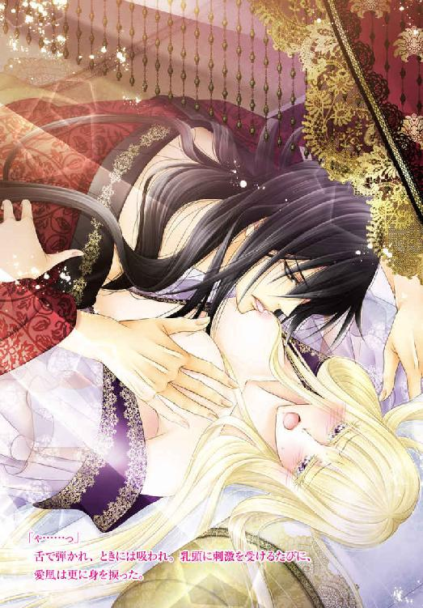
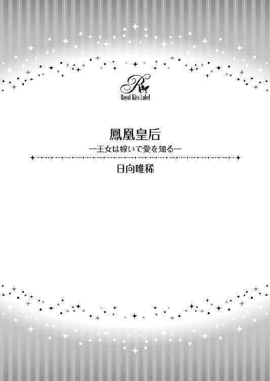
この物語はフィクションであり、実在の人物・団体・事件等とは、いっさい関係ありません。
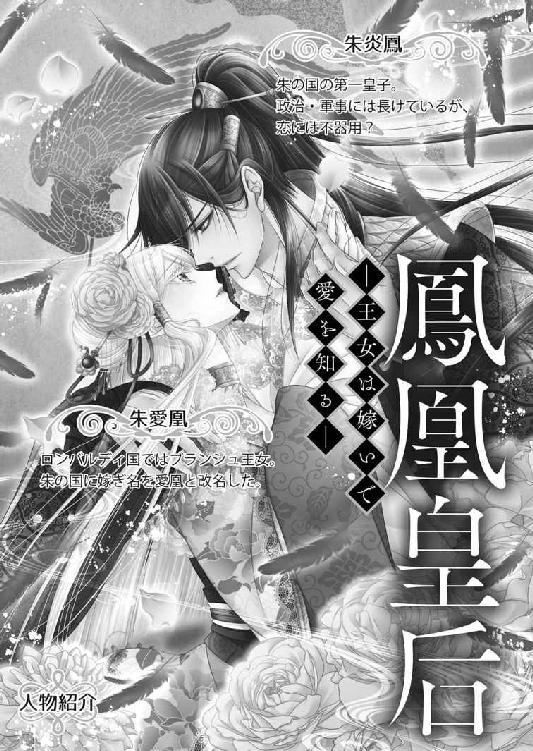
イラスト・水綺鏡夜
山の木々が紅葉に染まる季節。
先頃成人の儀を終えた皇子・朱炎鳳の婚儀を恙なく終えた朱の国の夜空には、真円の月が浮かんでいた。
「まあ。なんて透き通った白い肌なのでしょう」
「絹糸のように細くて、腰まで真っ直ぐな髪。大粒の紫水晶のような輝きを放つ二つの瞳。紅もさしていないのに、唇は熟れた果実のように赤々と......」
「本当──。溜息が出るばかりの美しさね」
朱皇帝一族が住む鳳凰城・東の棟の一室では、女官たちが賛美の言葉を漏らしている。
湯浴みを終えて寝所へ向かう支度を調える旧姓名ブランシュ・ビエラ・ロンバルディ。婚姻を機に朱愛凰と改名した彼女の美しさ、また聡明さに目を奪われて職務さえ忘れているからだ。
（この国での私は、余程珍しいのね）
漆黒の髪と瞳を持つ朱の国の者たちの中で、他国から嫁いできた愛凰の存在は、言うまでもなく浮いていた。
肌、髪、瞳の色。どれをとっても同じものがない上に、そもそも生まれも育ちも違うのだ。これは仕方ない。
しかし、細やかながら孤独や疎外感を覚えているのは愛凰だけで、女官たちはとても好意的だ。
口々にして褒め称えたように、目映いばかりの皇子妃を見つめて頬さえ染めている。
その様子に嘘偽りは微塵も感じられない。
（だめだめ。こんな風に考えては。私が嫁いできた意味を思い出すのよ、朱愛凰。そして、自ら嫁ぐと決めた意味を──）
ふと、一番幼い女官と目が合ってしまい、愛凰は口角を上げた。
笑顔とは言いがたいが、品のある高貴な微笑だ。
彼女の持つ血統・ロンバルディ国第一王女にふさわしいそれに、若い女官は歓喜の声を上げそうになる。「きゃ」と発しかけて、慌てて両手で口を押さえたほどだ。
そうしてさらに嬉しそうに愛凰を見つめる。
ここまで喜ばれると、内心であっても愚痴れそうにない。
愛凰はグッと奥歯を噛みしめる。
「愛凰様はお美しいわ。朱の国一の──。いいえ、この東の地で一番の花嫁様ね」
「ええ。こんなに美しくて、教養深いお妃様を召されるなんて。なんだか炎鳳様に嫉妬してしまいそう」
「まあ。変な焼きもち」
「本当」
女官たちの興奮や歓喜は止まるところを知らない。
すると、パンパン！ と手を打つ音が響いた。
反射的に、その場にいた全員が口を噤み、背筋を伸ばす。
「さ、おしゃべりはそこまでになさい」
別室から現れ、声をかけてきたのは、ほっそりとした姿態に黒い長衣を着用した年配の女官長だった。
早くに他界した皇后の代わりに二人の皇子を育て、また教育してきた母親代わりでもある。
姑とは違うが、厳格で知識人で男勝りな性格だ。愛凰にとっては、どう接していいのか難しく、悩ましい女性でもある。
「愛凰様。用意が調いましたら、寝所のほうへ」
「......はい」
一瞬にして静まり返った部屋の中から、真っ白な薄絹を幾重にも重ねて作られたガウンのみを羽織った愛凰だけが誘導されていく。
女官たちは深々と頭を下げて、その後ろ姿を見送った。
湯殿から寝所までは、控えの間を入れて四つほど。各部屋に担当女官がおり、みんな同じように礼を尽くして通り過ぎる愛凰を見送るが、その人数は徐々に減る。
寝所の手前まで来ると、女官長を含めても三名ほどだ。
そうして、最後に通された寝所にはまだ誰もおらず、窓からは月光が差し込んでいた。
所々に置かれた、行灯の薄明かりに浮かび上がる薄絹に囲われた四柱の床だけが、愛凰の目を奪う。
鼓動が強く、激しく高鳴った。
「ご存じかとは思いますが、当家にも古くからのしきたりがございます。明朝には女官長のわたくしが寝間の床検めをいたしますが、どうかご容赦くださいませ」
粛々とされる説明は、これから起こることが儀式──日中からの婚儀のいったんであることを愛凰に再確認させた。
明朝の床検めは、新婦が新郎以外の男性と交際経験のない処女であるか否かの確認だ。
この習わしは、高貴な血筋の家柄であれば、どこの国でも行われている。
それが一国の皇子、いずれは皇帝になることを約束された嫡男に嫁ぐとなれば、たとえ愛凰自身が王女であっても確認をされるだろう。
「はい」
すでに覚悟はできていた。
そう示すように、愛凰は力強く頷く。
「それでは、じきに皇子が参ります。わたくしはこれにて──」
女官長は丁寧なお辞儀のあとに、部屋を去る。
部屋から出て行く彼女の背を見送りながら、愛凰は薄絹を重ねて作られたガウンの胸元を利き手で掴む。
（いつか、誰かと結婚するのは私の務め。世継ぎを生んで育てるのも、王女として持って生まれた大切な宿命）
静かに呼吸を整えた。
（恋より信頼。愛より忠義）
そっと両目を閉じ、数時間前に婚礼の儀を終えた夫の姿を思い浮かべる。
朱皇帝の第一皇子・炎鳳。朱の国の守護神・鳳凰の子とも呼ばれる長身で筋肉質で、端正かつ凜々しいマスクを持つ青年だ。
幾重にも織られた重厚な紅蓮の婚礼衣装を纏った姿は、まさに朱の鬼神。東西の狭間に位置する朱の国はおろか、いざとなれば東側諸国すべてを守護する筆頭軍人でもある。
（祖国を守るために。いいえ、これからは両国の平和と民を守るためにも、まずは全力であの方の信頼を得て、また忠義を認めてもらわなければ──）
「入るぞ、愛凰」
今一度胸元を掴み直した愛凰に、声がかけられた。
炎鳳が湯浴みを終え、腰巻だけを身に着けて現れる。
「!!」
驚きから愛凰は息を飲んだ。
一瞬にして心を射貫いてくる漆黒の眼差し。
鴉の濡れ羽を思わせる黒い髪。
鋼のような筋肉が魅せる逞しい胸元に、逆三角形を描く上半身。
衣装を纏った姿のときより印象が細く、そこから伸びた両足はすらりとしていて爪先まで美しい。
しかも、この美は女体が魅せ、感じさせるものとはまったく違う。
愛凰は無意識のうちに、初めて目にする男性の裸体に見入ってしまった。
（まるで、神像のよう）
目を見開く愛凰に炎鳳が眉を顰めた。
「どうかしたか」
「っ、いいえ。ぼんやりしてしまいました。申し訳ございません」
愛凰はハッとし、ガウンの両側をドレスのように持ち上げて、深々と頭を下げる。
真っ直ぐに伸びた絹糸のような髪が、肩から滑り落ちて胸元で揺れた。
（機嫌を損ねてしまったかしら）
ますます胸の鼓動が速くなる。
「頭を上げろ。ここまで来て、かしこまることはない」
なかなか頭を上げることができない愛凰の視界に、歩み寄る彼の爪先が入り込んできた。
「お前はもう俺の妻だ。そして俺はもう、お前の夫だろう」
頬に手を宛がわれて、顔を上げる。
否応なく真正面から視線を合わせるが、愛凰の鼓動は激しさを増すばかり。漆黒の瞳の中に映る顔がこわばり、怯える子鹿のように震えている。
「愛凰」
名を呼ぶと同時に、炎鳳の両腕が華奢な身体を抱き寄せた。
（なんて堅い腕。鋼のような肉体）
愛凰は彼の腕の中にすっぽりと収まった。
どんなに見た目より細いと感じたところで、炎鳳は成人した青年だ。女性の中でもシルエットが細い愛凰とでは、体格も比較にならない。
改めて意識してしまう。
（もしも私が男なら、彼のような皇子として生まれてきたなら、婚姻による庇護など求めなかっただろうに──）
ただ、こんなときだというのに、炎鳳に対して新たな感情が起こる。
「震えている。俺が怖いのか？」
「......いいえ」
（不思議と怖さは感じない。これは......、武者震いに似ているのかしら？ 彼が妬ましいのもある）
愛凰の変化に気付いてか、炎鳳が両腕から力を抜いた。
じっと見下ろし、心の奥底を伺っているようだ。
（いけない！）
愛凰は炎鳳の胸に顔を埋めた。
（今更生まれは変えられない。性は......、どうすることもできない）
自ら寄り添い、瞼を閉じる。
まるで、服従するような態度だ。
（それに、もしも私が男だったら、この結婚による両国の結束は成り立たなかった。それどころか、ロンバルディはなんの後ろ盾もなく、西側諸国の争いに巻き込まれて──）
愛凰の背に回った両腕に、再び力が込められた。
炎鳳は利き手で金糸を撫で、軽くかき上げながら唇を寄せてくる。
（それを思えば......）
炎鳳が愛凰の顔を覗き込むと同時に、彼の唇が触れてきた。
東側の婚礼の儀式には、西側のような誓いの口づけは存在しない。
愛凰にとっては、これが初めての口づけだ。無意識のうちに身体が強張る。
「......んっ」
付いては離れ、離れては付く口づけは、角度を変えて繰り返される。
緊張からか、上手く呼吸ができない。
白い頬を撫でる手の大きさ、丈夫さに自身のひ弱さばかりを再確認されられる。
「ん......っ、ん」
愛凰は圧倒的な存在に身を委ねる以外の選択がない。
自身を差し出し、心から尽くすことで、愛凰は炎鳳への忠義を示し、信頼を得ようと身を硬めて服従し続ける。
「......ぁ」
唇が離れると、心なしかホッとした。
呼吸と共に、溜息も漏れる。
「──」
だが、すぐに新たな不安が込み上げた。
炎鳳の利き手が背から離れ、ガウンの上から愛凰の胸元を探ってきたからだ。
「......っ」
彼の手が乳房に触れたところで、ビクリとした。
いっそ止まってしまえばいいのに、鼓動が高まるばかりでどうしようもない。
愛凰は無意識のうちに瞼を閉じて、奥歯を噛む。
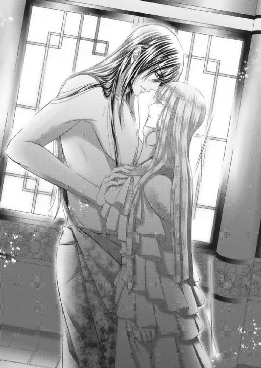
「怖くはないが──、震えは止まらないか」
すると、炎鳳が愛凰の身体を横抱きしながら、ぼそりと呟く。
真っ直ぐに向かった四柱と薄絹で閉ざされた床へ運ぶが、愛凰を純白の敷布へ寝かすと同時に両手を引いた。
「──炎鳳様？」
何か様子が違う。愛凰が瞼を開いて身を起こす。
すると、炎鳳は利き手を自身の背後に回し、腰巻きに挿していただろう短刀を掴んで愛凰に差し向けた。
「っ!!」
漆塗りに銀と螺鈿で鳳凰が描かれる短刀が、スッと鞘から抜かれた。
目の前に鋭く光る刃に、愛凰の呼吸が止まる。
「愛凰。お前は俺のものだ」
（殺される！）
反射的に身構えるが、炎鳳は自分の左前腕に刃を当てた。
「そして俺も、お前のものだ」
「っ!?」
愛凰が咄嗟に手を伸ばしたときには、スッと刃が引かれた。
「炎鳳様！」
切れた前腕からにじみ出す鮮血を、床の上へ垂らしていく。
（炎鳳さ......ま？）
真っ白な敷布に、点々と血痕が残る。
そして、それは真っ白なガウンの裾にも数滴滴り、さらに愛凰を驚愕させた。
「だが......。だからこそ、愛のない行為では喜べない。どんなに無骨な俺でも、そこまで目出度い男じゃない」
炎鳳は、刃を腰巻きで拭い、鞘へ収めてから愛凰に手渡してきた。
「それに──。俺には肉体のみを堕とすようなテクニックも無ければ、気の迷いを起こさせるような饒舌さも無い。強いて言うなら、見たよりは気が長いのが取り柄なぐらいだ」
何事もなかったかのように、自身の腰巻きを外して切った腕に巻き付ける。
愛凰に背を向け、床からも離れていく。
（炎鳳様！）
短刀を握り締めて顔を上げるも、目の前には一糸纏わぬ炎鳳の姿。それが後ろ姿であっても、愛凰は反射的に目を逸らした。
いっそ鼓動が激しくなる。
しかし、その間に炎鳳は寝所から続く奥間へ進んでいく。
幾重にも重なる布幕を利き手で分ける。
「待ってるよ。いずれお前も俺を求める。好きになる」
振り向きざまに炎鳳が放った。
「自ら俺の胸に抱かれて、すべてを差し出す。そんなときがくるのを信じて──」
それは婚儀の誓いよりもはっきりとしていて、力強い言葉だった。
心の奥深くを突いてくる。
（炎鳳......様）
愛凰が再び顔を上げたときには、炎鳳は奥間に消えていた。
思わず手にした短刀を握りしめて、胸に抱く。
「──婚儀の夜、初めての夜だというのに」
ようやくまともに呼吸ができた。
だが、それは悔恨の言葉と同時に叶ったもので、愛凰に安堵の余地はない。王女としても新婦としても役割が果たせなかった事実に、ただただ双眸が潤む。
「......」
白い頬から流れた涙が、朱の短刀に落ちた。
「!?」
よく見れば螺鈿細工の鳳凰は番いで、文字も刻まれている。
「我が生涯において唯一無二の伴侶・愛凰に捧ぐ」
日中に行われた盛大な婚儀が、国と国の結びを誓う儀式であるならば、今この手の中にある短刀は個人と個人の儀式の証。炎鳳から示された愛凰への誓いだ。
愛凰が自身を信頼と忠義の証としたように、炎鳳もまた短刀に己の心意を込めたのだろう。
「生涯、唯一無二の伴侶......。これが一国の王女を妻に迎えた皇子の誠意？ 責任感？」
愛凰は短刀を見つめながら、夫婦鳳凰を指でなぞった。
「でも、炎鳳様は愛のない行為では喜べないと言った」
炎鳳の心意、真意を探すように、刻み込まれた文字を読み返す。
「いずれ私が彼を求める。好きになる。それを信じて待つとも──」
いずれにしても親が子に、夫が妻に差し出す短刀には、いろいろな意味がある。
だが、他国から皇家に嫁いだ王女・愛凰にとっては、唯一無二の意味しか持たない。
「炎鳳様」
愛凰は今一度短刀を胸に抱き、炎鳳の血痕が残る床に身を横たえた。
溢れる涙を拭うこともできず、満月が太陽に変わるのをじっと待った。
愛凰が生まれ育ったロンバルディ国は、横に長い大陸を中央から分断する山脈の麓にあった。
標高三千メートルから四千メートルはある山脈を、西側の者たちは「地上の壁」と呼び、また東側の者たちは「神々の山」と呼んでいる。
それを超えて行こうとする者や国はない。
それぞれの地で生まれた人種や文化、宗教や政治などが誕生してから歴が浅いため、これらを育んでいくことに誰もが集中していた。
時の英雄、権力者たちが目を向けているのも、己の視界に広がる大地とそこに生きる民。集落から町を、そして町から国を起こした者ほど、いかにして自領土を豊かにしようかと思い悩み、また奔走しているところだ。
居然と連なる山の向こう側までは、意識が向かないのも自然の成り行きと言えよう。
ただ、実のところ山脈の一部には、東西の大地を結ぶ道──馬や小船で行き来することのできる空洞があり、その中には底深い湖もあった。
高山の雪解け水からなる湖は冷たく清らかで、東西の地に伸びて川となり、やがては海へと繋がっている。
そして、もっともこの清水の恩恵を受けてきたのが、洞窟の入り口一帯を先祖代々から所有するロンバルディ国王家と朱の国皇家だ。
まったく異なる文化の中で生まれ育ちながら、双方の一族が相手国の言葉を理解し話すことができるのは、古くから洞窟を通して行き来があったからだ。両一族が集落を町へと発展させたときには、確固たる友好と信頼関係ができあがっていたのだ。
しかし、両家の者たちは、必要以上に交流を深めて行き来を盛んにすることはしなかった。
それどころか町を興したときには、年に一、二度互いの状況を伝え合う以外は「地上の壁」「神々の山」の存在を守り、最も高い山の麓に東西を結ぶ道があることは門外不出、両家の秘め事と決めた。
両家に違わず、東西の各地で新たな町が興り、国が興り始めていた。その背景には民を魅了する英雄だけではなく、心酔させる権力者が誕生し、自国領土の拡大を目的とした争いをも生みだしていたからだ。
その情勢から先を見据えた両家の長たちは、この争いがいつか東西を合わせた大陸全土に発展するのではないかと危惧をした。
馬や船が主な移動手段である今、頂を雪に覆われた広大な山脈を越えてまで争いが勃発することは考えがたい。
だが、洞窟があると知れたらどうだろうか？
舟が、馬が、難なく通れる道があるとしたら？
真っ先に争いの渦中に置かれるのは、言わずと知れたロンバルディであり朱の国だ。
まずは互いの領地と住民を意に沿わぬ争いから守護するためにも、洞窟道の存在は隠さなければならない。
この山脈は越えられない壁であり、超えてはならない神の化身として、子々孫々の時代まで言い伝えねばならない。
いずれは万人に知られる時代が来るだろう。
いつかは当然のように、東西の人々が交流する時代も来るだろう。
しかし、それは今の世ではない。
少なくとも、東西のいずれかどこかで争いが起こっているうちは、知られるべきではないだろうと判断し、結束したのだ。
そうして町は国となり、瞬く間に百年が過ぎた。
王家の秘密、朱家との結束を守りながら、ロンバルディ家の一族は争いを好まない国を作った。
いかなる時にも参戦しない中立国として宣言し、西側諸国でもその名を馳せている。
緑豊かで平和なロンバルディ国。
その三代目国王の長女として生を受けたのが、のちの愛凰だ。
「おお......。なんと愛らしい姫の誕生だろうか。この小さな命を祝うように、白鳥まで城へやってきた」
「それはなんという幸せ」
「本当にな」
その日は季節外れの白鳥が集まっていた。
まるで、王女の誕生を祝福するかのように城の周囲を飛び続け、庭へ降り立ち、まだ若い国王と王妃を心から微笑ませている。
この国には、古くより「白鳥は幸福の象徴である」という一説があった。命の誕生の時、その家に白鳥が舞い降りた者には、特別な神の加護があるのだと信じられている。
国王夫婦の喜びはいっそうのものだ。
「旦那様。祝福と共に誕生した姫に、どのような名をお付けになります？」
絹のような金髪に青紫の瞳が輝く美しい王妃。
そして、その美しさをそのまま持って生まれた王女を見つめて、国王はにこやかに答えた。
「ブランシュ──。ブランシュ・ビエラはどうだろうか？」
「ブランシュ・ビエラ？」
「あの白鳥たちと君の名前から」
「まあ、素敵。光栄だわ」
ブランシュは純白。ビエラは聖母。
「ブランシュ・ビエラ。私の可愛い娘。どうか健康に育ちますように。そして、いずれはこの国を慈愛で治め、民を導く賢き女王となりますように──」
美しく優しい両親に見守られ、愛凰は誰もが心を奪われるような愛らしい少女へ育っていった。
しかし、愛凰の誕生から八年後──。
思いも寄らない不幸が愛凰に、ロンバルディ国に訪れた。
「残念ですが」
「ビエラ!!」
ロンバルディ王妃死去。
第二子の難産が元だった。生まれたばかりの小さな命に、母は存在しない。
「なんてことだ......」
「──王妃様っ!!」
城内に務める者、知らせを受けたすべての国民たちが王妃の死を嘆いて悲しんだ。
「お母様......」
愛凰とて、まだまだ母親が恋しい年頃だ。あまりの衝撃の大きさに愕然としてしまう。
しかし、生まれてから一度も母に抱かれることのなかった妹を思うと、声を上げて泣くことさえできなかった。
むしろ、残された小さな命をどうしたらいいのだろう？
これから自分は何をすれば、この子を笑顔にできるのだろう？
今まで自分が与えてもらった幸福は、いったいどんな形でこの子に伝えればいいのかと、そんなことばかりを考えてしまったからだ。
（お母様──!!）
ただ、悲しみに泣き暮れることができないのは、愛凰だけではなかった。
最愛の妻を亡くした国王もまた、思いは愛凰と一緒だ。
「ブランシュ、ちょっと。一緒においで」
「──はい」
生まれて間もない妹を抱く王に導かれて、愛凰は城内から裏庭へ出た。
城下町からは森が広がっているようにしか見えない城の裏には、洞窟湖より通じる小川が流れている。
森の入り口から裏庭には草花が茂り、日を弾き、季節ごとに彩りを変える小さな楽園だ。
「え？ 薔薇の花びら」
だが、今は新緑の季節。例年ならば、木々も地面も緑に覆われる。
愛凰の瞳にピンク色の花びらが映るはずはないのだが、それは確かに風に舞っていた。
森の奥からはひんやりとした風も吹いてくる。
「──いや。とても似ているが、この花びらは隣国に自生する〝華羽〟というものだ」
「華羽？」
「そう。何十年に一度だけ気紛れに花を咲かしては、すぐに風に吹かれて散ってしまう。先祖が洞窟の先にある東の地の存在を知ったのも、あの華羽がきっかけだ。こうして飛んできた花びらを見ることしかできないが、天使の羽根とも呼ばれているそうだ」
王は、それが隣国・朱の国の花であることを愛凰に伝えた。
八歳の愛凰にとっては、初めて見る華羽の花びらにして、東の地もの。絵空事とのような秘境からの届け物だ。
「天使様の羽根」
愛凰は思わず両手を伸ばした。
手に触れた華羽の花びらは、とても軽くて薄かった。
白鳥の羽根とはまた違った愛らしい色と姿で、淡雪のように、風に舞い踊っている。
「隣国でも貴重な花だけに、華羽の咲く年に誕生した者には、天使の羽根が宿るとも言われている」
王は静かに語り続けた。
「では、この小さな命は、天使様に守られて誕生したのかもしれませんね。お医者様も、この子が息を吹き返したことが、すでに奇跡だとおっしゃっていたし」
「ああ。神は同時に二つの命は奪わなかった。私たちは残された命にまずは感謝し、悲しむ前に、この子を王妃の分まで慈しんでやらなければならない」
王の腕に抱かれる小さな命、愛らしい妹を見つめながら、愛凰は微笑む。
そして、意を決したように力強く言い放つ。
「お父様。私がこの子の母になります」
「ブランシュ」
「お母様が私を愛してくださり、与えてくださった愛を、優しさを、私がこの小さな手にすべて伝えてまいります」
キュッと握り締められた赤子の手の中には、夢や希望や幸せの数々があるという。
そして、己の力で生き抜く源を掴んでいるのだと──。
「いい子だな、ブランシュ。では、お前がこの子に名を付けてあげなさい」
「私が？」
驚く愛凰に国王はしっかりと頷いて微笑んだ。
愛凰は舞い飛ぶ華羽の花びら、薔薇の花びらにも似たその姿から、妹王女にローズ・ヴィクトリアという名を考えた。
「ローズか。愛らしい名だな」
「はい。どうか可愛い妹に、これからずっと天使様のご守護がありますように──」
軟らかい蜂蜜色の巻き毛と、紫の宝石を鏤めた瞳の愛らしい妹・ローズ・ヴィクトリア。のちの華羽は、愛凰にとって何者にも変えがたい存在であり、またいかなる苦難や悲しみを笑顔に変える希望そのものとなった。
そうしてさらに三年の月日が流れた。
愛凰が十一歳になった頃、大陸の南西部に位置する国同士で争いが勃発した。
「なんだと、将軍!? それは本当か！」
「はい。ジプシーたちの話によれば、すでにミローネ軍は西の地一帯を制圧。体制も新たに、南へ進軍中とのことです」
「南へ？ ミローネ国王は、西部はおろか南部まで我が物にしようというのか!?」
「おそらくは」
「なんということだ」
理由や目的は、これまでのような領土の拡大ではなかった。
近年新たに芽生えた思想の相違、政治や宗教などに対する価値差が広がったことで、これまでのような話し合いや和解が不可となった。そこへ先祖の頃より燻ってきた不満が爆発、一気に武力抗争へ発展したのだ。
そして、中でも一番驚異とされたのは、戦いに勝ち続けて領土を拡大する最西部の大国・ミローネ王の存在だった。
〝我こそが大地の覇者にして神に選ばれし者、ヴァレリオ・ガイオ・ミローネ。無数の諸国を統一し、今こそ大王とならん〟
それからミローネ王は、二年をかけて南へ領土を拡大し、さらには北東の国々へ目を向け始めた。
このままではそう遠くない日、山脈を背に国を構える西側諸国の最東部、ロンバルディ国にも攻め込んでくるだろう。
そうなれば、どれほど反戦を唱えたところで、中立国家の立場は無くなくなる。
西側全土がミローネ国の軍門に降れば、否応にもロンバルディ国は武力で制され、新たな統一国家の一部として呑み込まれてしまう。
「王よ。どうかご決断を！ もはやミローネ王相手に、交渉の余地はございません。近隣国と軍事協定を。我が軍の更なる強化許可を！」
「将軍」
城内では、国を動かす王と者たちの話し合いが日増しに増えた。
「中立を唱えている場合ではございません。このままでは、我が国だけが孤立してしまいます。反ミローネ国の旗を立ち上げ、すぐにでも隣国と手を組まねば！」
「大公まで」
他国が戦乱の最中、十三歳になっていた愛凰は華羽を抱きしめながら、王の決断に耳を傾けるしかなかった。
自国へさし迫った戦争の危機感は、母を亡くした悲しみや苦しみとはまったく異なるものだ。
言葉にならない、例えようもない底知れぬ恐怖が、どこからともなく湧き起こる。
すると、会議の場に乗り込み、声を上げる者が現れた。
「何を言うのです。孤立を恐れて中立国家の維持などできるはずもない」
「アデリナ！」
アデリナは二十代半ばで、グラマラスな美女だった。
海に面した南の生まれらしく、焼けた肌に腰まで伸ばした赤茶の髪を持っている。
「無礼者！ 流れ者の分際で、このような大切な場に」
「そうだ！ いくら大公の好意で城内勤めに召し抱えられたとはいえ、立場も弁えられぬのか！ 踊り子風情が」
「もちろん立場は存じております。これはお手討ち覚悟の進言です」
「なんだと!?」
屈強な面構えをした将軍が脇差しの剣に手を掛けても、アデリナは微動だにしなかった。
それどころか王に向かって跪き、力強い眼差しを向ける。
「──偉大なるロンバルディ国王よ。どうか安易なご決断はなさらないでください。この地、ロンバルディは清水と自然に恵まれた平和な国。王家と国民が心を一つにし、争いを好まず、反戦の意を掲げて中立を望んだ国。いかなる国にも属さず、武力にも屈さず。しかし、だからこそ諸外国の民たちはロンバルディに焦がれ、王家を尊敬し、羨望の眼差しを向けているのです。それはこのアデリナが、流れ者ゆえ行き先々で見聞きしてきた事実にございます」
幼い頃よりジプシーの中で育ち、踊り子をしながら西側諸国を旅したというアデリナ。
しかし今年に入り、ロンバルディ国を訪れたところで、彼女は仲間を抜けて流浪の旅を終える決意をしたという。
この国で残りの人生を過ごしたい、平和の象徴でもあるロンバルディ王家に尽くしていきたいと熱望し、城下町へ在住。その半年後、大公の目にとまり城内勤めに抜擢された。
彼女が持つ豊富な知識と他国の情報量は、西側諸国の情勢を知るのに役立つ。
その上巧みな話術は人を魅了し、刃の輝きさも霞ませる凄艶な美貌は、妻は亡くした王の慰めになるのではないかと考えられたからだ。
「ここで近隣国と軍事協定など結べば、やはりロンバルディ王もミローネ王には恐れを抱いた。意を曲げ戦いに備えた、兵を揃えた、と失望するでしょう。やはり平和と武力は背中合わせ、決して切り離せないものなのだと」
「綺麗事を言うな！ 所詮お前は外の者。ロンバルディの者でないから、そのようなことが言えるのだ!!」
愛凰は、終始凛とした姿勢を貫き、自身の意見を堂々と述べたアデリナに尊敬を抱いた。
だが、その反面止まることなく湧き起こる不安に駆られて、華羽を抱く手に力が入る。
「待て、将軍。アデリナの申すことにも一理ある。我が国が中立の意志を曲げては、これまで以上に武力が横行してしまう。それこそミローネ王の思うがままだ」
「何を血迷っておられるのです。お気を確かに！」
「私はいたって冷静だ」
「王よ！」
「まあ、聞け。大公」
王も、アデリナの言葉に奮い立つものがあったのだろう。その場で結論を出した。
「武力で争うだけが戦いではない。だが、我が国だけで対抗、抵抗するには無理がある。いずれにしても、隣国に協力を求めることは不可欠だ。特に山脈伝いの国々には──」
ロンバルディは何があっても中立を守る。
昔も今も他国との戦争はしない。
確固として反戦を唱え、同時に未来永劫独立した一国であることを貫く──と。
そして、この決意表明に賛同した近隣諸国、主に北東部の王たちが一丸となったことで、ミローネ王を牽制することに成功した。
これ以上の進軍を回避したい南部諸国からも、反戦に賛同する王たちが現れ、ミローネ軍は多勢に無勢を悟り、撤退せざるをえなくなったのだ。
（よかった──。お父様）
愛凰はひとまず安堵した。
ただ、胸中からすべての不安が消えることはない。
むしろ、これを機に別の形で大きくなっていく。
「アデリナ。お前のおかけで、無駄な争いを起こさずにすんだ。礼を言う」
「もったいのうございます。すべては王様のお人柄。日頃より得られてきた信頼の賜物でございます」
その後、これまで以上に信頼を得ることになったアデリナは、王の側役に任命された。
朝となく昼となく王と一緒に過ごす時間が増えた。
独り身の王が心を寄せていくのが目に見えてわかった。国民や娘たちの存在を第一に考えてはいても、王は次第にアデリナを愛するようになったのだ。
「アデリナ」
「我が王よ」
当然、彼女の出生ゆえに、必要以上に側へ置くことに反対する家臣は多かった。
どうしてもと言うのなら、せめて奥間に。寵愛を与えるだけにしてくださいと進言する家臣たちも少なくない。
だが、誠実にして実直なロンバルディ王は、アデリナを後妻に迎えること決めた。
形として大公の養女に出すことにはなったが、アデリナを正式にロンバルディ国王妃として迎えたのだ。
「お父様──」
王位継承権がすでに娘たちのもの。借りにこれからアデリナに王の第三子ができたとしても、継承順位は愛凰、華羽の次となる。
その決まり事に変更はないが、それでも愛凰には理解しがたい出来事だった。
かといって、面と向かって反対できるかと聞かれると、それもできない。
母親亡きあと、たった一人で国王いう重責を担っていた父に対して、愛凰がまだ何ほどの力にもなれないことはわかっていた。
常に王を支え、励みになる者は必要だ。王とて人間、父とて男。職務の合間に心安らげる場所がほしいと願い、欲したところで仕方がない。
──どんなに愛していても、娘では補いきれない情がある。
愛凰はそう言って自分を納得させるしかなかった。
今の自分にできることは、立派な女王修行。
そして、華羽の母親代わりだけだと割り切って──。
愛凰が十四歳の時に迎えた新王妃・アデリナは、それからいっそう王の傍らに身を置き、国政ごとにも積極的に意見を出した。
確かに諸外国を見て育ったアデリナの意見は貴重であり、また理にかなったことも多かった。彼女自身の努力もあるのだろうが、勤勉で賢い女性であったことも確かだ。
しかし、愛凰が十六歳になったときに、王である父親が病で倒れた。
ロンバルディ国の政治・議会そのものがアデリナやその養父となっている大公を中心とするようになった。
常に王の意見、意志が尊重はされていたが、このままでは国政の実権がアデリナと大公の手に渡るのではないかと危惧する家臣が増え始める。
中には王が少しでも元気なうちに、愛凰を女王に据え、それをみんなが一丸となって支えていくほうが軸がズレずに済むのではないか、という意見も出始めた。
だが、年齢的にまだ若く体力もある王だけに、病の改善に希望がある。現段階で成人もしていない王女と交代、即位をさせるのもどうなのだろうか──と、この話は反故にされた。
意見は様々でも、唯一無二の王への絶対的な忠誠心はみんな同じだ。
愛凰も家臣たちの思いを信じ、また王の回復を信じて、現状を見守ることにした。
そうしてさらに二年が経った。
前王妃に生き写したような美少女として成長した愛凰は、十八歳。
ようやく政治ごとに参加することが許され、認められる年になったときに、ミローネ国が再び進軍を開始した。
撤退から五年の時をかけて武装を強化。以前とは比較にならない猛進撃で、あっという間に南部を攻め落としたのだ。
「いっときは自国へ撤退したミローネ軍が、ときと共に力を蓄え南部諸国を陥落。そして北部への進軍を開始した。もはや平和協定、同盟などでこの地を守ることは難しい」
悪化しないまでも、回復の兆しを見せない王に代わり、城内の指揮をとっていたのは王妃・アデリナだった。
──今は誰がどうという主権争いをしているときではない。
愛凰もこの状況だけに水を差すような発言は、あえてしなかった。
「我が王が、病で床に伏せたことも大きかったのだろう。近隣諸国の王たちは覇気を無くし、結束そのものが緩んでしまった。この状況でミローネ軍に攻め入られれば降伏、寝返ることも十分に考えられる。だが、誰もが我が国、我が民を死守することは当然であろうし、それを裏切りと責めることは、ロンバルディ王の本意ではない。──では、今後我が国はどのようにミローネ軍に対抗していくのか。ついてはブランシュ。ローズ。すべてがあなたたちにかかっています」
しかし、それが愛凰と華羽の運命を変えた。
まるで先の見えない闇の道を行くことになった。
「ブランシュ様とローズ様に!?」
「それはどういうことですか、王妃！」
「これより二人には朱の国へ嫁いでもらいます。ロンバルディ王家は、秘境にして東の軍事大国・朱の国の皇家と婚姻で縁を結び、庇護を受けるのです。すでに向こうでの名もいただいております」
アデリナは王家の秘密を知っていた。
朱の国へ通じる洞窟道を通じて、すでに相手方の皇家と連絡を取り合っていたのだ。
「なんと!? 朱の国に！」
「向こうでの名とは!?」
「朱皇家方の習わしだ。皇家に嫁ぐ娘に皇帝陛下より直々に与えられ、それが生涯の通り名になる」
「生まれ持った名を捨てろと言うことか!?」
「朱の国では、名誉ある称号とされている」
「しかし、ブランシュ様とローズ様は我が国の王女ぞ！」
「気は確かですか、王妃様！」
これには将軍を始め、大臣たちもざわついた。
どれほど秘密だと言ったところで、城内勤めの者たちすべてに洞窟のありかを隠すことは不可能だ。
国を動かす一握りの人間たちは、この秘密を共有している。隣国とはいえ、習慣や価値観に違いがあることも知っているからだ。
「もちろんです。このことは、すでに王もご承知です。朱の国と交わした密書の数々も、すべて王の手配によるもの──。おかけで、朱の国からはこれ以上ない好条件で、この婚姻と我が国の庇護を快諾していただきました」
「好条件ですと!?」
「ブランシュ王女。あなたは愛凰と名を改め、時期皇帝となる第一皇子と結婚し、朱の国の皇子妃となってもらいます。そしてローズ王女。あなたには華羽と名を改め、第二皇子と結婚し、皇子が成人したのちにロンバルディへ帰国。二人で王位を継ぎ、この国を盛り立てて守り続けていくのです」
こうしてアデリナから愛凰と華羽に、王の決定として政略結婚が言いつけられた。
ようやく十歳になったばかりの華羽は、驚くまま愛凰にしがみついている。
「なんですと!? それではまるで、結婚とは名ばかりの人質ではないですか！」
「そうです。何を考えておられるのだ、アデリナ王妃！ だいたい好条件なだというなら、なぜ我が国の王女二人が揃って朱の国へ!? せめてどちらかお一人が残り、皇子のお一人が我が国へお越しになって過ごされるのが対等な条件ではないのですか!? だいたい相手の皇子が成人したのちとは、何年後のことなのです!?」
「ふむ──。非情なようだが、この場合はローズ様を朱の国の第一皇子の元へ。そして朱の国の第二皇子にロンバルディ国へお越しになってもらい、ブランシュ様の婿になっていただくのが、一般的と言えよう。確か両家の兄弟共に、そう年の差は離れていないはずだ」
将軍や大臣たちが、口を揃えた。
すると、アデリナが柳眉をつり上げ、手にした扇子の先を彼らに向けた。
「何を血迷っておられるのです。この期に及んで対等などと......。そのような主張が、我が国にできるとお思いか!?」
鬼気迫る物言いに、一瞬男たちが息をのむ。
愛凰は沈黙を守り、アデリナの言葉に耳を傾ける。
「そもそも、こちらから朱の国に庇護を求めたのですよ。ましてや戦争が起こっているのは西側諸国であって、東側諸国ではない。それにもかかわらず、あえて危険な国のほうへ皇子を寄こせ、その上いざというときには兵を出して、命がけでロンバルディを守れと言うのですか!? それを我が王に言わせるというのですか！」
「しかし！ ロンバルディ王家の正当な血を引く者は、ブランシュ様とローズ様のみ。万が一にも朱の国に囚われ、そのまま......などということになったら取り返しが！」
「そうです!!」
王家を守る家臣としては、当然の抵抗であり発言だった。
先祖代々王家に仕え、支えてきた家臣ならば、納得できるはずもない婚姻条件だ。
中には、「だからこんな再婚は反対だったんだ」「王家には入れるべきではなかったのだ」と、アデリナを貶める者もいた。
「この先ミローネ軍に攻め入られ、万が一にも国が終われば王女も王家もありません。むしろ、どのような事態になっても、二人が朱の国で生きている限り、ロンバルディ家の血は守られるのでは？ もちろん。何をどうしたところで、他国など信じられない。百年続いた結束がある朱の国であっても信用に値しないと言うのなら、すべてを白紙にしても──」
「それには及びません」
呆れるアデリナに対して声を発したのは、華羽の肩を抱く愛凰だった。
「ブランシュ様」
「王女様！」
「私がローズを。いいえ、華羽を連れて朱の国へ参ります」
愛凰は凛とした姿勢で、家臣たちに言い放った。
「ここは王妃様の言うとおりです。今は王家の血筋がどうのと言っている場合ではありません。民の命に関わる庇護を願うのは、こちらの事情。そして、あちらがこのような条件程度で応じてくださるのは、あちらの事情。単に両国が百年来の同盟国だからではないでしょう」
アデリナの説明では足りなかったのであろう、厳しい現実も口にした。
「ロンバルディが攻め入られ、洞窟道がミローネ国に知られて手に落ちれば、意に沿わぬ戦いが朱の国へ流れかねない。東諸国に災いが広がりかねない。そなたたちも両国の立場を入れ変えて考えれば、わかることでしょう。朱の国にとって大切なのは洞窟道の在処。それを今になって脅かす弱国の王女二人など、人質の価値さえない。それどころか、疫病神だということが」
「ブランシュ様」
「──なんということだ」
自ら自国と王女の存在を貶めて聞かせる愛凰に、家臣たちが次々と膝を折る。
だが、綺麗事では済まされない事実だけに、どうしようもない。
「それにも拘わらず、いずれ華羽と第二皇子をロンバルディへ帰してくださるというなら、本当にこれ以上の好条件はありません。仮にそのとき王位を第二皇子に、朱の国の者に委ねることになったとしても、それはすべて我が国の弱小さ。武力より話し合いによる和解に人力を注いできた結果。今更悔いたところで仕方がないこと。むしろ私は誇りに思います」
これまで国防について方針を決めてきたのは、王家とその家臣たちだ。
ならば、最初に責任を負うのは王家の者たち。愛凰は、王がそのように判断したのだろうと真摯に受け止めた。
「ロンバルディは争いを好まず、平和を愛す国。ただ、だからといって、このまま民を危険に晒すわけにはいかない。ミローネ国の魔の手からだけは、なんとしても守らなければならない」
発した言葉に嘘や迷いはなかった。
婚姻による新たな軍事同盟を結ぶとはいえ、王女が朱の国でどのような扱いをされるのかは、想像が付かない。
過去に他国の制圧を受けた国の王族男子は命を奪われ、女子はハーレムへ幽閉されたという記録書を読んだこともある。
もはや愛凰の目の前には洞窟道という闇の道、不安が湧き起こるばかりの未来しかない。
「さ、出国の準備をお願いします」
それでも愛凰の決意は揺るぎなかった。
「──王女」
「ブランシュ様......っ」
泣き伏す家臣や女中たちを前に、愛凰は震える華羽の肩を強く抱きしめる。
「大丈夫よ、ローズ。ううん。今からは愛凰と華羽ね。でも、安心して。何があってもあなたのことは私が守る。必ずロンバルディへ帰してあげる。ローズに戻してあげるから」
「......姉様」
そうして数日後──。
愛凰と華羽は、数名の家臣と共に朱の国へ向かうことになった。
王である父は、伏せた床で娘たちを見送り、無事を祈ることしかできない。
「お隣の国へは船で行くの？」
「そうよ」
不思議そうに聞く華羽に、愛凰は困ったように答える。
「本当にこれで？」
「大丈夫よ。私がいるでしょう。さ、もっと側へ寄って」
「──はい」
愛凰たちがアデリナや大臣に見送られ、ロンバルディ城を出たのは三日月が夜空に浮かぶ夜。山の麓に広がる森より城地内に流れる川を登り、その先にある湖と国境を目指して、洞窟内を進んでいく。
そのため、愛凰たちを乗せて移動するのは、乗員十名足らずのゴンドラ。装飾は立派だが一国の王女が国を出る、隣国の皇家に嫁ぐにしては貧相といえよう。
前王妃の形見や結納代わりの宝飾品以外は大した嫁入り道具もなく、見送る一般市民も居なければ祝福の鐘さえ鳴らない。
これには付き添いの家臣たちが松明の陰で涙を拭い、それらがいっそう愛凰の不安を煽った。
「寒くない？」
「平気よ。姉様がいるもの」
「華羽ったら」
それでも松明の炎と岩盤の隙間から差し込む月明かりに照らされた洞窟内は薄らと明るく、とても神秘的だ。
静寂の中、水の流れとゴンドラを漕ぐ音だけが響いて、細やかだが気持ちも癒やされる。
ただ、愛凰が生まれて初めて入った洞窟には、中央にある湖に繋がる細い川と、その両脇に川幅と同じぐらいの砂利道が続いていた。
これらは愛凰が想像していたよりも大きく広く、一度に大人数が行き来ができることがすぐにわかった。
手漕ぎの船なら六時間から八時間。早馬ならば二時間もかからずに移動ができる。
東西の交流や貿易に使うのなら、これほど便利で楽な道はない。
しかし、軍事路として使われるようなことになれば、危険極まりない死の道となるだろう。
（この洞窟道だけは、ミローネ王に渡せない。かといって、東の軍事大国である朱の国にすべてを任せるのもどうなのだろうか？）
どれほど気持ちをしっかり持とうと思っても、愛凰の不安は刻々と底の知れぬ苦悩へと変わっていく──。
「......姉様」
そろそろ川幅が広くなり、湖を挟んでの国境が近くなってきたところで、ローズが愛凰の腕にしがみついてきた。
クリクリとした紫の瞳には涙が浮かび、今にも溢れ落ちそうになっている。
「どうしたの？ 怖くなってきたの？」
「ううん。違うの......。ローズは、華羽はずっと姉様と結婚される方は、白鳥の王子様のような人だと思っていたの。兄様になる方は、とびきりハンサムでお父様よりもっとカッコイイ方って。それなのに、顔も分からない人のお嫁さんにされるのねって思ったら、どんどん悔しくなってきて......」
問いかけた愛凰に返って来たのは、思いも寄らない返事だった。
幼いながらも勝ち気な華羽。母親代わりの愛凰が大好きなのが、言葉の端々から伝わってくる。
「悔しい？」
「だってローズは、華羽は不細工な王子様なんて絶対にいやっ！ 姉様は誰より綺麗で素敵なのよ！ その姉様がお嫁に行くなら、金髪の青い目をした絵本に出てくるような素敵な王子様じゃなきゃいやなの！ だから、もしも朱の国の皇子様が不細工だったら、華羽が二人と結婚するから！ お嫁になるからね!!」
しかし、さすがにこの内容には愛凰も驚いた。
愛凰同様、緊張しながら船を進めていた家臣たちも、一瞬顔を見合わせ唖然としてしまう。
「あなた、なんて事を言い出すの」
「だっていやなんだもの！ どうしてもどちらかと結婚しなければいけないって言うなら、ちょっとでも素敵な皇子と結婚して！ でも、考えるのもいやな皇子だったら、お前たち！ 姉様だけでも内緒で逃がすのよ！ いいわね!!」
嫁入りが決まってから今日までの数日、いつになくしおらしかったので、余程怯えているのかと心配していた。
突然与えられた名前を受け入れるだけでも、そうとう苦痛なのだろうと。
しかし、実のところはこれだった。
そもそも華羽にとっての最重要点が、愛凰や家臣たちとは違うのだ。
思いがけない話に、船上で笑いが起こる。
「か、かしこまりました......、華羽様」
「必ずや──くくく」
──果たせるわけもない約束だが、せめてこの場ぐらいは和やかに。
そんな思いもあり、家臣たちも調子よく返事をした。
「この子ったら、もう......」
今だけは一緒に笑うしかなかった愛凰も、家臣たちに合わせて頷いてみる。
すると、微かに笑みを浮かべた愛凰を見上げて、華羽が改めて抱きついてきた。
「......姉様。華羽は平気よ。姉様が一緒なら、どこへ行かされても平気。名前が変わっても、誰のお嫁さんにされても、姉様が笑ってさえいてくれれば平気なの」
愛凰の胸に顔を埋めて、きゅっと唇を噛みしめる。
（華羽......）
大人でも難しい情勢や事情を、華羽が理解しきれていないのは無理もない。
だが、どこの誰より愛凰の不安を感じ取り、そして苦悩や恐怖を理解しているのは、この華羽だ。
「そうね。私も平気よ......。どこへ行っても、なんと呼ばれるようになっても、あなたが笑ってさえいてくれたら、私はそれだけで幸せ」
「姉様！」
揺れるゴンドラに身を任せながら、愛凰は今ほど華羽の存在に感謝したことはなかった。
（何があっても、この子だけは守る。天国のお母様。どうか私に勇気を、力を貸して）
華羽を抱きながら、今一度己に誓う。
何者にも、何事にも、怯むことなく立ち向かうことを──。
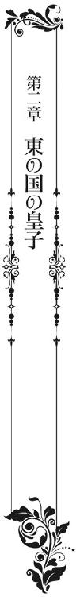
一方、朱の国の鳳凰城では──。
「結婚？」
「は!? この俺が隣国の王女と婚約だ!?」
炎鳳たちが父親である朱皇帝から、「そう言えば、明朝に嫁が到着することになった」と言い渡されたのは、夕食を摂り終えた直後のことだった。
厳つい顔つきに大柄な体格を持つ朱皇帝は、一見近寄りがたい存在感を放っている。
だが、実際は人当たりがよく、普段の口調も朗らかだ。
皇子たちの結婚話やその経緯説明さえ、夕食の感想の延長で始めたものだから、第一皇子の炎鳳は唖然としてしまう。
驚きから声を荒らげたのは、今年で十三歳になったばかりの第二皇子・陽鳳だ。
「ふむ。いずれにしても両家の結束は強まる。めでたい話だ。嬉しかろう」
婚姻による新たな軍事同盟の成立が愛凰や華羽にとって急な話なら、皇子たちにとっては寝耳に水だ。数日前に聞かされた愛凰たちのほうが、まだ気持ちの整理がつけられたかもしれない。
今夜の明朝では考える余地もない。お断りどころか逃亡さえ謀れず、完全に外堀を埋められている状態だ。
「冗談じゃねえよ！ 誰が今年十歳になったばかりの餓鬼と婚約なんかするもんか！ しかも、いずれは結婚して婿養子!? 王女と一緒に隣国に行け!? ふざけんなっ！」
陽鳳が感情のまま立ち上がると、椅子が勢いよく倒れた。
それを隣で見ていた炎鳳が、「プッ」と吹き出す。
「餓鬼が餓鬼の相手をするのに、何を怒ってるんだか」
わざわざ倒れた椅子を起こして、ニヤリと笑う。
「なんだと！ 俺はもう、騎士の称号を受けた剣士なんだぞ。餓鬼なんかじゃない！ 大体、よくそうやってへーへーとしてるよな。すぐにでも結婚させられるのは、炎鳳のほうなんだぞ！ 他人事じゃないんだぞ!!」
まくし立てる陽鳳に、炎鳳は「やれやれ」と溜息をついた。
若さや幼さゆえというより、この熱血漢と気性の荒さは持って生まれた性格だ。
容姿こそ母親譲りの美少年だが、その眼差しは砂漠を照らす太陽のごとく熱く、また放たれた弓矢のごとく真っ直ぐだ。
時には見るものを魅了し、また威圧もする。
炎鳳から見ても陽鳳は申し分ない人物で、弟と言うよりは将来が楽しみな年下の親友だ。
ときとして悪友にもなるが、いずれにしても頼もしい存在なのだ。
「別に──。妻を娶り子を成すことは、生まれ持った皇子の義務だ。気に入らなければ他に囲えばいいだけだろう」
炎鳳のしらっとした言葉に、陽鳳が目を吊り上げた。
「何、どっかの国のすけべ皇帝みたいな話をしてるんだよ！ 他国はともかく朱の国は、一夫一妻の夫婦鳳凰を守護神に持つ国だ。婚姻を済ませるまでの遊興は見逃されても、いざ結婚しちまったら皇帝だろうと浮気は許されない国だぞ！」
この手の冗談が通じない実直さが、かえって炎鳳の遊び心をくすぐった。つい、からかってしまう。
「なら、結婚などしなければいいだけだ。昔ながらの同盟国同士で、今更そんな形式を持ってくる父上やロンバルディ王がどうかしているんだ。まあ、今回はもう送ってしまったと言うのだから、取り敢えず一度ぐらいは会って、帰すのはそれからでもいいだろう」
「ブスだから返品なのねとかいって、因縁付けられたらどうするんだよ。もしかしたら、それを理由に戦争をおっぱじめようっていう腹かもしれないじゃないか」
皇子たちのやり取りを、朱皇帝も家臣も黙って聞いていた。
中には口元を隠し、笑いを堪えるのに必死な者もいる。
「そりゃ凄い因縁の付け方だな。けどな、陽鳳。王女たちが実は王家とはまったくの他人だ。血の繋がらない養女だなどという事実がないかぎり、そこまで見れない乙女が送られてくることは無いと思うぞ」
「なんでそんなことがわかるんだよ」
「年に一度、文のやり取りしていた下男に聞いたことがある。ロンバルディの亡くなられた前王妃は、まるで水面に舞う白鳥のように聡明で美しい方だった。そして、その美しさをすべて継いだ姫が二人もいると」
朱皇帝同様、軽く言い放つ炎鳳に、陽鳳が溜め息を漏らした。
「この世に噂ほどあてにならないものは存在しない。甘いな、炎鳳は。どんな目も眩むような美女を突き付けられても、俺は知らないからな！」
フンと鼻息を荒くし、テーブルから離れる。
その腕を掴んで炎鳳が、
「どこへ行く!?」
「洞窟湖に決まってるだろう！ 国境まで早馬を走らせるんだ」
「国境へ？」
「そう。気に入らなかったら入国前にお帰りを願うんだよ。同盟は同盟、結婚は結婚だ！」
どうやら陽鳳には、陽鳳なりの結婚願望があるようだ。
炎鳳の腕を振り解くと、足早に部屋を出る。
「おい！ 待てって」
炎鳳も声を掛けながら席を立った。
一応、朱皇帝や家臣に頭を下げてから、陽鳳のあとを追う。
「陽鳳！」
「なんだよ、炎鳳。止めても無駄だ」
部屋を出ると同時に走り出した陽鳳が、炎鳳の存在に気付いて怒鳴る。
「いや、それなら俺も一緒に行こうかと思って。お前の意見に便乗してみるのも悪くないかな、と」
しかし、すぐに追いつき、隣りに並んだ炎鳳がニヤリと笑うと、陽鳳も満足そうに笑って返す。
「それでこそ俺の兄貴だ。俺の姉上になる方も、そして嫁になる者も、絶世の美女じゃなきゃ却下だからな！」
二人は馬屋へ走ると、それぞれの愛馬の手綱を取って跨がった。
「ヒヒンッ......」
「炎鳳様！ 陽鳳様まで。こんな時間から、いったいどこへ」
「父上に聞いてくれ。行くぞ、炎鳳」
「──ということだ。あとは俺が責任を持つ」
「炎鳳様！」
困惑気味の馬番を振り切り、まずは陽鳳の漆黒馬が地を蹴り飛び出した。
大人顔負けの手綱さばきは見事なもので、炎鳳も負けずと馬屋に置かれていた松明を手に取り走り出す。国一番の駿馬を片手で操り、洞窟の入り口へ向かう。
「洞窟内は俺が先に行く。付いてこい、陽鳳」
「おう！」
そんな二人の後ろ姿を、朱皇帝は城内の窓から見送っていた。
「宜しいのですか、陛下」
「構わぬ。どうせ止めたところで、聞き入れるまい。こうなることがわかっていたからこそ、事前に相談もしなかったのだしな」
「しかし、陛下」
この場にいるのは、家臣たちの中でも側近中の側近だ。
朱皇帝親子の性格をよく知るだけに、かなりハラハラしている様子だ。
だが、そんな家臣たちを尻目に、朱皇帝はそのまま窓の外を見上げた。
「それに、陽鳳の言うことにも一理ある。確かに同盟は同盟、結婚は結婚だ。ただ──。同じ子を持つ親の立場とすれば、ロンバルディ王が結婚を理由にしてでも、王女二人を我が国へ送った。いや、逃がした心情は痛いほどわかる。それほど今の西側諸国は、戦争の恐怖に包まれている。自分で直接見たこともなければ、行ったこともない国のほうが、まだ安全ではないかと思えるほど状況が悪いのであろう」
夜空には雲一つなく、美しい三日月が昇っている。
しかし、それを目にした朱皇帝からは、すっかり笑みが消えた。
口調も声色も打って変わって、重々しいものになっていく。
「──早馬を出したところで、王女たちと合流するまでには、それなりの時間がある。直接王女と対面すれば、陽鳳はともかく炎鳳は察することもあるだろう。結婚は結婚、同盟は同盟。されど、国防の一心から嫁いでくる王女たちは、我々とは比べものにならぬ覚悟。それこそ決死の覚悟で臨んで来ることが──」
そうして朱皇帝の視線が、今一度洞窟口へ向けられた。
早馬を飛ばす炎鳳と陽鳳が洞窟の真ん中、国境を兼ねた検問小屋へ到着するのには、一時間とかからない。
足場の悪さに速度を落とされたが、炎鳳と陽鳳は無事に湖へ、そしてその畔に建てられた石造りの検問小屋へ到着した。
「丁度審査中のようだな」
「うん！」
王女たちを乗せてきたであろうゴンドラを確認し、炎鳳たちは馬から下りた。
（──まるで夜逃げだな。いや、言葉は悪いが、夜逃げそのものか。女だから嫁入りの大義名分が通るのであって、男なら亡命だ。今後の戦いに備えたロンバルディ王家が、血統を絶やさないために一番有効な方法をとってきたにすぎない）
声には出さなかったが、炎鳳は王女たちのゴンドラを見て率直に思った。
作りは立派だったが、十人乗れればいい大きさの船が一艘きりだ。
これといった荷物らしいものも積んでおらず、炎鳳がこれまで見てきた花嫁道中とは比べものにならない。
それこそ一国の王女ともなれば数十名から百名の下女を連れ、荷馬車が十数台と続くような行列しか見たことがない。貴族の嫁入りでも、もう少し──と首を傾げるほどだ。
とはいえ、朱の国の入国審査は東の地でも一番厳しくて有名だ。
それが西の地から初めて入国を許すとなったら、さらに慎重なものになるだろう。
そう考えると、嫁入り道具は邪魔なだけだ。仮にここまで荷物を持参したところで、結果的はお引き取り願うことになる。
先を見越して「極力軽装で来い」と指示をしたのは、むしろ朱皇帝本人かもしれない。
他国の人間を受け入れるのなら、身体一つで来てもらうのが一番安全だ。
「入り口側の窓からじゃ、中の様子がわからないな。炎鳳、裏へ回ってみよう」
「ああ」
馬を下りてから一分も経たないうちに、炎鳳は奥歯を噛みしめた。
陽鳳は追い返す気満々で王女たちの姿を探すが、もはやそういった次元の話ではない。
それこそ結婚は結婚、同盟は同盟だが、それにも増して亡命は亡命だ。
朱皇帝が受け入れを決めた限り、ここで追い返すことは皇子であっても許されない。
だが、炎鳳が結論を出す前に、陽鳳は明かりの漏れる窓のほうへ歩み寄っている。
「こっちから声がする。あれって、うちの女官たちの声じゃないか？」
「陽鳳......！」
声を掛けたときには、しっかり窓の中を覗いていた。
「いやっ！ これだけはいや！」
「華羽様!!」
突然声がしたかと思うと、窓際へ走り寄ってくる下着姿の少女がいた。
白い肌にふわふわとした蜂蜜色の長い髪。大粒の涙を零す、紫水晶の瞳。胸元に構えた両手の中には、十字架を持っているようだ。
「......人形？」
目をこらしながら陽鳳が呟く。
確かに炎鳳も、こんな人形なら何度か見たことがある。
しかし、目の前に現れた少女・華羽は、これまで見てきたどんな人形よりも可憐で美しい。一瞬にして目を奪われた。
「これは母様の形見なの！ これだけは絶対に渡せないのっ!!」
外まで聞こえるほど叫ぶと、華羽はいきなり十字架を自分の口へ押し込んだ。
他に隠すところがないとはいえ、相当な無茶だ。
「なっ！」
「馬鹿、やめろ！ そんなもの口に押し込んだら怪我をするだろう！」
だが、炎鳳が何をするより先に、陽鳳が窓を叩いた。
「陽鳳様！」
中に居た女官が驚いて窓を開ける。
それを押し退けるようにして、陽鳳は部屋の中へ飛び込み、口を押さえる華羽の両手を掴む。
「出せ！ 吐け!! ほら、早く！」
叫ぶと同時に身体ごと揺すった。
「っ！」
驚いた華羽が十字架を吐き出し、足下へ転がり落ちる。
咽ぶ華羽を気遣いながら、陽鳳は落ちた十字架を拾い上げて、ズボンのポケットへしまい込む。
「言わんこっちゃねぇ」
十字架には宝飾細工が施されていたので、痛めたのだろう。華羽の唇には血が滲んでいた。
陽鳳がシャツの袖口を華羽に向けて、唇についた血を拭い取る。
「......何？ 真っ黒な髪に瞳......。あなた誰？」
何もかもが突然のことすぎて、華羽は完全に困惑していた。
「華羽！ 何があったの──!!」
そこへ叫び声を耳にした、もう一人の王女が駆け付ける。
すらりと伸びた華奢な身体に、金糸のような長い髪。こぢんまりとした白い小顔には、紫の瞳と果実のような唇が美しい乙女・愛凰。
華羽同様、別室にて入国審査を含めた着替え中だったようで、真っ白な絹の下着姿で現れた。これには炎鳳も目を逸らす。
陽鳳にいたっては、いっそうの驚きが隠せないのか、逆に両目を見開いた。
少女に、乙女に見とれたのは、これが始めてだ。まるで夢かと思う。
「もしかして、お前らがロンバルディの王女たち？」
だが、そんな陽鳳に向かって、愛凰は柳眉をつり上げた。細い腕を上げると、有無も言わさず頬を打つ。
「......っ!!」
一瞬にして夢から覚めた。
「何すんだよ！」
叩かれた理由がわからず、陽鳳の頭に血が上る。
「あなたこそ！ 華羽に、私の妹に何をしたの！」
愛凰は陽鳳から奪い取るように、華羽を自分の方へ抱き寄せる。
「何もしてねぇよ！」
「血が出てるじゃない！ こんな小さな子に！」
激怒する愛凰と陽鳳の間で、華羽はますます困惑した。
すると、今度は炎鳳が窓から飛び込み、陽鳳の前に立ちはだかった。
すっかり気の高ぶった愛凰の顎を掴んで、引き寄せる。
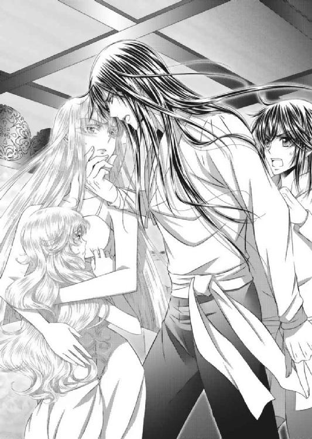
「相手が子どもであろうと、女が手など上げるものではない。ましてや訳もわからずに」
「──っ」
炎鳳を捉えた紫の瞳が、驚きで震えた。
愛凰の瞳にもまた、炎鳳の姿が映る。
だが、誰もが息を飲むような緊張の中、ふと揺れた炎鳳の視線が愛凰に一つの事実を気付かせた。
炎鳳の瞳に映る下着姿──愛凰は片手で自身の胸元を覆うと、
「訳があればよろしいのね」
利き手で炎鳳の頬を打った。
「うわっ」
「きゃっ」
これには陽鳳と華羽の方が声を上げた。
愛凰の頬には、拭い切れないほどの涙が溢れている。
「愛凰様！」
そんな愛凰の姿に気付いた女官の一人が、慌てて自分のショールを肩から掛けた。
愛凰は身を翻すと、その場から逃げるようにして部屋から出してしまう。
「姉様！」
「だめです、華羽様」
「まだ、お着替えが！」
あとを追うにも、華羽は入城のための長衣を用意していた女官に捕まり、力業で着せられる。
「それより、炎鳳様！ なぜこのような所へ」
引くに引けないまま佇む炎鳳と陽鳳に、ようやく状況が飲み込めてきたであろう女官から、怒声が飛んだ。
「そうです！ 何がどうして、このような無礼を──。両の頬を殴られても当然の行為ですわよ！」
「ちゃんとわかっているのですか!! 年頃の、しかも王女である方々の着替えの最中に乱入するなど、いくら夫婦になられるからと言っても、許されることではありません！ 我が国の常識が疑われるような、最低かつ侮辱的行為です！」
容赦無く責め立てる女官たちに、炎鳳と陽鳳は気まずそうに顔を逸らす。
だが、華羽にしたら聞き捨てならない話だ。炎鳳と陽鳳の姿を、改めて上から下まで確かめる。
「.........夫婦？ え？ もしかして、この人が皇子様なの？」
食後に飛び出してきた二人の姿は、シャツにズボンというラフな姿だった。
炎鳳にいたっては、松明を片手に早馬を走らせてきたこともあり、漆黒の長髪は乱れ、シャツには煤もついている。
人形さながらにキラキラとした美少女からしたら、年の近い陽鳳はともかく、炎鳳はただの薄汚れたおじさんだ。
それが証拠に華羽の目は、不審者を見るようなそれそのものだ。
すると、華羽の着替えを担当していた女官が、とても心苦しそうに説明し始める。
「華羽様。こちらが朱の国の第一皇子、朱炎鳳様にございます。主は女心に大変疎い方──。どうか、ご無礼の数々をお許しください。さ、炎鳳様。きちんとした謝罪を！」
この期に及んで、大変な言われようだった。
しかし、下手な言い訳は利かない。どんな理由があったにしても、王女の着替え中に飛び込んだのは陽鳳だけでなく炎鳳も一緒だ。
そして、下着姿を見てしまったのも事実だ。
炎鳳からすれば、華羽の下着などベビードールにしか見えなかったが、本人は一人前にご立腹だ。ここは謝るしかない。
だが、華羽に視線を合わせようと、炎鳳が身を屈めたときだった。
「......いや。華羽は、この皇子様が兄様になるのは絶対にいやっ！ 姉様をあんなに泣かせたのよ。あんなに......、あんなにいっぱい泣かせたのよっ!!」
側に居た女官の長衣を掴み、全身全霊で訴えた。
すると、それに反論したのは陽鳳。炎鳳を押し退け、ここぞとばかりに言い返す。
「冗談じゃねぇよ！ こっちこそあんな手の早い女なんか、姉にしたくねぇよ！ しかも、炎鳳にまで手を上げやがって、こんな結婚絶対に認めねぇから!!」
「何よ！ そもそもあなたがいきなり飛び込んできたから、こんなことになったんじゃない。レディの着替えを覗くなんて......。しかも、姉様の悪口まで言って。誰があなたの姉になんて──、姉!?」
もともと気が強いだけあり、こうなると華羽も負けていない。
ただ、陽鳳の言葉を重複するうちに、何やらハッとしたようだ。
「まさか、この子も皇子様なの？」
女官に確認するも、相手はますます気まずい。
「は......、はい。こちらは華羽様が嫁がれる第二皇子の朱陽鳳様です。本当に申し訳ありません。剣一筋にお育ちになったもので、こんながさつに......」
その場にいた女官たちが、心から申し訳なさそうに言うものだから、陽鳳も炎鳳も本当に身の置き場がない。
「なんだよ、その言い方は。お前らの主は誰なんだよ」
「この場にいる私どもは三名は、本日付けで華羽様専属のお世話係となりました。皇帝陛下より、今後は何事においても華羽様を優先せよ。今は亡き皇后様と思い、誠実に仕えよと仰せつかっております」
「あっそ！」
絡めば絡むほど馬鹿を見るだけだった。
これは駄目だ、敵わないと諦めてか、陽鳳はそっぽを向いてしまう。
炎鳳も苦笑いを浮かべるばかりだ。
「......お嫁にいけない」
だが、そんな陽鳳たちを余所に、突然華羽が呟いた。
その場にしゃがみ込むと、長衣の裾を握りしめて、小さな肩を震わせる。
「なっ、なんだよ急に！」
「もう......、王子様と結婚できないっ」
再びポロポロと大粒の涙を零し始めた華羽に、陽鳳がたじろぐ。
このままでは砂糖菓子のように溶けてしまうのではないかと思えて、胸がドキドキする。
「ばっ、馬鹿だな、お前！ 何しにここへ来たんだよ。皇子である俺の所へ嫁に、結婚するために来たんだろう」
思わずそう口走った陽鳳に、炎鳳はプッと吹き出すのを必死で堪えた。
しかし、とうの華羽は陽鳳の言葉に激怒し、鼻息を荒くした。大きな目をクリクリとさせて「べー」と舌を出す。
「華羽の王子様は、レディの着替えを覗いたりしない、金の髪と青い目の王子様。あなたなんか華羽の王子様じゃない！ 誰がお嫁になどなるものですかっ！」
「なっ！」
プイっと顔を背けた華羽と、顔面を引きつらせた陽鳳。
その対峙が初々しい上に面白すぎて、とうとう炎鳳が吹いたしまった。
「あっははははっ」
容赦のない笑い声に、陽鳳は大憤慨で両手に握り拳を作る。
「こっ、こっちこそ！ お前みたいな色気ゼロの餓鬼なんか御免だよ！」
捨て台詞を残すぐらいしか、思い付かなかったのだろう。陽鳳は入ってきた窓から表へ飛び出し、愛馬に跨がると走り去ってしまう。
それでも止まらない笑いに、炎鳳はお腹を抱え始める。
「だから、あいつだってまだ餓鬼だろうに」
「炎鳳様！ もう、いい加減にしてください」
「そうですよ、ことが荒立つだけですから出ていって下さい。ただし、今度は窓からではなく扉から！」
女官たちに扉を指されて、ようやく炎鳳も「わかった。すまない」と反省を見せる。
そうして一度呼吸を整え、しゃがみ込んだ華羽の前に片膝を着く。
「ご無礼の数々、大変失礼いたしました。今より私どもも身なりを整え、改めて王女様たちを城にてお迎えしたいと存じます。どうか、ごゆるりとお越しください」
皇子というよりは、姫に仕える騎士さながらに小さな手を取り、その甲にキスもした。
「！」
パッと華羽の頬が赤らんだ。
優しく、穏やかな笑みを浮かべた炎鳳の手を、感情任せに振り解くことはしない。
多少は機嫌が直ったようだ。
「──では、これにて」
その様子をうっとり眺める女官たちを尻目に、炎鳳は何事もなかったように部屋を出た。
「はぁ～。やっぱり炎鳳皇子がきちんとされる姿は溜め息が出るわね」
「本当。普段あまりお見せして下さらない分、感動も大きいわ」
本人が居ても居なくても、彼女たちの言いたい放題は変わらない。
炎鳳は扉を背にして、これはこれで溜息が漏れる。
「お伽噺に出てくるキラキラした王子様というタイプではないけれど。端正でワイルドで雄々しくて。どれ程重厚な鎧や盾より、我が身を守って下さる逞しいお方。そうは思われません？ 華羽様」
ただ、声を弾ませる女官たちに、華羽は何も返事をしなかった。
どうやら最悪な初対面の印象を回復するには、かなり骨が折れそうだ。
炎鳳は「頭が痛くなってきた」とつぶやき、額に手をやった。
翌日早朝──。
ゴンドラでの移動と国境での検問、また途中で休憩を挟んだようだが、愛凰と華羽は予定していた時刻に入城した。
「愛凰様。華羽様。ご到着！」
謁見の間に通された二人は、途中で着替えた朱の国の長衣を纏い、長く伸ばした髪も綺麗に結い上げられている。
目の色や髪の色こそ違えど、東の民に近づいた印象だ。
「おお......。なんと美しい王女たちだ」
「紫水晶のような瞳だ」
「髪は金糸のようだ。キラキラと輝いている」
昨夜、陽鳳の暴言を聞いただけに、側近たちもそろって胸を撫で下ろす。
溜息を漏らしながら顔を見合わせ、感動を口にする。
「それより驚くほど美しい顔立ちだ。西の者たちはみんな、このように美しいのだろうか？ それとも、この王女たちが特別なのか？」
真珠色の長衣を纏った愛凰は、清楚で知的で麗しい。何より王女として生まれ育った気品に満ち溢れていた。
また、空色の長衣を纏った華羽は、兎にも角にも愛らしい。好奇心も旺盛で、室内をキョロキョロと見回している。
だが、それがまた孫を持つ年頃の家臣たちを和ませる。
朱皇帝にいたっては、「余の選択に間違いはなかった」と言いたげで、実に満足そうだ。
満面の笑みで両手を広げる。
「よくぞ参られた、ロンバルディの王女たちよ。そなたたちを迎えることができて、余は大変幸せだ。これからは東の父と思うて何でも相談し、また頼っておくれ」
「有り難き幸せに存じます」
「ありがとうございます」
ただ、まったく緊張感を感じさせない皇帝や家臣たちの雰囲気に、愛凰はかなり戸惑っているようだ。
持ち物から衣類まで、ロンバルディ国参のものはすべて検問小屋での厳しい入国審査で一時預かりになった。
数少ないお付きの者たちにしても、全員ゴンドラごと帰国させられた。
そこから想像するなら、もっと重々しい空気の中で迎えられる、厄介者として見られる覚悟をしていたのだろう。
もっとも、女子どもが我が身一つで入国したのだ。そもそも警戒する必要がないのかもしれないが──。
「それで、炎鳳と陽鳳はどうした？ 誰ぞ、二人を呼んで参れ」
「失礼いたします。炎鳳様と陽鳳様をお連れしました」
王の掛け声と同時に、丁度部屋の扉が開いた。
女官と共に姿を現したのは、昨夜とはまるで身なりが違う正装の皇子たち。
男性の正装は膝下までの長衣に、ズボンとブーツを合わせたような形のものだが、炎鳳の長衣は紅蓮の生地に鳳凰の刺繍が、陽鳳の長衣には黒の生地に若鷹の刺繍がされている。
これにはその場に居合わせた女官どころか、朱皇帝や側近たちまでどよめいた。
「愛凰様。男性の場合は、上着の丈の長さで正装階層が別れます。膝下は冠婚葬祭仕様の踝の次に高い階層。しかも、朱家の家紋でもある鳳凰柄は、本来国事でのみ着用されるもの。陛下と世継ぎと決まった嫡男のみに許されている柄なんですよ」
愛凰付きとなった女官の一人が、興奮気味に説明する。
ようは、皇子たちが現状況では最高位の正装で現れた。まずは愛凰と華羽を国賓として迎える姿勢を、自ら示したと説明したかったのだろう。
「よく来られた、ブランシュ王女。ローズ王女」
長い黒髪が一つに結ばれ、顔から煤が落ちた炎鳳は、すぐにでも王座に就けそうなほど威厳に満ちた皇子。それでいて、かなり美丈夫な青年だ。
明かり取りの松明や蝋燭はあったが、やはり朝日が差し込む中で見る姿とは印象が違う。
陽鳳にしても、立派な少年皇子だ。
「丁寧なご挨拶、ありがとうございます。されど、すでに我が名は愛凰。妹は華羽という名に改めて、生涯この名で過ごすことを心に決めて参りました。幼い華羽にいたっては、混乱を招きかねません。なので、お気持ちは有り難くいただきますが、今後のお気遣いはなきようお願い申し上げます」
愛凰は長衣の裾を両手で持ち上げ、深々と頭を下げる。
当然と言えばそれきりだが、他人行儀な礼に炎鳳の笑顔が固まった。
やはり、着替えの場を覗くどころか飛び込んでいったのは、そうとうまずかった。
相手を尊重するつもりで本名を口にしたのも、かえって気を悪くさせたようだ。
（こっちは腹をくくって来てるんだ。妹を説得するのにも骨を折ったんだから、過去の名前なんか蒸し返すなよ──ってところか？）
炎鳳が顔を強張らせている傍ら、今度は陽鳳が華羽に声をかける。
「よく来たな。待ってたぞ」
「べーっ」
「こら、華羽。申し訳ございません！ 私の躾が行き届かないばかりに、大変なご無礼を。どうかお許しを......。いえ、寛大なご処分を！」
容赦のない華羽のあっかんべーもさることながら、華羽の口を塞いで顔色を変える愛凰の姿に、兄弟揃って二の句が継げない。
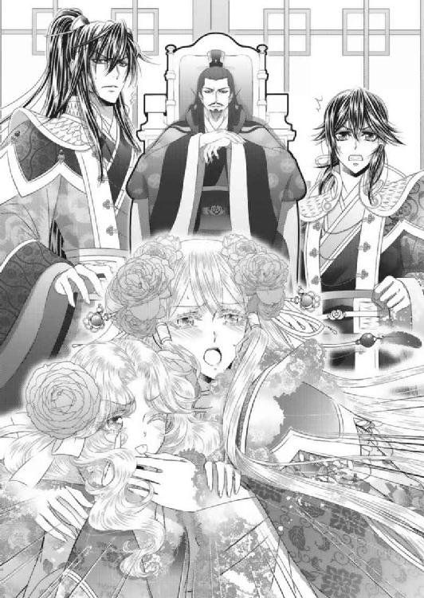
「......うむ。どうもお前たちは、王女たちの好みではないようだな」
「!!」
「！」
しかも、身も蓋もない言葉で追い打ちをかけてきたのは、勝手に結婚を決めた父親だ。炎鳳と陽鳳は揃って朱皇帝を睨んでしまう。
「愛凰王女。正直に申せ。我が皇子、どの辺りが不満かの？」
息子たちをひと睨みで制し、朱皇帝が話を続ける。
口調はとても穏やかだが、愛凰にとっては心臓が縮まりそうな質問だ。ますます恐縮してしまう。
「不満など......、とんでもございません。私には勿体ない、大変素晴らしい方と存じます」
「模範解答だな」
そう言いつつ、「やはりお前は、好かれとらんぞ」と、炎鳳に言い捨てる朱皇帝。
だが、これには愛凰のほうが青ざめてしまう。
「そのようなことはございません！ こうしてお会いしたばかりですので、なんと説明してよいのかわかりませんが......。私は炎鳳様と朱家、そして朱の国に生涯を捧げる覚悟で参りました。どうか、信じてください」
愛凰が必死になればなるほど炎鳳の肩が下がっていく。
側近たちは、朱皇帝の質問の意図がわからず、顔を見合わせる。
「いやいや、そういうことではない。余が問うたのは、これだけ気合いの入った正装をして出迎えた息子を見て、少しぐらいはドキリとしたか。こう......、一人の乙女としてキュンと胸がときめいたかと言うことだ」
「......っ!?」
すると、朱皇帝はまったく変わらぬ口調と笑顔で言い放った。
「もちろん。今日のそなたの立場で、そのような浮かれた気持ちになれぬことは十分わかっておる。しかし、なんというか。恋というものは、時も場所も選ばずに生まれるものであろう。少なくとも皇子たちは、すでにそなたたちを気に入った様子。されば、ゆくゆくでもよいので、相愛の夫婦となってほしいと願うは親心」
どこか芝居がかった言い回しが、愛凰をさらに困惑させる。
しかも、朱皇帝は炎鳳や陽鳳の顔をチラチラと見ると、
「かといって、世の中には何をどうしても受け入れがたい異性はおるであろう。なんというか、こればかりは誰の責任でもなしに──」
まるで「お前らの容姿が足りないから王女がその気にならない」と言わんばかりだった。
これには炎鳳も抗議をしようとするが、そこは女官たちに止められる。
「朱皇帝様！ いずれにしても、今日の愛凰様のお立場では、何ほどもお答えできないと存じますが」
「そうですわ！ むしろ昨夜の皇子たちの所行を考えましたら、そのようなご質問は命取り。炎鳳様たちのためにも撤回。避けていただきたく存じます！」
だが、女官たちが庇えば庇うほど、炎鳳と陽鳳の立場は悪くなる一方だ。
「昨夜？ 何をしたのだ、お前たちは」
「──」
内容が内容だけに、ここでは説明ができない。再び炎鳳が押し黙る。
「なんと！ すでに説明できぬような無礼を働いたのか!?」
朱皇帝は炎鳳を責めるも、なぜか嬉しそうだった。
愛凰のほうへ視線を戻すと、
「それは申し訳ないことをした。父である余が、責任を持って詫びをしよう。結婚も解消の方向で」
「っ!!」
満面の笑顔で「結婚」「解消」を告げられ、愛凰がその場で身を崩す。
「愛凰！」
「愛凰様!!」
咄嗟に炎鳳が飛び出し、崩れた身体を支えたが、愛凰はショックが大きかったのか意識を失っている。
「姉様!!」
華羽も驚きから愛凰の足にしがみつく。
すると、一瞬にして騒然となった室内に、今度は陽鳳の声が響き渡った。
「やめろよ、父上。しらじらしい！ ようは、ちゃんと好きにさせればいいんだろ！ 華羽!!」
「へ!?」
朱皇帝を叱咤したかと思うと、続けざまに華羽の腕を掴む。
そして、自分のほうへ引き寄せると、
「国同士の事情とかは、よくわからねぇ。けど、俺も兄貴も結婚できなかったから、お前たちの国なんか知りません。困ってても助けませんなんてことは言わねぇよ！ むしろ、何があっても必ず助けてやる。守って戦ってやる。朱の国の男の名誉にかけて！」
華羽の顔を見つめて、はっきりと言い切った。
「でもな。それはそれでこれはこれなんだよ。俺は昨夜、一目見てお前のことが好きになった。だから嫁にする。お前にも、俺の居ない国には帰りたくない。結婚相手は陽鳳以外考えられないって絶対に言わせる。いいか、わかったか！」
そして、思いの丈をぶつけて、華羽の手を放して身を翻す。
長衣の裾を揺らしながら、一人で部屋から出て行ってしまう。
「陽鳳」
「陽鳳様」
残された者たちは、しばし茫然としていた。
「──っ」
特に華羽は、愛凰のことだけで混乱していたため、すぐには理解ができないでいる。
「まぁ、陽鳳様ったら」
「一世一代の大告白ですわ」
それでも、一人。また一人と微笑んだ。
ここまで来れば、朱皇帝の意図も自然と見えてくる。
「ふむ。陽鳳皇子にあそこまで言われては、我々も〝身内で無ければ助けぬ〟などとは、言えませんな。一等公爵殿」
「男の名誉に関わる宣言をされてしまいましたからな。軍師侯爵」
やんごとない事情から交わした結婚と新たな軍事同盟の約束。
だが、それは国と国、あくまで王と皇が交わした約束であり、できることなら当人同士の気持ちを優先してやりたいと思うのは、朱皇帝が一個人に戻ったときの本心だ。
しかし、王家同士に婚姻という縁もなく、いざというときに自国の兵士を他国のために動かすことは容易いではない。
いくら長年の同盟国のためとはいえ、ロンバルディは一部の人間しか知らない国だ。命じることはできても、士気が下がることも安易に想像がつく。
赤の他人のために戦うか、身内を守るために戦うか、大義の違いは大きい。
現に、陽鳳が発した言葉によって、この場にいた側近、女官たちにとってのロンバルディは、我らが皇子の愛する王女の祖国となった。
先祖代々からの同盟国だ、政略結婚で結ばれた同盟国だと言われるよりも、確実に親近感や愛着が芽生えている。
「なかなかやるではないか、陽鳳は。のう、炎鳳」
「......はあ」
朱皇帝は満足そうに微笑み、炎鳳は愛凰を支えたままばつが悪い顔をする。
──と、ここでようやく話の整理、理解ができたようだ。
顔を真っ赤に染めた華羽が、バタバタ足を踏み鳴らす。
「.........なっ、なんなのよ！ 馬鹿っ!! あなたなんか好きになるもんですか！ お嫁になんかなるものですか！ でも、自分で言ったんだから、ロンバルディのことは守ってよ！ 絶対に絶対に守ってよ!!」
陽鳳の告白には憤慨を露わにしていたが、心底から嫌悪しているようには見えなかった。
女官たちは、小さいながらも揺れ惑う乙女心を察してか、ただただ「気が利かなくて、すみません」と「うちの皇子が申し訳ございません」と繰り返す。
「......華羽......っ!?」
新たな騒ぎのためか、愛凰も意識を取り戻した。
「気がついたか」
「──っ」
立ったまま寄りかかるようにして抱かれていた自分に驚き、慌てて炎鳳の腕から退いた。
「も、申し訳ございません！ どうか結婚の解消だけはお許しを」
最後に聞いた朱皇帝の言葉だけが頭に残っていたのだろう。その場で膝を折ると両手どころか額まで床につけた。
「お許しを！」
狭い肩、長い金糸、全身を小刻みに震わせる。
炎鳳はすぐさまその場で片膝を折り、愛凰の両肩を掴んで顔を上げさせた。
「いや、落ち着け。お前が謝る必要はない。あれは父上の戯れ言だ。俺は結婚を解消する気はない。お前が同意してくれるのなら今日にでも妻にする」
「......」
戸惑う愛凰の目を見つめ、炎鳳は極力冷静に話をしていく。
「ただ、その前にこれだけは伝えておく。俺も陽鳳も父上も、百年続く同盟国に危険が迫れば助けに行く。別に、結婚で両家を結ばずとも、必ず馳せ参じる。西側諸国に渦巻く争いの恐怖からロンバルディを、お前や華羽の国の民を守る。これは朱の国の男、戦士の名誉にかけて約束する」
何をどう説明したところで、今の愛凰に選択の余地などないかもしれない。
逆に追い詰めてしまう可能性もなきにしもあらずだ。
一国の行方を背負って来た王女の思いなど、結局のところ本人にしかわからない。
ましてや炎鳳は、生まれたときから東の強国として君臨している朱の国の皇子。想像で愛凰の気持ちを酌んだところで、それはただの奢りだ。
弱者になったことのない強者が、勝手に理解した気になっているにすぎない。
「だから、結婚と同盟は一緒にしなくていい。このさいきっぱり分けて、考え直していい。ここではお前が出した答えを、誰かが責めることはない。実家はそうじゃないというなら、情勢が落ち着くまで、ここで暮らせばいいことだ。このさい、姉妹揃って留学に来たとでも思っておけばいい」
炎鳳は、できる限り言葉を選んで、愛凰に考える時間を与えた。
「ただ、どんな答えを出してもかまわないから、自分の気持ちに嘘はつくな。お前が自身を偽り、俺に嫁げば、不幸になるのはお前だけではない。この俺もだからな──」
愛凰は戸惑いを隠せないまま、か細い声で「はい」とだけ返した。
最悪の事態を想像して嫁いできた愛凰にとって、朱の国も朱家の人々もすぐには理解ができない存在だった。
平和と反戦を謳うロンバルディ国に反して、軍事強国である朱の国。一方的に庇護を求めたロンバルディ国のほうが、立場が弱いのは明らかだ。愛凰はどのような扱いをされ、また苦汁を飲まされるようなことになっても、耐えなければならない覚悟していた。
それこそ、華羽さえ守れるのならどんなことでも──と。
だが、いざ国境を越えてみれば、朱の国はとても平和で豊かで、人々はみんな優しくて温和だった。
誰も国政に不安がなく、生活が安定している証だろう。
反戦を唱えるロンバルディ家とは真逆の考え方だが、朱家は平和を維持するために自国軍を強化し、ときには戦い、東の地全体に安住を生み出していた。
皇族自らが軍を率いる屈強な戦士であり、それは男女を問わないという。少なくとも、皇家の子として生まれた限りは、必らず剣技や戦術を学ぶと言うことだ。
「どんな答えを出してもかまわないから、自分の気持ちに嘘はつくな。お前が自身を偽り、俺に嫁げば、不幸になるのはお前だけではない。この俺もだからな......か。炎鳳様」
愛凰は、炎鳳からの問いかけに対して三日三晩思い悩んだ。
炎鳳が何を決め手に、この政略結婚に同意をしたのかがわからなかった。
陽鳳は一目で華羽を気に入った、好きになったから結婚したいと言ったが、それは十三歳の少年らしい発言だ。
既に身も心も成人している炎鳳とは違う。やはり同じようには考えられない。
「彼の幸福と不幸──。でも、生まれたときから次期皇帝となることが決まっている彼が、政治的な背景や国益を抜きにして自身の幸福を考えるとは思えない。これに関しては王位継承権を持って生まれた私と同じはず。では、同じだからわかり合えるということなのかしら？」
結局、考えに考え抜いた愛凰は、最初の話通り炎鳳に嫁ぐことを決めた。
「王になるべく育った者同士ならば、夫婦になっても理解し合える。共に成すべきことを果たせるだろう──と」
幾度も自問自答を繰り返したが、嘘偽りのない気持ちを言うならば、朱の国ならロンバルディを守ってくれる。炎鳳なら祖国に対して、人力と戦力を尽くしてくれる。
愛凰にとって最も望ましいことを、炎鳳は朱皇帝たちの前で口約してくれた。
そして、そんな彼が自らの意志で、愛凰と結婚してもいいと言った。
愛凰自身に何かしらの利益を見いだし、求めてくれたのだと思えば、断る理由はどこにもなかったからだ。
ただ、現段階で彼にとっての利益がなんなのかという断定ができない。
そこだけが不安だったが──。
「いずれにしても、私にできることは些細。せめて、しっかり成し遂げるよう精進しなければ」
こうして朱の国的にも愛凰が炎鳳の妻に、そして時期朱皇帝の妃になることが確定した。
急なことだけに諸外国の王族たちへの披露目は改めて行われることになったが、国民たちには即日婚儀の日程などが発表がされた。
〝炎鳳様が結婚されるなんて！〟
〝急なことで驚いたな〟
〝なんでも神々の山の向こうからいらした、黄金の姫様だそうだ〟
〝遭難されていた姫様を助けた炎鳳様が一目惚れされたとか!?〟
〝なんてロマンチック！〟
元々国民に慕われている朱家の祝い事だけに、国民たちは半日のうちには国を挙げての祝福ムードとなった。
愛凰が妹共々洞窟道を通ってきた──という話が伏せられて説明されたためか、誰かが思いつきで発したらしい「遭難者」という説まで瞬く間に広がり、定着してしまった。
これには朱皇帝や炎鳳たちも驚いていたが、「都合がいいのであえては撤回しない」と言って笑っていた。
臨機応変というよりは、大ざっぱだ。
これが国民性なのか朱家の性質なのか、愛凰には驚くことがあとを絶たない。
じっと様子を伺い続ける。
〝見たことがないほど美しいお姫様だと、城勤めの者たちが大喜びしていたぞ〟
〝神の山の黄金のお姫様か──。そりゃ御利益がありそうだ〟
〝やだよ。あんたってば！〟
そんな中、婚礼への期待は日増しに膨らみ、国民たちはまだ見ぬ皇子妃・愛凰に期待を寄せて、胸を弾ませた。
〝それより早くお子ができるといいのぉ。朱皇帝様は子ども好きじゃて、今から待ち遠しかろう〟
〝やはり最初はお世継ぎ様。男子誕生で安心したいでしょうね〟
〝何言ってるのよ。まだ早いわよ！〟
〝そうそう。炎鳳様はまだ成人されたばかりよ。ちゃんと新婚生活も楽しまなきゃね〟
〝そりゃそうだな〟
当然、世継ぎ話も持ち上がる。
愛凰にとっては最重要課題だ。
〝皇后様も、さぞあの世で安堵されてるだろうね。あの炎鳳様がこんなに早く落ち着かれて！〟
〝本当、本当。違いない！〟
〝ああ～。それにしても、お式の日が楽しみ。早くお姿を拝見したいわ〟
〝当日は夜明け前には表門前に並ばないとね。お式後には、お顔見せのご挨拶があるはずだから〟
〝そうだな！ 黄金のお妃様だ。一番近くで見たいもんな！〟
発表から数日後、満月が昇る祝日。愛凰は国民の羨望を一身に浴びて、炎鳳と婚礼の儀を行った。
炎鳳とともに紅蓮の婚礼衣装に身を包んだ愛凰の美しさに国民は息をのみ、そして熱狂と共に歓喜した。
ただ、それだけに炎鳳と結ばれることなく初夜を終えてしまった愛凰の困惑と動揺は大きく、また計り知れないものがあった。
皇子妃となって、最初の義務を果たせなかったと──。
雲雀のさえずりと共に、新婚の一夜が明けた。
愛凰はいつの間にか眠っていた。
（......夢？）
両手には、炎鳳から渡された短刀が握られたままだった。
よく見れば、昨夜はかけた覚えのない毛布がかけられている。
（誰かが優しく髪を撫でた。額にキスをしてきたような気がしたけど......）
不思議な感覚であり、余韻だった。
初めて向かえる新婚の朝。独り寝ではあったが、さめざめしい感じはしない。
心にも肌触りのよい毛布のような暖かさが残っている。
（まさか、炎鳳様？ でも、そうしたら毛布は？ もしかして、私......。とてもひどい寝相をしていたのかしら？ だとしたら、どうしよう）
愛凰は一人、頬を染める。
「おはようございます、愛凰様。よろしいでしょうか？」
しかし、起き抜けに感じた愛凰の心地さは、時間にして五分も続かなかった。
「は、はい」
早朝から女官長が床検めに訪れ、出入り口の布幕越しに声をかけてきた。
愛凰は慌てて起き上がり、短刀を目に付いた引き出しに仕舞う。
そして、手ぐしで髪を整え、ガウン姿で床の傍らに立つ。
「──どうぞ」
「それでは失礼致します」
「はい」
今更だが、炎鳳による初夜の偽りが発覚したらと、愛凰に不安と緊張が起こる。
女官長が毛布を外すのを、固唾を呑んで見守った。
「......」
敷布に残った血痕を目にした女官長が、眉を顰め、二度、三度瞬きをした。
そしてその後、目を細めてこらす。
その様子から偽りを見抜いたようには見えなかったが、かといって納得したようにも思えなかった。
愛凰は女官長の心情がわからず、胸が締めつけられる。
「──確かに。では、お手当を」
数秒が長いと感じた。
しかも、女官長が納得したらしたで、新たな問題が愛凰に降りかかる。
「その必要は......。代わりに半日でいいので、そっとしておいていただけますか？ お昼まで華羽のことをお願いしたいのですが......」
幼い妹のことが気がかりだったが、この場は言い繕うしかない。
「かしこまりました。では、そのように手配いたします。湯殿へはお好きなときに──」
語尾を震わせる愛凰に対し、女官長も無理は言わない。
従えていた若い女官に、寝具の取り替えだけ視線で合図し、愛凰自身には触れないことを承知した。
「ありがとうございます」
緊張が解けないまま頭を下げる。
「愛凰様」
「はい！」
少しきつめに名前を呼ばれて、ビクリとした。
自然と胸を隠すように当てられた両手が、愛凰の動揺や心情を物語っている。
「すでにあなた様は、皇族。私どもにとって主のお一方。どうか、そのように畏まったお言葉使いは......」
すると、女官長は自らも口調を和らげて愛凰に告げてきた。
まだまだ、どう接してよいよいのかわからない相手ではあるが、悪意がないのは見てわかる。厳格さの中にも慈愛があり、入国してからいっときとして警戒を解かない愛凰に、頭を痛めているのかもしれない。
だが、愛凰が妹と共に祖国を離れてまだ一週間たらずだ。
月が満ち欠けるほどの時も経っていないだけに、この警戒は仕方がない。
それは女官長も察して余るところなのだろう。
とはいえ、婚儀を終えて皇子妃となった愛凰に変化が求められるのも、また仕方がないことで──。
「は......、いえ。わかったわ」
愛凰は背筋を伸ばして、言葉や語尾を改めた。
女官長があえて言葉にしたように、愛凰は皇族なのだ。
その中でも次期皇帝となる炎鳳の妻にして、朱の国第三位の地位と権力を得た。今では第二皇子たる陽鳳よりも位が高い。
朱の国の女性の中でも最高位に立つのだから、それに見合う威厳と振る舞いが求められる。
それはロンバルディ城にいても、この鳳凰城にいても、なんら違いはない。
「では、ごゆっくりお休みくださいませ」
「あ、女官長」
「──はい」
「私の振る舞いで何か気付くことがあったら、どうかそこは遠慮無く。私はこの国をまだよく知らないし、あなたたちの主である前に、朱の国の皇子・炎鳳の妻。夫に恥をかかすわけにいかないので」
それでも愛凰は女官長に願い出た。
昨夜、炎鳳がどのような気遣いから、あのような態度に出たのか、その真相はわからない。
よく取れば、言葉のまま。初めての行為に臆するばかりの愛凰を気遣った。
だが、悪く取れば、これでは面白みも何もまったく無いと興ざめしたのかもしれない。
こればかりは炎鳳に聞いても、本心は明かさないだろう。
だが、「生涯を通して唯一無二の伴侶だ」と言われた限り、それに見合う妻、見合う皇子妃になることが、愛凰にとっては使命であり目標だ。
彼の本心はわからなくても、自分に課せられた職務だけは明白なのだから、今はそこに徹するしかない。
「承知いたしました。では、この件に関しましては、他の女官たちに申しつけておきます」
「お願いね」
愛凰の確固たる決意が伝わったようで、女官長も最後は微笑した。
従えていた女官たちと共に、深々と一礼をしてから寝所を去る。
部屋の出入り口にかけられた布幕がふわりと揺れたが、すぐに戻った。
「──はぁ」
一人きりになると、愛凰の唇からは溜息が漏れた。
寝具を交換された床に腰を下ろして、長い金糸をかき上げる。
ふと、炎鳳の大きな手を思い出した。
髪に、背に、そして肩や胸に触れた、愛凰にとっては初めての異性のものだ。
しかも、連鎖するように彼の全身を、また後ろ姿を思い出してしまい──。
「熱が出そう......」
一瞬にして紅潮した頬を、両手で押さえた。
やはり、炎鳳の手とは違う。
感触も大きさも何もかも──。
「いけない。こんなことでは。まずは着替えて、髪も結わなくては......」
愛凰は気持ちを切り替えるように、現実に目を向けた。
半日ほど時間はもらったが、言葉どおり休んでいるわけにはいかない。
肉体的にも、その必要がない。
ましてや愛凰には、すぐにでも学ばなければと思うことが山のようにある。
「東の地の歴史、文化、宗教。覚えることが沢山ある」
集落が町へ、そして国へと発展した過程は、西も東も違いはない。
それは、百年続いた密約と同盟による情報交換、王家に伝わる覚え書きで理解している。
ただ、それで知り得ていた情報は、史実のごく一部だ。
寝室の壁にかけられたタペストリーには、大小合わせて四十カ国前後が記された地図が描かれていた。
おそらく西側諸国と大差ない面積の地に、倍以上の国が存在している。
しかも、朱の国が一番大きい面積なのかと言えば、そうではない。
「山脈を西にみて、東西南北と中央に目立って大きな国が五つ。その一つが朱家が興した朱の国。神々の山に住むと言われる伝説の不死鳥、火の鳥とも呼ばれる鳳凰を守護神に栄えて今にいたる。他にも白虎、青龍、玄武、麒麟......、守護神とされる神獣だけでもたくさんいるわ。いずれも国を司る家系、血筋を守る守り神様だけに、絶対に間違わないように覚えなければ」
地図を見ただけでは、国力や軍事力の差はわからない。
土地柄による価値観や信仰の違い、大まかな人口、男女比もわからない。
愛凰が持つ東の知識は、爪の先ほどもあるかないかだ。
「国の名前、皇家の名前。正確な場所、土地の特徴、特産物。最低でも頭に入れておかなければならないことがいくつもある。皇子の妃として、いつどこで誰と会うかわからない。知らなかったでは済まされない。それこそ彼だけでなく、皇帝陛下に恥をかかせないようにしなくては......」
愛凰は辺りを見回し、まずはサイドボードに置かれた書物に手を伸ばした。
当然書かれている文字も西側とはまるで違うが、これに関しては学習済みだ。言葉と文字の読み書きだけは、今のところ不自由がない。
「──神獣伝記。寝室に置かれていることを考えると、西側でいう聖書のような使われ方なのかしら？ でも、読み始めたら目が冴えそうな冒険活劇のよう。ということは、娯楽本？ それに、この挿絵の大熊猫って何かしら？ 姿は熊なのに猫なの？ ブチだから？」
しかし、この読み書きできることが、愛凰にとっては闇夜に差し込む月光の光にも匹敵した。
わからないことは本で調べればいいし、周りに聞いて学べばいい。自ら知る手段や方法があるということは、不安を減らすだけではなく希望を生むからだ。
「こっちは医術と薬の本。すごいわ。西で見るより薬草の種類が多い。山を隔てただけなのに、こんなに違うのね。もしかしたら、お父様の病に少しでも効くものが......」
それからしばらく、愛凰は目にした書物を手に取り、中をパラパラと確かめていった。
特に絵や図が載っている本に興味を示し、いつの間にか夢中になっていく。
「西のものをイメージして、比較しながらのほうが覚えやすそうね」
続き部屋から炎鳳が様子を伺いに来るも、まったく気付くことがないほど──。
＊＊＊
愛凰と華羽が朱の国へ来て、ひと月が経った。
紅葉はいっそう深まり、少し風が冷たくなった。様々な形で、初冬の気配が感じられるようになる。
西側諸国では、ミローネ兵士の進軍に怯える日々が続いてるのだろうか？
しかし、神々の山で仕切られた東側諸国では、何事もなく平和な日々が続いている。
中でも朱の国の鳳凰城は桃源郷のようだ。
一日に何度となく、陽鳳が華羽を追いかけまわす姿が見られる。これが、見る側にするとなんとも言えない愛らしさで、自然と笑みが浮かんでくるからだ。
「華羽」
「やだって言ってるでしょう。付いてこないでよ」
華羽は、最低でも一日一度はこの言葉を発していた。
しかし、柳眉こそつり上げているものの、その白い肌はバラ色に赤らみ、とがらせた唇は心なしか照れくさそうだ。
真っ向から「好きだ」と切り込んでくる陽鳳に対し、どうしていいのかわからない。
ただ、口で言うほど嫌いなわけではないのは、誰の目から見ても明らかだった。
出会いのきっかけや初対面の悪さが尾を引き、心を開いて受け止めることができない。
せめて「友達になろう」からなら、ここまで逃げることもないだろう。
だが、陽鳳が「嫁にする」「俺を好きになれ」と言うから、「いきなりそれは無理」となってしまう。
これまで女友達を持ったことのない陽鳳からすれば、異性は年の差に拘わらず、女官か国民か結婚相手の三種類しかない。
実に一途で浮気の心配もない性格の少年なのだが、幼い華羽には通じない話だ。
「だからって、何も逃げることはないだろう。話ぐらい聞いたっていいじゃねぇかよ！ こっちにはちゃんと用があるんだよ」
「いやっ！ 姉様っ」
そうして最後は部屋へ駆け込み、日々書物を読み耽る愛凰の後ろに隠れてしまう。
そんな華羽に困ったような顔をしながら、今度は愛凰が陽鳳へ視線を向ける。
同じ紫の瞳でも、表情が豊かな華羽と、そうでない愛凰とでは印象が違った。陽鳳にはまるで感情が見えない、落ち着きを通り越して冷静すぎる眼差しだ。
家臣たちは「すでに皇后殿下の風格だ」「さすがは女王教育を受けてきた方だけある」と感心しきりだが、義理の弟となった陽鳳にとっては、もう少し近寄れないものかと思ってしまう。
それこそ炎鳳は上手くやれているのか!? と心配なほどだ。
「──」
「......」
そして、そんな相手だけに、面と向かうと陽鳳でも言葉に詰まった。
こうなると潔い退却が常だ。そそくさと引き上げる手には、一輪の白薔薇が握り締められている。
それを見た愛凰もまた、扉を閉めながら溜息を漏らす。
「──華羽。少しぐらい、お話をしてもいいんじゃないの？」
「話すことなんかないもんっ」
振り向きざまに訊ねると、華羽は紅潮した頬を膨らませて愛凰からも視線を逸らした。
「陽鳳が嫌いなわけではないんでしょう。ただ、真っ向から好きだと言われて、恥ずかしいだけで」
紅潮した柔らかな頬を、愛凰が小突く。
陽鳳に年の近い女友達がいなかったように、華羽や愛凰にも年の近い男友達は存在しない。
思い返せば、年の近い異性から真っ直ぐに見つめられたのも、ここへ来てからが初めてで、愛凰さえ炎鳳に対して戸惑いを感じている。
感情がストレートに出る華羽なら、なおのことだろう。
「そんなんじゃないもんっ！ 華羽の王子様は、白鳥の王子様よ。あんな乱暴な鴉皇子じゃないもんっ」
ほとんど自棄になっているとしか思えない華羽に、愛凰も「あらあら」と困り気味だ。
白鳥の王子様は、絵本の中の王子様。西側諸国では最も読まれる絵本の一つで、少女が一度は憧れる金髪に青い目のそれは美しく描かれた青年だ。
愛凰も幼い頃に、一度は胸をときめかせた。その覚えがあるだけに、なんとも言えない。
このまま陽鳳の話をしても意地になるだけだろうし、華羽には心からときめく恋をしてほしいという願いもある。
ここは話題を変えることにした。
「そんな顔をしては駄目よ。可愛らしいお顔が台無し。折角の空色の長衣まで曇ってしまうわよ。今日のこれも、とても似合っていて可愛いらしいのだから」
二人が入国したときには、用途別の長衣が何十着も用意されていた。
その中でも華羽は空色の長衣を好み、形や柄の違うものを毎日取り替えて愛用している。
また、それがとても似合っていたために、女官たちも目新しい形や柄の空色長衣を見つけると、嬉しそうに部屋へ持ってくる。
それなのに、なぜか華羽は唇を窄めた。
「別に、いいもん。華羽には似合わない......。似合わない色だって言ったもの！」
愛凰からさえ視線を逸らすと、長衣の裾を翻した。
そのまま部屋から出てしまい、残された愛凰はただ唖然だ。
「え？ 誰がそんなことを──」
深い溜め息と共に、持っていた本を抱きしめる。
姉の贔屓目をなしにしても、華羽が着る分には大概の色も形も可愛らしく見える。
中でもこちらへ来てから初めて目にした空色の生地や長衣と呼ばれる形のドレスは、快活でおしゃまな華羽にはとてもよく似合った。
特に、普段着使用の長衣には、ズボンとセットで着る膝丈のものもあり、これは華羽のためにあるのかと思うほど機能的かつ女の子らしい装いだ。
ざっと思い返しても、似合わないと思った服は一着もない。
「まさか、陽鳳？」
愛凰は眉を顰めて、首を傾げた。
──そんな馬鹿な。
そうは思っても、他に思い当たる節が無くて──。
華羽は部屋を飛び出すと、すっかり覚え慣れた城内を人目に付かないように走った。
石造りの城壁で囲まれた優美なロンバルディ城と打って変わり、鳳凰城は城下町ごと屈強な城壁で囲まれた山側にあり、更に城の周辺にも石垣と水堀の二層で囲む念の入れ用だ。
建物事態も石造りと木造を合わせたもので、中央の棟から東西南北へ四つの棟に渡る十字型になっている。
ここは始めから他国との戦争や籠城戦を踏まえて作られた要塞なのだ。十字型の棟には、はっきりと用途も分けられている。
城下町に面した西の棟は城の迎賓口であり、接客や祭ごとはすべてこの棟内で行われる。
中央棟は政治を行う者たちの集いの場で、北の棟は官僚や兵士たちの住居と武器倉庫。
南の棟には女官たちの住居と厨房などの水回りが集中しており、東の棟には朱皇帝を始めとする皇族たちの住居がある。
これらをすべて突破しなければ、東側の他国から西側への洞窟道を発見されることはない。
逆を言えば、何事かがあり西側から洞窟道を使用し攻め込まれても、鳳凰城内で食い止めて打破できるように考えられている。
しかし、こういったところに視線を向け、意味を理解しようとするのは愛凰だけで、華羽にはまったく感心がない。
部屋数がどうというより、五つの棟からなる鳳凰城は、見て回るだけで新鮮だ。わくわくする遊び場になっている。
「もう！ 姉様まで変なことを言い出して！」
華羽はプッと頬を膨らませて、東の棟の階段を駆け登った。
ここには城内で最も高い階があり、見張り台へ続く屋根裏部屋もある。
だが、ここで見張り台へ行けば、常駐の兵士とかち合ってしまう。
華羽は、見張り台とは逆側の部屋の窓からバルコニーへ出ると、ロンバルディ国のほうを眺めてみた。
一望できるのは神々の山の裾野に広がる紅葉の木々。頂に残り続ける清水の源である積雪。
あとは纏った長衣と同じ色をした空だけなのだが、華羽はこの場所が気に入っていた。
毎日見ていた景色に、生まれ故郷に一番似ているからだ。
「見た目はほとんど変わらないのにな～」
深呼吸をしてから、その場に座り込む。
バルコニーといっても幅が狭く、付けられた縁も大人の膝上程度高さしかない。屋根に出ているのと大差ない上に、ここは地上から十階分の高さがある。
すると、森の小鳥が飛んできた。
「そりゃ、ちょっとぐらいお話してもいいかなって。なんなら一緒に遊んでもいいかなって、華羽だって思ったんだよ......」
飴色に光る髪を風に撫でられ、華羽は緑に止まった小鳥に話しかける。
陽鳳が率直すぎて荒っぽいのは確かだが、「好きだ」と言われていやな相手ではない。
まだ幼い華羽ではあるが、陽鳳が自分に与えた衝撃が驚きの類いであっても嫌悪でないことぐらいは理解はしている。
どんなに出会い頭が悪くても、一週間も同じ城に暮らせば、人となりもわかる。
実直で正義感が強くて、何事にも一途な第二皇子。剣も馬も大人顔負けの技量で、誰もが「どこに出しても恥ずかしくない我が君だ」と口を揃える。
その名の通り、太陽のような存在感を放つ少年皇子、それが陽鳳だ。
逃げ回ってはいたが、華羽も気持ちを切り替えるきっかけは探していた。
せめて必要最低限の挨拶ぐらいは、ちょっとした話ぐらいはと、次第に気持ちも変わってきていたのだ。
しかし、その矢先。二週間前に、その出来事は起こった。
その日も華羽は城内探検をしていた。
「えっと。中央から西へ行くと正面玄関で......」
「華羽。ちょっと」
「？」
背後から声をかけてきたのは陽鳳──ではなく炎鳳だった。
双方同意の下に結婚はしたものの、炎鳳と愛凰の関係はかなり淡々としていた。
炎鳳は常に公務に追われていたし、愛凰は毎日書室へ通っては東側諸国についての勉強に没頭。全身から幸福な新婚生活を送っているようなオーラはいっさい発せられず、華羽からしても仲良し夫婦には見えなかった。
ただ、愛凰が炎鳳の妻、朱の国の皇子妃に相応しくなろうと懸命なのは、誰の目にも明らかだった。
家臣や女官たちは、それを夫婦愛として捉え、今はまだ新婚に酔える余裕もないのだろうが、そこは生まれながらの王女だ。仕える自分たちの感覚と一緒にしてはいけないという判断から、見守ることに徹していた。
華羽も愛凰の邪魔だけはできないので、日中は一緒に勉強をするか、こうして一人で探検をして遊ぶようしている。
「なあに？」
すでに成人を超えている炎鳳と華羽は十歳違い。完全に大人と子供だった。
だが、最初の謝罪で片膝を折って以来、炎鳳は華羽に対して常に小さなレディとして扱ってくれる。
それが嬉しくて、気分が良くて、華羽は炎鳳相手には普通に話をしていた。
「これ、町の見回りに出たときに見つけたんだ。その長衣や瞳によく似合うと思って」
そう言って炎鳳が差し出してきたのは、すみれ色の花の髪飾り。濃淡のかかった大小の青い花に空色のリボンがついていて、形は可愛らしいが少し大人びた色合いだ。
背伸びもしたい年頃の華羽にとっては、思いがけないプレゼントだった。
「華羽にくれるの？」
はしゃぐ華羽の髪に、炎鳳が髪飾りを付けてくれた。
「ああ。思った通りだ。よく似合う」
「ありがとう！ でも、まだ兄様とは呼ばないからね！」
「ははは。わかってるよ」
「へへっ」
悪気なく言い放つ華羽に対し、炎鳳も笑って頭を撫でてくれる。
「じゃあな」
そのまま忙しそうに、中央棟へ向かっていく。
だが、こうした何気ないやり取りは、華羽の中で炎鳳の印象を日増しによくしていた。
「でも、ちゃんと姉様には報告するからね。これ、炎鳳からもらったんだよって」
本人にその気は無いだろうが、細やかな後押しにもなっている。
華羽は炎鳳の後ろ姿を見送ると、自室で読書中の愛凰の元へ走って行く。
「──あ」
途中、廊下の曲がり角で陽鳳の姿を見つけて立ち止まった。
（この髪飾り......。陽鳳はなんて言うかな？）
自分から話しかけてみようと思ったのは、華羽にとっては初めての試みだった。
こっそり近づいて行くと、陽鳳は女官二人と立ち話をしている。
「ええ。華羽様のですわ。たいそうこの色が気に入られたようなので、新しいものを数着追加しましたの」
女官たちの両腕には、何着もの空色の長衣のセットが抱えられていた。
同じ色でも柄の違いや装飾の違いで、いろんな気分が味わえる長衣とズボン。華羽は声を上げて喜びたいのをじっと我慢した。
「ふーん。でも、俺はその色があいつに似合ってるとは思わないんだけどな」
そんなときに陽鳳がぼそっと言ったのだ。
（へ!?）
華羽は一瞬にして胸が締め付けられて痛くなり、頭の中が真っ白になったような気がした。
何がどうしてこんなショックなのかはわからない。
だが、すごくショックを受けていることだけはわかる状態だ。
「まぁ、なんてこと」
「いや、だからさ......」
華羽は、陽鳳にも女官たちにも声をかけることなく、その場から離れた。
以来、華羽は半ば自棄になって空色の長衣を着まくっている。
陽鳳からの声かけにも、「いや！」を連呼中だ。
「──あんなにはっきり言わなくたっていいじゃないよ。ね、小鳥さん」
これに関しては、なぜか愛凰にも言えなかった。華羽は一人でモヤモヤした気持ちを抱えている。
正直言ってしまうなら、他にも着てみたいと思う色の長衣はたくさんあった。
華羽付きの女官三名も、我先にと赤や黄色も奨めてくれる。
だが、次に「その色も似合わないな」と言われたら、もっと悲しくなりそうだった。
腹が立つより泣きたくなりそうな気がして、華羽は空色の長衣しか着られなくなってしまったのだ。
「気にすることないのに。無視しちゃえばいいのに......」
似合っている、可愛いと言ってくれる者たちの言葉より、陽鳳の一言のほうが重かった。
それが陽鳳の言葉だから気になるのか、初めて受けた自分への否定的な言葉だから気になるのか、いまだによくわからないでいる。
「少しは陽鳳のことを気にしてくれてるのか？」
いきなり背後から声がした。
華羽が驚いて振り返る。
「......炎鳳！ どうして!? ここは華羽が見つけた秘密の場所だと思ってたのに」
「俺もそう思っていたな。たった今まで」
炎鳳が開かれた窓の縁に寄りかかる。
「ここは炎鳳の場所だったのね。じゃあ、華羽は他を探すわ」
華羽はかなりがっかりしたように俯いた。
その場から立ち、窓の中へと戻ろうとする。
「別に──。今日からは二人の秘密の場所にすればいいだけじゃないのか？」
「......え？」
炎鳳は無理に華羽を引き止めることはしなかった。
だが、入れ違うようにバルコニーに腰を下ろすと、その黒髪を風に揺らした。
華羽は、迷いながらも炎鳳の隣へと座り直して、膝を抱える。
今日からここは二人だけの秘密の場所だ。
「しかし、こんな所を見付けるなんて、相当なお転婆だな。愛凰が見たら気を失うかもしれない場所だぞ」
絶景と言えばそれまでだが、地上十階だ。バルコニーを囲う縁の低さを考えれば、命綱がほしいと思う者も多いだろう。
「そんなことないわ。小さな頃には、一緒にお城の屋根に登ったもの。見張り台や大きな木にも──」
「愛凰がか!?」
「そうよ。華羽も姉様も空を見るのがとても好きなの。だから、少しでも高い所を見付けると一緒に登って......」
「まるで空を恋しがる白鳥か、天使のようだな」
思いがけない話になったためか、炎鳳が驚いていた。
しかし、彼にとっては、いい意味で新鮮だったようだ。二人が好きだという空を見上げて、ふっと微笑む。
それを見た華羽もまた空を見上げる。
「でも、新しいお妃様は危ないって。王女様のすることじゃないって。だからやめたの」
「新しい......、アデリナ王妃のことか？」
「うん。姉様は、もしかしたらお父様の再婚がいやだったのかな？ 新しいお妃様が決まってから、あまり笑わなくなってしまった。前はいっぱい笑ったのに。みんなに向かって大きく笑ったのに......」
話が進むと、炎鳳が口を噤んだ。
「今は......、もっと笑わなくなってしまった。華羽は姉様の笑顔が大好きなのに──」
華羽が抱えていた膝に顔を伏せる。
「姉様......。このまま笑わなくなってしまったら......、どうしよう」
華羽が見てきた愛凰の笑顔。
それは彼女たちを取り巻く状況の変化に比例しているのだろうが、幼い華羽からすれば悲しい以外に言い様がない。
日頃元気に振る舞う華羽だが、小さな胸の中は不安でいっぱいだ。
だからといって、こればかりは他人が計ろうとして計れるものではない。
何をどうしたところで、愛凰や華羽の心情は、本人たちにしかわからないのだ。
「なぁ、華羽」
「？」
改まった声かけに、華羽が顔を上げた。
「もし、俺が愛凰を以前のように笑わせたら、華羽が大きな笑顔を取り戻すことができたら、俺を兄様として認めてくれるか？ 大好きな姉様の夫として受け入れてくれるか？」
炎鳳がじっと華羽を見つめる。
「俺は、陽鳳ほど心情を言葉にできる男ではないが、愛凰のことはとても気にいっている。なんていうか──、どんどん好きになることはあっても、嫌いになることがないと思った。こればかりは思いつきとしか言い様がないが、とにかくそう感じた。だから結婚した」
「......炎鳳」
「ただ、愛凰はどうかわからない。彼女が背負って来たものは、俺とは違う。華羽にはまだ難しいと思うが、とにかくロンバルディ国で一番大きなもの、目には見えない大変なものを背負ってこの国へきた。そして、それらのために結婚も決めただろうし、決して俺と同じ気持ちで夫婦になったんじゃないと思う。──けど、だからこそ愛凰にも、俺と同じ気持ちになってほしい。華羽の言う大きい笑顔も見たいし、できることなら俺にも向けてほしい」
幼い華羽にも分かるように言葉は選んでいるが、その目も口調も真剣だ。
炎鳳が言うように、難しいことはよくわからないが、炎鳳が愛凰を好きなことは、華羽にもわかる。
ちゃんと伝わっている。
「今よりもっと努力をする。できる限り、どうしたらいいのか考えてもみる。だから、さ」
炎鳳は姿勢を正すと、いっそう強く言い放つ。
華羽はその言葉を聞いて、なんだか力が湧いてきた。
「──うん。そうだね。姉様がいっぱい笑ってくれたら、華羽は炎鳳のことを兄様って呼ぶよ。ずうーっと呼ぶよ。そして、いっぱい......いっぱい......、ありがとうも言う」
華羽も自分で言葉にするまでわからなかったのだろうが、誰かに相談したかった。
力になってほしかった。
大好きな愛凰に対する心配事を、一緒に考えてほしかったようだ。
「だから......。お願い......。姉様を......」
不安が一気に体内から押し出さされたのか、涙がポロポロと溢れ出た。
すると、炎鳳が涙で濡れた白い頬を、シャツの袖口で拭ってくれる。
「よし。約束したぞ。でも、そうしたら今後は俺も、いろいろ言動で示していかないといけないな──。陽鳳のように」
ただ、陽鳳の名を出されると、どうもへそが曲がってしまうらしく......。
華羽は、炎鳳の袖で涙を拭くと、一緒に鼻もチンとした。
「でも、姉様は姉様。華羽は華羽よ。華羽は陽鳳のお嫁さんにはならないからね。それに炎鳳は、陽鳳の心配をしている暇があったら、少しでも姉様のことを考えたほうがいいと思うよっ！」
力一杯憎まれ口を叩くが、その顔は愛凰を思って涙がこぼれたときよりも真っ赤になっている。眉はつり上がり、唇も尖らせるが、やはり照れ隠しにしか見えない。
炎鳳は必死で笑うのを堪え、「それもそうだ」と同意する。
「──と、そろそろ戻るか。肌寒くなってきた」
頃合いを計り、すっかり長居してしまったバルコニーから立ち上がる。
「......うん」
エスコートするように手を差し伸べられて、華羽はムスッとしつつも手を伸ばした。
やはり、大人からレディの扱いをされるのは、気分がいいらしい。
「ところで華羽。愛凰は何が好きなんだ？ 食べ物でも事柄でも──。何でもいいから教えてくれると助かるんだが」
「姉様の好きなもの？」
しかも、炎鳳はやる気だ。
しっかり握りしめた手からも、それが伝わってくる。
「うーんとね」
華羽は、すっかり機嫌が良くなった。
そのまま炎鳳と手を繋いで、最上階から下りていった。
「じゃあ、またね！」
その後、華羽は炎鳳に送られて部屋へ戻った。
「ああ」
華羽と別れた炎鳳は、その足で中央棟へ向かう。
しかし、偶然それを見ていた者がいた。華羽に用があり、ずっと部屋の前で待っていた陽鳳だ。
「なんだよ、あいつ。炎鳳と手なんか繋いで。しかも、笑って話して、またね!? 兄貴まで、ああ──って。どういうことだよ」
どうして自分が!? と思いつつ、陽鳳は咄嗟に向かいの空き部屋に飛び込み、身を隠していた。
誰が聞いているわけでもないので、思ったままの言葉が口をつく。
「俺には、顔を見ただけで逃げるくせに......。金髪でも青い瞳でもない炎鳳の皇子ならいいってことは、単に俺だけがいやなんじゃないか」
激しく愚痴りながら、ズボンのポケットに手を突っ込んだ。
中から取りだしたのは、手のひらに丁度収まる程度の十字架。入国検査の際、陽鳳が検問小屋に飛び込む原因となった、華羽の母親の形見だ。
今はそれに十字架と同じ色の白金の鎖が付けられている。
陽鳳がことあるごとに華羽に声をかけて、「用がある」と言っていたのはこれのためだ。
「こんなもの──っ」
感情のまま投げつけたくなったが、頭上まで振りかぶったところで、きつく十字架を握りしめた。
〝母様の形見なの！〟
思い止まった理由は他にない。
「......っ」
陽鳳は奥歯を噛みしめて、十字架をズボンのポケットへ戻した。
「直接返してやりたかったけど、もういいか。愛凰に渡しておけば、受け取るぐらいはするだろう」
これでしばらく、声をかけるきっかけさえなくなる。
諦めにも似た思いが陽鳳の中に芽生えて、広がっていく。
それでも陽鳳は、空き部屋を出ると愛凰がいるであろう中央棟の書室へ向かった。
この部屋には、東側諸国に出回る書物が集められて大切に保管されている。
「愛凰」
「──陽鳳？」
「これ」
一万冊を超える書物の中で、歴史書を読み耽る愛凰を見つけて、ポケットの中身を差し出した。
「華羽の十字架」
急なことに、かなり驚いているようだ。
「ここの者には見つからないようにしろって言っておいてくれ」
「この鎖は華羽のために？」
「ポケットに突っ込んでたら、落として取り上げられるのが関の山だろ。あ、でも着替えとかで見つからないように、そこは別の工夫をしたほうがいいかもな。じゃあ」
戸惑う愛凰を余所に、陽鳳はかなり投げやりな口調だった。
用が済むと、さっさと身を翻して背中を向ける。
「まって！」
「──」
これ以上の用はない。
だが、呼び止められれば、振り返る。
「ありがとう。陽鳳」
「！」
まったく予想していなかった愛凰からの言葉に、陽鳳は思いがけない衝撃を受けた。
我が耳さえを疑った。
「華羽。すごく喜ぶと思うわ。本当に、ありがとう」
十字架を大切そうに握り締めた愛凰が、お礼と共に微笑んだ。
それは陽鳳が初めて見た愛凰の嬉しそうな顔で、今日という日までたったの一度も見たことのない心からの笑顔だ。
沈みきっていた陽鳳の気持ちが、一瞬にして高揚に変わる。
「あっ、ああ......。いいってことよ。じゃあ」
動揺や照れくささも交わるが、陽鳳は笑顔でその場を立ち去った。
次第に頬が熱くなってくる。
（なっ、なんだよ。ちゃんと笑えるんじゃないか。笑ったら、めちゃくちゃ可愛いんじゃんか。愛凰も──）
思えば出会い頭に頬を叩かれ、怒られた。
その後も謝罪をされたり、日常的な会話と会釈だけは交わしたが、愛凰は婚儀のときさえニコリともしなかった。
さすがに歓声を上げる民衆に対しては笑って見せたが、陽鳳からすれば完璧な作り笑いだ。
顔も姿も綺麗だとは思うが、なんて愛想がないんだと感じていた。
こんな人形を見たことがあると思ったが、これなら人形のほうがまだ作り手の温もりを感じる。
いったい炎鳳は愛凰の何がよくて結婚を決めたのか、心底から不思議に思っていた。
ただ、それだけに、今の笑顔の反動は大きかった。
（でも、そうか。ちゃんと嬉しいことがあれば、愛凰でも笑うんだよな。ってことは華羽だってそのうち笑うよな？ 愛凰も十字架のことは〝すごく喜ぶと思う〟って言ってたし。そもそも炎鳳に笑うんだったら、俺にだって笑うってことだもんな）
すっかり沈んで暗くなっていた陽鳳の心に、一筋の光さえ差し込んだ。
（嬉しいこと。楽しいこと。笑顔になれることさえあれば──）
陽鳳は、何か気持ちが弾んで、嬉しくなってきた。
重々しかった足取りも軽やかになり、書室から出て自室へ向かうときには陽鳳らしい笑顔も浮かんでいた。
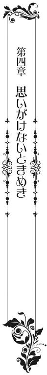
ふとしたことから四人の中で、これまでとは違う感情が行き来した。
華羽と炎鳳。愛凰と陽鳳。
だが、だからといって、華羽と陽鳳、愛凰と炎鳳の仲が急に変わることはない。
特に愛凰は、昨夜も何事もなく床に着いた。
そして、小鳥のさえずりで目を覚ますのも、いつものことだ。
（朝......）
早朝、愛凰が一番始めに目にするのは、炎鳳の広い肩や背中だった。
〝俺のことは気にしなくていい。ただ、新婚だからな。周りを心配させないためにも、一応隣には寝かせてくれ〟
毎夜床だけは一緒にするも、いまだ炎鳳からは何もしてこなかった。
特に最近は、公務で城外へ出ることが続いていたため、疲れていたのもあるのだろう。
先に床へ入って眠ってしまう。
それも、愛凰に背中を向けるようにして、寝顔さえ見せないで──。
（このままでいいはずがない）
それは毎夜、思っていた。
しかし、その程度の気持ちから彼を求め、懐妊を望むのは違う気がした。
初夜から炎鳳の態度が一貫しているのは、彼が愛凰に求めるものが、皇子妃としての役割ではない。義務や責任からくる行為ではないからだ。
〝されば、ゆくゆくでもよいので、相愛の夫婦となってほしいと願うは親心〟
最初に漏らした朱皇帝の本心。
少なからず炎鳳自身も、夫婦となるからには相愛の気持ちを求めているのだろう。
だから彼は、愛凰に「待つ」と言った。
床改めを欺き、自ら腕に一筋の傷も作った。
傷そのものは浅く、すでにわからない程度までに薄くなったが、彼が愛凰を抱くことなく血を流したのには、様々な意味がある。
ただ、そこは理解できるのだが、困ったことに愛凰にはどれほどの感情を持ってすれば、炎鳳と相愛になるのか、また彼がそう受け止めるのかがわからなかった。
炎鳳のことは素晴らしい皇子だと思うし、共に過ごした短い時間の中でも、尊敬できる人物だとも思う。
妃としても、妻としても、生涯支え、仕えることに疑問はない。
やんごとなき理由から始まった結婚だったが、とてもいい縁に恵まれたと、今なら思う。
ただ、その思いと炎鳳が求めるものは違う。
おそらく、愛凰が幼い頃に絵本を読んで思い描いた恋愛とも違う。
かといって、今となっては自分がどんな気持ちで恋に恋い焦がれていたのかさえ、よくわからなくなっている。
〝少しぐらいはドキリとしたか。こう......、一人の乙女としてキュンと胸がときめいたか〟
聞けるものなら朱皇帝に聞いてみたいほどだ。
（キュン......か。っ、え!?）
しかし、愛凰が炎鳳と一緒にいてギクリ、ビクリとすることはあっても、キュンとすることはいまだない。
炎鳳が寝返りを打ってきてもそうだ。
彼の右腕が愛凰の胸元に乗り、右足が左足に絡み、当然寝顔も近づいた。
華羽にされるなら慣れているが、炎鳳にこれをされるのは今朝が初めてのこと。愛凰は一瞬にして硬直してしまう。
「......っ」
幾度か瞬きをすると視線を泳がせ、再び瞬きを繰り返した。
（これは、どうしたら......）
胸元や足に感じる彼の重さに緊張するも、退けるのは失礼だと思うし、この状況から逃げるのも何か後ろめたさを感じる。
かといって、このまま炎鳳が起きるのを待つのもどうか？
（炎鳳様......）
戸惑ううちに、愛凰の視線が炎鳳の寝顔に向けられた。
端正で美しい、それでいて男性らしい寝顔だ。見れば見るほど視線が逸らせず、体中に大きく、早まる鼓動が響き渡る。
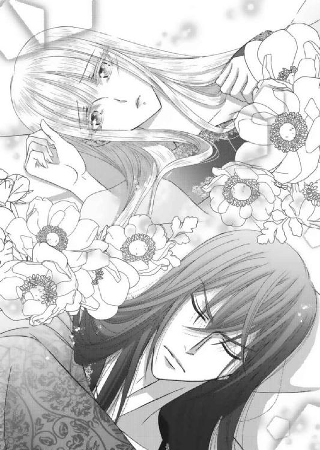
（この方が、私の夫）
ふと、改めて意識をした瞬間だった。
「......愛凰」
「!!」
彼が愛凰の名を呼び、瞼を開いた。
いつもの「おはよう」の言葉もなく、更に身を乗り出してくる。
「──！」
すでに呼吸が止まりそうだと思っていたのに、唇を塞がれて息が止まった。
炎鳳からキスをされるのは、初夜以来のことでやはり戸惑う。
だが、今朝は驚きや動揺とは別に、安堵も感じた。
（炎鳳様......）
いまだ結ばれていないことへの罪悪感からなのか、自分からはどうしていいのかわからなかった迷いからなのか。炎鳳から行動を起こされたことに、少なからずホッとした。
そのためか、唇が離れた瞬間、なんとも言えない甘い溜息が漏れる。
窓の外から聞こえる小鳥のさえずりとは、まるで不釣り合いなそれに、愛凰は自分でも驚いた。
しかし、炎鳳は満足そうだ。口角の片側がクッと上がる。
「俺にはいまだお前の気持ちが見えない。だが、俺はお前が好きだ。ほしいと思う。本当なら、今すぐにでも──」
突然の告白と同時に、肩に掛かる炎鳳の黒髪がさらりと流れた。
いっそう深く口づけられて、愛凰は反射的に彼の二の腕を掴む。
拒むでもなく、かといって自ら抱きつくでもない両手に、今の心情がそのまま映し出されている。
（好き？ ほしい......？）
ただ、炎鳳の言葉の向こうには、彼が背負う義務や責任は感じられなかった。
あるのは熱く火照った肉体と、言葉通りの感情だけだ。
「んっ」
唇を割り、歯列を割ると、彼の舌先が口内へ潜り込んでくる。
急な激しさに戸惑うも、薄絹のガウンは乱され、愛凰の白い肩や胸元が晒されていく。
（炎鳳......っ。炎鳳様っ）
頬を包むように撫でた彼の手が、白桃のような乳房に触れた。
「っ！」
一瞬力強く掴まれ、愛凰の柳眉が歪んだ。
すると、すぐに力が緩んで、「ごめん」と呟かれる。
その声が掠れて、妙に艶っぽい。炎鳳の呼吸も乱れ初めて、それが愛凰の背筋をぞくりとさせた。
愛凰にとっては、何もかもが初めての感覚だった。
だが、新たに湧き起こるこれらすべてが、今だけは愛凰を惑わす媚薬のようだ。
オールを持たないゴンドラのように流されていく。
逆らうすべのない何かを、愛凰は全身で感じていた。
「......っあ」
様子を伺うように乳房を揉まれて、愛凰の身体が左右に捩れた。
胸元に顔を埋めた炎鳳の唇が乳頭に触れ、濡れた舌先が絡むと痺れるような感覚が全身に走る。
「ゃ......っ」
舌で弾かれ、ときには吸われ。乳頭に刺激を受けるたびに、どうしてか脚の根元、身体の中心の奥深いところまでもがジリジリと疼いて、愛凰は更に身を捩った。
そのために、乱れたガウンから覗けた太股辺りに、炎鳳自身が当たってしまった。
既に熱く、堅く、とても憤っているのが伝わってくる。
「──!!」
直に感じた炎鳳の欲望に緊張が高まり、愛凰が双眸を開いた。
すると、胸元から顔を上げた炎鳳が、今一度唇を寄せてくる。
（あ......）
ただ、炎鳳の唇が触れたのは、愛凰の唇ではなく額。そっと触れてきたそれは、初夜の翌朝に感じたものと同じ優しいキスだ。
愛凰は夢かと思っていたが、どうやらあれは現実らしい。
（炎鳳様）
気付いた途端に、ひときわ大きく胸が高鳴った。
これまでにも鼓動が強く、早くなることはあったが、それらとは何か違う気がする。
（これは、キュン？）
「愛凰──」
改めて金糸を撫でられ、愛凰の唇が震えた。
炎鳳の二の腕を掴んでいた両手に、自然と力が入る。
だが、それは相手を拒む物ではなく、むしろこれまでにない距離感を求めているようだ。
それが相手にも伝わったのか、炎鳳は再び愛凰の胸を弄りながら、唇を吸ってくる。
（......炎鳳......様）
唇を割って潜り込んでくる舌先、乳房を包み乳頭をつま弾く炎鳳の利き手が、一定のリズムを刻む。これが愛凰の漏らす溜息と合わさり、いつしか二人の上体だけではなく、下肢をもうねらせる。
「は......ぁっ......」
炎鳳の手が胸から離れ、くびれを下って腰を撫でる。
（......ぁっ）
先ほどにも増して存在感を現す彼自身が、愛凰の太股に当たり擦れた。
そのたびに、愛凰は爪先から全身が震える。
（炎鳳様......）
「──愛凰」
「炎鳳！ 起きてるか、炎鳳」
そんなときに突然、隣の部屋から声がした。
「っ!!」
「っ！」
「相談があるんだ、炎鳳！ 愛凰にも聞いてほしいんだけど」
いつも以上にはつらつとした声を響かせてきたのは陽鳳だ。
「陽鳳様！ なんですかこんな朝から!!」
しかも、それを聞きつけたのだろう。慌てて止めに来た女官長の声まで聞こえてきた。
これには愛凰どころか、炎鳳まで固まっている。
「いや、だから炎鳳たちに相談が」
「それはわかりますが、お時間を考えてください」
「俺たちの早寝早起きは、女官長が躾けたんだろう」
「そういうことではなく！」
聞こえてくる会話が現実的すぎて、愛凰はふと我に返った。媚薬が抜けたような、夢から覚めたような、血の気も引いていくような感覚だ。
急に恥ずかしくなり、炎鳳の身体を押し退ける。
乱れた胸元を覆い隠し、勢いのまま背を向けてしまう。
「──しょうがないな。なんなんだよ、こんな早くから相談って」
炎鳳にしても、そうとしか言い様がなかったらしい。
熱も高ぶりも一気に下がった身体を起こして、床から下りる。
そして、乱れたガウンを整えると、
「続きはまた改めて」
愛凰に一声かけてから離れていった。
そのまま布幕をかき分け、隣の部屋へと消えていく。
「──つ、続き？」
ただ、これはこれで新たな衝撃だったのか、愛凰は顔が真っ赤に火照った。
鼓動は早鐘のように鳴り響き、胸元のガウンを押さえていた指の先までが震え始める。
「続き......」
結局──。
この日、火照りが収まらなかった愛凰は、朝食時間に食堂へは行かなかった。
華羽や陽鳳たちが心配したが、そこは炎鳳が言い繕ってくれたようだった。
＊＊＊
一人、遅い朝食を終えた愛凰は、寝室を出ると華羽の部屋へ向かった。
「華羽？」
しかし、姿が見えない。
「中庭かしら？」
今日は朝から晴天で、心地よい風が吹いている。
こんな日は、華羽が気に入っている中庭にいるのではないかと予想し、愛凰はその足で向かってみた。
「やっぱり」
思った通りだった。そこには今日も空色の長衣を着た華羽がいた。
ただ、よほど面白くないことでもあったのか、機嫌が悪そうだ。
中庭に置かれたブランコに腰をかけて、ぷらぷらと脚を揺らしている。
心なしか頬も膨らみ、唇も尖って見える。
「何よ、陽鳳の奴っ。いきなり愛凰愛凰って連呼して。そりゃ愛凰姉様は可愛いし綺麗よ。そんなの私が一番知ってるわよ。でも、だからってなんなのよ、急に。朝から部屋を訪ねたり、食堂に来ないからって心配したり。炎鳳も炎鳳よ。姉様を笑顔にするのは炎鳳でしょ!? 陽鳳のほうが先に笑ってもらったって──。何が何だか全然わかんないっ！」
はっきりとは聞こえなかったが、相当な勢いで愚痴っていた。
しかも、その愚痴の中には陽鳳や炎鳳だけでなく、愛凰の名前まで入っている。
これは聞き捨てならない。
昨夜、陽鳳から預かった十字架を渡したときには、驚きながらも喜んでいた。
かなり照れくさそうにしていたが、すぐに首からかけて大切そうに握りしめていた。
これなら今日から陽鳳に対しての接し方も変わるかと思っていたのに──。
いったい何がどうしてしまったというのだろう。
こればかりは本人に聞かなければわからない。
「華羽。どうしたの」
「え？ 姉様」
「愛凰！ 華羽！」
ただ、こんなときに限って声がかぶった。
愛凰と華羽がハッとし、上を見る。
すると、陽鳳が早朝の騒ぎなど無かったような笑顔で、二階の窓から手を振っていた。相変わらず天真爛漫だ。
「今、下りていくからそこにいてくれ！ すぐに行くから！」
何か急ぎの用でもあるのか、陽鳳は言葉通りに姿を消した。
しかし、それを見た華羽は、プイと顔を背けてブランコから下りる。
陽鳳を避けるつもりなのだろうが、愛凰さえ無視して離れて行こうとした。
「待って、華羽。どこへ行くの？ ちゃんともう、お礼は言ったの？」
肩を掴み、確認するも、華羽のふくれ顔は直らない。
自分が何かした覚えがないが、どうも華羽は愛凰にまで怒っているようだ。
「ちゃんとお礼だけは言わなくては──。ね」
「はい」
目も合わせてくれない華羽に、愛凰のほうが困惑してしまう。
「お待たせ、愛凰！ 華羽!!」
駆けつけた陽鳳の姿を見て、更に華羽がムッとした。それも見ていてびっくりするほどわかりやすくだ。
（──え!? もしかして？）
愛凰は、華羽と陽鳳を見比べた。
この直感が当たっているなら、華羽の機嫌の悪さはやはり陽鳳が原因だ。
これまで幾度かこんな場面はあったが、陽鳳が華羽より先に愛凰を呼んだことは一度も無い。何がどうして順番が入れ替わったのかは、陽鳳のみぞ知る。
だが、華羽からすると、これがそうとう面白くないのだろう。
本人にそのつもりはないだろうが、愛凰に嫉妬しているのが見てわかった。
（華羽......。あなた）
小さいながらも乙女心は健在だ。
しかし、これまでの様子を振り返るなら、起こっても不思議のない変化なのかもしれない。
特別意味もない、陽鳳の気まぐれが華羽にとっては嫉妬の引き金になった。
それが恋心ゆえのものとは、華羽にはまだ理解できていないだけで──。
「今朝、炎鳳と相談して決めたんだ。これから狐狩りへ行く。家臣たちがもう準備しているから行こう」
陽鳳はいつも通りマイペースだった。
愛凰からすれば華羽もそうとうマイペースだが、実行力を伴う分、陽鳳のほうが少し上だ。
「私は遠慮しておくわ。華羽、折角だしいってらっしゃいな。乗馬も狩りも久しぶりだし、大好きでしょう」
「......行かない」
「華羽」
「十字架、ありがとう」
もっとも、強情さだけなら華羽のほうが数段上だ。
今も陽鳳のほうをチラリと見ると、その場から逃げるようにして走り去る。
「駄目だったか。ずっと城内にいるし、いい気分転換になって楽しいと思ったんだけどな」
珍しいことに、陽鳳はあとを追わなかった。
華羽に対してのアプローチの仕方を変えたようだ。
よもやそれが華羽の嫉妬を生むとは思わずに──。
「ちょっとすねているだけよ。行けばきっと元気になるはずだから、もう一度誘ってみてあげて」
「あっ。ああ」
それでも愛凰に奨められると、陽鳳は戸惑いながらもあとを追った。
愛凰はそれを見送ってから、部屋へ戻ろうと振り返る。
「そのままでいいから、来い。行くぞ」
すると、炎鳳が軽装に脇差しを付けただけの姿で立っていた。
多少はやり取りを見ていただろうに、これに限っては愛凰に選択権は与えない。
「私は結構......」
「俺は愛凰と行きたいんだ」
「っ!!」
さらっと言い放ち、炎鳳は愛凰の身体を横抱きにした。
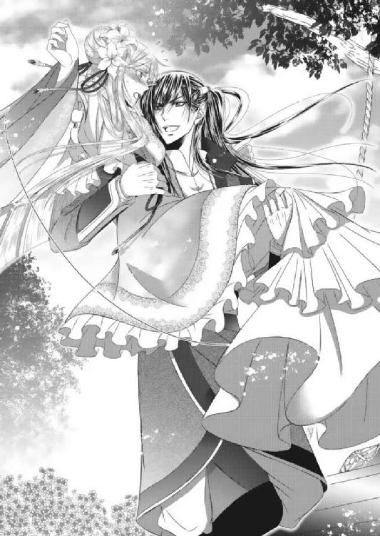
「なっ！ 何をするの!? 下ろして！ 炎鳳！ 炎鳳!!」
突然強引な行動に出てきた炎鳳に、愛凰は驚きや戸惑いが隠せない。
今朝からのことを考え合わせると、いったい何が起こっているのかと思う。
「馬には乗れるのか？」
「えっ、あ、はい」
それでも問いかけられると、正直に答えてしまう。
「弓は」
「剣と共に一通り」
「よし。まったく問題なしだな」
「──え!?」
馬には乗れない、弓も持てない、狐狩りなんて無理だと言えばいいのに、愛凰は普通に答えてしまった。誘いを断る理由をなくしてしまう。
そんな気分ではないと言ったところで、そもそも気分転換が目的の狐狩りだ。
愛凰は、自身の発言に悔いる暇も無く、すでに用意の調った馬小屋まで連れて行かれていかれる。
「さ、乗って。いやだといったら、これは命令だと言うぞ」
「──」
抱えられたまま、炎鳳の愛馬の横まで運ばれ、その上取って付けたような脅しまでかけられる。
もちろん「命令」は冗談だろうが、愛凰にとっては絶対服従の言葉だ。
渋々ながら馬の鞍に手をかける。
長衣の裾を気にしながらも、優雅な横乗りを披露した。
「意外と乗り慣れているようだな。次には乗馬服を用意しておこう」
炎鳳も弓矢を肩からかけて、愛凰の後ろに乗り込んだ。
「炎鳳様」
「陽鳳には先に行くと伝えてくれ」
「──はっ！」
家臣に一声かけると、手綱を取って馬を走らせる。
まるで愛凰を連れ去るようにして、炎鳳は城内から続く山の裾野に広がる森の中へ進んでいった。
「しっかりと捕まっておけよ」
「はい」
一方、華羽は──。
目的もなく走り出したものだから、東の中庭から中央棟へ入り込んでいた。
（姉様は、炎鳳より陽鳳のほうが好きなのかしら？ 十字架をくれたときも、優しい子ねって言ってたし、久しぶりに笑っていた。すごく嬉しそうだったし──。陽鳳も、あんな風に笑ってもらったら、姉様のほうがよくなっちゃたのかな）
忙しく行き交う官僚たちが足を止め、声をかけるもショボンとしている。
中には「華羽様。馬小屋はあちらですよ」「すでに準備ができてますよ」「皇子たちがお待ちですよ」と、声をかけてくれる者もいたが、華羽は完全に上の空だ。
相づちは打つものの、馬小屋のある裏庭からは離れていく。
（華羽のこと、もう嫌いになっちゃったかな......）
ふと、初めて頭に浮かんだ言葉に、華羽は急に寂しくなった。
これまで「いや」「いや」言って逃げてきたのは自分のほうだ。
結婚なんかしないし、あんたなんか王子様じゃないと言ったのも、全部自分だ。
これで嫌われないなんて、あるはずがない。
むしろ、今日という日まで変わりなく追いかけてくれた陽鳳の根性は大したものだ。
しかし、それがいつまでも続くかと言えば、そうではないだろう。
現に、陽鳳は華羽より先に愛凰の名を呼ぶようになった。
華羽に対する朝からの話題も愛凰のことだったし、明らかに昨日までとは違っていた。
今日より明日は、もっと変わるかもしれない。
（陽鳳......）
と、いきなり背後から腕を掴まれた。
「ひっ！」
「やっぱり来い。今日は天気もいいし、絶対に気持ちがいいはずだ。俺の若鷹も見せてやるからさ」
いつもと同じ笑顔だった。特に怒っている様子は無い。
「陽鳳」
「ほら、早く！」
「......あ、うん」
さすがにこの場は、掴まれた腕を振り払うことはできなかった。
今まで考えたことも無かったが、これ以上は嫌われる。
そう思った瞬間、華羽は嫌われたくないと思った。
好きとか結婚とかは、本当のところよくわからない。
ただ、もしもこのまま声もかけられなくなったら、笑って貰えなくなったら、華羽はとても寂しいし悲しい。それだけははっきりと自覚したからだ。
「どうした？ いきなりおとなしいな」
とはいえ、腕を引かれるまま付いていっても、これはこれで違和感を生んだようだ。
陽鳳が心配そうに振り返った。
「実は熱でもあったのか？」
額に手を当て、熱を測ってきた。
華羽はこれまで以上にビクリとして振り払う。
「だっ、大丈夫だよ！ 若鷹って何かなって思ってただけ」
「──ならいいけど」
顔を真っ赤にして声を上げた華羽に、安心したように笑う陽鳳。
華羽は、ホッとしつつも、ドキドキしていた。
「若鷹はそのまま、まだ若い鷹だよ。でも、利口で人の言うことがちゃんとわかる」
「そ、そうなんだ。ふーん。でも、狐狩りって、狐を殺しちゃうの？ ロンバルディでは追い払うだけだったよ」
「あ、一緒一緒。今の時期は山から城下町に出て、畑を荒らす野生動物が出てくる。だから、それを山へ帰すために、ちょっと威嚇するだけだよ」
「──よかった」
こんな風に話をするのも初めてだ。
ついさっきまでの憂鬱な気持ちが嘘のようで、華羽は自分でも不思議だなと思う。
どうしてもっと早くに話をしなかったんだろう。空色の長衣が似合わないと言われたからって、それなら面と向かって怒ればよかった。
──だったら何色が似合うって言うのよ！
もしかしたら、思いも寄らない言葉が返ってきたかもしれない。
借りに「えー。全部似合わない」と言われたところで、そこはこれまで華羽が叩いた憎まれ口で精算だろう。
話もできなくなるぐらいなら、口喧嘩をしていたほうがまだホッとする。
「──え!? 兄貴が愛凰と先に行った？」
しかも、ちょっと気持ちが落ち着いたところで、思いがけない吉報だ。
「わ！ とうとう炎鳳も行動に出たのね！」
華羽は、炎鳳がここへ来てからすっかり引き籠もりになっていた愛凰を外へ連れ出すことに成功したと聞き、頬や胸がいっそう熱くなってきた。
「華羽。すぐに追いかけよう」
「うん！」
自ら進んで陽鳳の愛馬に横乗り、急いで狩り場へ迎う。
「ちゃんと掴まっておけよ」
「はーいっ」
馬に乗るのも、風を切って走るのも、久しぶりのことだった。
見る間に華羽の顔に笑顔が浮かんだ。
しかも、蜂蜜色の髪が大きく靡く度に、陽鳳の頬をくすぐった。
紫の瞳が陽を弾く度に、華奢な腕が嬉しそうに陽鳳の身体を抱きしめる。
「この手は悪くないな」
「何が？」
ふいにニヤリと笑った陽鳳に、華羽が首を傾げる。
「なんでもねぇよ。飛ばすぞ！」
「うん！」
なんでもないなら気にしなくていいや──と、華羽は笑顔で返事をした。
今は高揚する気持ちに従い、素直に乗馬を楽しんだ。
愛凰を連れて先に出た炎鳳は、狩り場より少し奥へ入った丘の上まで馬を走らせていた。
そこには〝空色〟の染料原にもなっている青い花が一面に咲き誇り、中央には樹齢二、三百年は経っていそうな、見事な枝振りの大木が立っている。
「ここは......」
「馬で来られるのは、この辺りまでだが、あの木に登ればかなり遠くまで見渡せる。空も近く感じるぞ」
「え？」
炎鳳は大木まで駆け寄り、根元で馬を止めると先に下り立った。
そうして両腕を愛凰に差し出し、馬からそっと下ろしてやる。
なんでもないようなエスコートに、愛凰の胸が高鳴った。
些細なことだが、炎鳳はこうしたことをスマートにこなす。
「この枝振りなら、ロンバルディ城の屋根に登るよりは楽なはずだろう」
「──」
だが、ここへ来て唐突なことを言い出した炎鳳に、愛凰は唖然とした。
「どうした？ 高い所が好きなんだろう。さすがに山の向こうは見えないが、ここからなら城下町も一望できる。気分転換にはもってこいだと思うが」
（......華羽ね）
犯人は他にいない。
だが、華羽の話を真に受けて、真顔で皇子妃に木登りを奨める皇子というのもどうなのだろうか？
（そして、これはやはり朱家の、いいえ──。朱の国民の体質なんだわ）
愛凰はようやく納得できた気がした。
朱の国の者たちは情に深いが、何事にも大らかで大ざっぱだった。
寛大と言えば聞こえはいいが、そこは物事によるのだろう。
さすがに国の政、国民に拘わることに関しては細部まできっちりしている印象だが、それでも愛凰と華羽の「遭難説」はいまだ訂正されていない。
それどころか、日が経つにつれて「コウノトリならぬ守護神・鳳凰が運んできた黄金の姫だ」「いや女神だ」という説まで加わり、すっかり定着している有様だ。
国民性や信仰心の違いと言えばそれきりだが、愛凰はこれに関してだけは妙な諦めを覚え初めている。
強いて言うなら、この純朴すぎる国民が変な外国人に騙されないように、最善の注意を払わなければ！ と、意を決したぐらいだ。
ますます皇子妃としての使命感が強まった。
「さ、登ろう」
先に枝に手をかけた炎鳳が、愛凰に手を差し延べた。
「お気持ちだけいただきます」
愛凰はその手を断り、自ら登り始める。
自分でもよくわからないのだが、ここで「無理です」「登れません」「そんな、はしたない」という言葉は、まったく浮かばなかった。
馬にも乗れば、弓も引く。剣術にも覚えがある。
自分から「しとやかな王女ではありません」と口にしたのだから、木登りも得意だということを隠す必要は感じなかった。
「──すごいな」
ただ、軽装の炎鳳と違い、愛凰は踝まである丈の長衣を着ている。
普段着使用とはいえ、皇子妃用に仕立てられたそれは豪華で、西側のドレスにも負けないボリュームがある。
それで枝から枝へ渡り、難なく登っていくものだから、炎鳳はとても驚いていた。
自分が同じ姿で登れと言われたら、まず無理だ。
しかも、あっという間にかなりの高さまで登っていった。
枝振りがよいとはいえ、高さに恐れるそぶりは微塵もない。
「これが朱の国──」
そうして、この場になって初めて一望したであろう城下町、そして更に続く朱の国を見つめて、愛凰は感極まったように呟いた。
炎鳳は側まで登るも、声はかけない。黙って愛凰を見守るだけだ。
「......お父様」
すると、思うところがあったのだろう。愛凰がふと、山のほうへ視線を向けた。
神々の山は、地上の壁。おいそれとは超えることのできない、東西を分断する壮大な自然が生み出した国境だ。
「王の病が心配なら、いつでも見舞いに帰っていいんだぞ」
「え？」
さらりとかけられた言葉に、本気で驚く。
「それとも朱の国に行けば、二度と国へは帰れないとでも言われて来たのか？」
愛凰は信じられないと言う顔をした。
確かに誰もそんなことは言わなかった。
ただ、自分は人質にもならない花嫁だと思っていた。
嫁げば囚われの身同様の不自由が待っていると覚悟して来ただけに、実家へ戻る。帰郷するという概念などまったくなかった。
実際は普通の花嫁同然に迎えられているというのに、最初の覚悟という呪縛からは、まったく解かれていなかったのだ。
「まあ、ロンバルディの状況を考えたら、気軽に帰れるとは思わないか。だが、父親の見舞い帰郷を止めるものなど、朱の国にはいない。帰りたいなら、いつでも帰って大丈夫だ。ただし、向こうの状況を確認しないまま行かせるわけにはいかない。明日にでも一度使者を送ろう。それから日取りを決めて──、どうした？」
何もかもを当たり前のように話す炎鳳の言葉に、愛凰が急に涙を零した。
「ごめんなさい......。私......」
感情が追い付かないのか、愛凰の双眸からは止めどなく涙が溢れ出す。
これには愛凰自身が一番驚いているようだ。
「愛凰」
足下に気遣いながら、炎鳳が愛凰の肩を抱き寄せる。
「......炎鳳様......」
「いい加減に〝様〟はよせ。俺はお前の夫だ。できれば〝恋人〟だと言いたいが、それは図々しいと言われそうだからな」
風になびく金糸を撫でながら、照れくさそうに笑う。
「だが、気持ちだけは恋人だ」
そうして額にキスをする。
愛凰はそれをじっと受け止めた。
これまでに感じたことのない穏やかで暖かな気持ちが胸一杯に広がった。
（炎鳳......）
覚えのない、初めて感じる幸せな気持ちだ。
（彼が〝待つ〟と言ってくれたのは、こんな気持ちのこと？ 今のこの気持ちが、私が彼を好きになったということ？）
今なら彼の腕に飛び込める。自ら身を寄せることもできそうだ。
「そろそろ狩り場へ戻ろう。みんなが心配しているかもしれない」
炎鳳は一番近い枝へ伝い下りると、愛凰に手を差し延べた。
愛凰は、何を言うでもなかったが、炎鳳の手に自分のそれを重ねた。その身を任せながら木を下りた。
（......炎鳳）
初めて会ったときに、顎を捕らえられた強引さは、どこにも感じなかった。
まるで、包み込むような抱擁だけが、その手や腕から伝わってくる。
（あの時炎鳳が怒ったのは、私が陽鳳に手を上げたから。何も知らずに陽鳳だけを責めたから。そうでなければ、彼はこんなにも忍耐強くて寛容だ）
愛凰が華羽を大切に思うなら、炎鳳が陽鳳を大切に思うのは当然だ。
だからこそ華羽も愛凰を思い、また陽鳳も炎鳳を思っている。
（何より愛情深くて、誠実な人──）
「さ、走るぞ」
大木から下り、再び馬を走らせると、炎鳳は愛凰と共に狩り場へ向かった。
愛凰は先ほどよりも懐深く、炎鳳の胸に身を寄せる。
「──!?」
ただ、狩り場が近づくにつれて、炎鳳は幾度か辺りを見回した。
「どうしたの？」
「......いや、何でもない。今年はいつもより狐が多いのかもしれない」
何か不穏なものを感じているのか、口調も眼差しも険しい。
「炎鳳」
そうして手綱を握り直して、炎鳳は狩り場の領域へ入っていた。
しばらく進むと、視界に弓矢を構えた陽鳳と、それを見守る華羽の姿を捉えた。
「──狼!? 陽鳳、後ろ!! 華羽、逃げろっ！」
しかし、炎鳳の目に映ったものは、仲むつまじい二人の姿だけではない。思いがけない獣までもが映り込んでいた。
「愛凰、頼む！」
「はい!!」
炎鳳は愛凰に手綱を預けると、馬から飛び下りた。
弓を構える余裕は無く、脇差しの剣を抜くと、同時に二人の元へ一直線に走る。
「え!?」
炎鳳の声に驚いた二人が、咄嗟に後ろを振り返る。
すると、まるで狙い澄ませたように三匹の狼が、二人に向かってきた。
「きゃあっっっ!!」
「華羽！」
華羽は悲鳴と共にしゃがみ込み、愛凰は手綱を握り締めた。
だが、陽鳳は華羽を庇うように立ちはだかると、臆することなく弓矢を構えた。
「来い、カイザー！」
そう叫びながら、先頭の狼に放ち、その眉間を打ち抜く。
「キャンッ!!」
炎鳳もまた、手にした剣を後続の狼に振りかざす。剣は狼の後頭部に一撃を与え、断末魔と共にその場に倒れる。
「陽鳳、危な──っい!!」
だが、残された一匹はなおも陽鳳に向かって襲いかかった。
華羽は叫ぶと同時に、陽鳳の背中に手を伸ばす。
が、そのときだ。
「え!?」
空から太陽を背に、黒い鳥が流星のごとく降下してきた。
そして、その鋭い爪が狼の両の眼を一撃の元にえぐり抜く。
狼は悲鳴と共に転がり、その後はよろめきながら森の中へ逃げ去っていく。
「黒い......、鷹？」
思わず愛凰が目をこらした。
狼を撃退した若鷹は、鴉と見まごうほど真っ黒な姿をしていた。頭上に舞い上がったその姿は禍々しくもあり、一瞬身体が硬直を覚えるほどだ。
しかし、雄大な大空を我が物とし舞い翔ぶ猛々しさは、何と言い表せばいいのだろうか。
愛凰も華羽も、たった今覚えた恐怖より、空の皇帝に見入られてしまう。
「もしかして、あれが陽鳳の若鷹......？」
華羽が訊ねると、陽鳳は「ああ」と言いながら、弓を放った右手を横へ伸ばした。
すると、カイザーはゆっくりと主の腕へ舞い降りる。
「こいつは俺の狩りのパートナーで、カイザーだ。最初は巣から落ちた鴉の雛だと思って育てていたら、鷹だった。家臣たちは、この黒は突然変異じゃないかって言ってる」
なんとも陽鳳らしい説明だった。
カイザーは、鋭い爪で主を傷付けぬよう気遣っているように見える。
陽鳳にピタリと寄り添いながら、華羽をじっと見つめてくる。
「そうなんだ。でも、すごく綺麗な黒だね。艶々で、まるで陽鳳の髪や瞳みたい」
「華羽」
華羽は、思ったままのことを口にした。
陽鳳は驚いたような、それでいて照れくさそうな顔をしたが、華羽にとっては胸につかえていたものが消えていくような感覚だ。
すっきりとした心地よさがある。
「カイザー」
ニコリと笑い、華羽が両手を差し出した。
「駄目だ、華羽。こいつは俺以外......っ!?」
すると、カイザーは華羽に向けて頭を垂れた。
おとなしく頭を撫でさせ、陽鳳ばかりか炎鳳さえも驚かせる。
「......あの野郎。俺にだって一度も触らせたことがないのに」
まるで、陽鳳のためだけに姿を現した。誰もがそう思うほど、カイザーは陽鳳以外の何者にも懐かないし、媚びることもない。
「華羽は生まれたときから、あんな感じなんです。森に住む動物も、まるで赤子のようにおとなしくしてしまう。それなのに、野生の狼に襲われるなんて......」
ただ、何気なく発せられた愛凰から言葉に、炎鳳は眉を顰める。
（......野生？ そんなはずはない。今日の狩り場には細心の注意を払い、狐以外は前もって捕獲させてある。愛凰や華羽が楽しむためだとわかっているのに、家臣たちが狼を。それを三匹も見逃すとは思えない）
言葉に出せば、愛凰たちに不安を与える。
この場はあえて、相づちだけを打つ。
（しかも、この狼たちは迷いもなく二人に向かって走っていった）
足下には炎鳳と陽鳳が倒した狼が横たわっていた。
（事故に見せ掛けた暗殺だとしたら、陽鳳を？ いや、それならまずは王位継承権を持つ、第一皇子の俺を狙うはず。まさか──、華羽？）
晴天の空とは裏腹に、炎鳳の胸中には暗雲の雲が広がり始めた。
その日の夜のことだった。
日中、思いがけない騒動が起こったものの、夕食後には普段と大差ない静寂さが取り戻されていた。
冷え始めた濃紺の空には星が煌めき、ガウンに身を包んだ愛凰は窓から差し込む月光を受けながら、長椅子に腰をかけている。
本のページを捲る目が、どこか懐かしそうだ。
「何を見ているんだ？」
ガウン一枚を羽織り、湯殿から出てきた炎鳳が真っ直ぐに愛凰の元へ向かい、声をかけてきた。
新婚の翌日から書物を読み耽る姿を見ない日はないが、今夜は何か違うと感じたらしい。普段は書物には興味を示すことのない炎鳳が、愛凰の手元を覗き込んでくる。
「絵本です。女官長がお礼と一緒に、検閲預かりになっていた荷物を持ってきてくれて......。一度預かりになったものは、もう諦めなければと思っていたので、とても嬉しくて」
愛凰は説明がてら炎鳳に見せた。
すると、炎鳳はそれを手にして、「ああ」と納得してみせる。
「今回は、愛凰と華羽の懇願で罰を逃れたようなものだからな。母親としては、何かせずにはいられなかったんだろう。女官長という立場だけで言うなら、厳しい罰則を求める側だけに......」
先祖代々城勤めをしている女官長一族の一人息子は、現在は近衛隊の小隊長を務めていた。
愛凰自身はあまり顔を合わせることがない相手だが、本日の狐狩りの準備にあたっていたのが、彼とその部下たちだ。
最善の注意を払って尚、起こってしまった事故。
しかし、小隊長は自分の落ち度だと主張し、部下の分まで罰を求めた。
女官長もそれをじっと見守り、致し方のない現実として受け止めていた。
〝お待ちください！ 朱皇帝様〟
〝待って！ 皇帝陛下〟
通常ならば、ここで何かしらの罪に問われる。
曲がりなりにも皇子たちが命の危機に晒されたのだから、誰かが責任を負わなければ示しも何もない。
だが、それを華羽や愛凰は望まなかった。
炎鳳や陽鳳が望むなら口は出せないと考えるところだが、彼らもまた罰を望んでいるようにも見えなかったことから、愛凰が朱皇帝に懇願したのだ。
──そもそもは自然の中に住む獣の仕業。狩り場とはいえ、自然の一部。そこへ立ち入ったのは自分たちのほうなのだから、どうか今回の事故に関しては、何人たりとも罪には問わないことはできませんか？ 私たちも注意が足りませんでした。二度とこのようなことが起こらないよう、厳重注意いたします──と。
その結果、今回に限り処分はなし。
小隊長自身は牢に入り、職を解かれる覚悟もしていたようだが、誰一人朱皇帝から罰を受けることはなかった。
本人を含む親族一同、仕事も継続できることになり、女官長は人知れず安堵の涙を零すに至ったのだ。
「──でも、実際、今回は罰を与えないと決断したのは朱皇帝陛下や炎鳳たちだわ」
「そこは、ほら、愛凰や華羽の訴え通りだ。どんなに気を遣ったところで、相手は自然の獣。これまでなかったからといって、油断していた俺たち自身にも責任はあるからな」
炎鳳は愛凰の隣りに腰を下ろすと、差し出された絵本を手に取った。
「......白鳥の王子」
「西側に、ずいぶん昔からある絵本なんです。これも母が小さい頃から読んでいたもので、華羽が荷物の中に隠して持ってきてしまって......」
独断で持ち込んでいたのは、母の形見の十字架だけではなかった。
だが、理由が理由なためか、愛凰も華羽を怒れそうにない。
「──なるほど。これが〝理想の王子〟で育ったというなら、華羽が騒いだのも無理がない。俺たちとでは天使と悪魔ほど違って見える。白鳥の化身というよりは、まさに天使のようだ。それこそ陽鳳が最初からカイザーを連れていたら、俺たちは悪魔と叫ばれていたかもしれないな」
ただ、月光の中でいっそう輝いて見える金髪の王子の絵に、炎鳳は苦笑いを浮かべていた。
口調こそ冗談めいていたが、表情は言葉そのままだ。
「そんなことは......」
愛凰は身を乗り出すと同時に、炎鳳が見ていた絵本を閉じた。
彼の手から奪うようにして抱きしめる。その唇は、少しばかり窄んでいる。
「それに、私の皇子はもう......炎鳳だけですし」
「ん？」
「ですから、私の皇子はあなただけ......。炎鳳だけと......」
聞き直されたのは、わざとだろうか？
愛凰は戸惑いながらも思い切って口にした。
「──愛凰」
真顔で驚く炎鳳が、少し憎らしい。
だが、彼にこんな顔をさせたのは、他の誰でもない愛凰だ。
今日という日まで心を閉ざし、自身の義務や肩書きばかりに目を向けた。
炎鳳の言葉からも耳を反らし、愛より信頼と忠誠で夫婦の絆を築こうとしていた。
「ごめんなさい。ずっと......、よくわからなくて。もしかしたら、いまだによくわかってないかもしれない」
それにも拘わらず、いまだに曖昧な言葉が口を付く。自分の気持ちの変化や新たな感情の気付きに、追い付いていない様子だ。
それが見てわかることから、炎鳳も気を悪くすることはない。
ゆっくりと足を組み、頬杖をついて微笑む。
「俺の妻だということがか？ それともいきなり恋人だなんて言い出したから、返って混乱したか？」
愛凰は問われるまま頷いた。
どんなに心の中で申し訳なく思っても、嘘はつけない。
今の愛凰にできることは、迷いまで含めて自分の思いを晒すことだけだ。
「そうか。なら、そろそろわからせるしかないな」
組んだ足を解くと同時に、炎鳳が語尾を弾ませ立ち上がった。
驚いて見上げる愛凰に両腕を差し伸べ、勢いよく抱き上げる。
「炎鳳!?」
初夜のときとは、明らかに違う胸の高鳴りが起こった。
愛凰の頬が紅潮する。
「愛凰は、これまで恋をしたことがなかったんだろう」
「炎鳳はあるんですか？」
四柱の床に下ろされながら、余計なことを聞いてしまったと後悔が起こる。
返事が怖くて、更に胸がドキドキしてきた。
「ないと言えば嘘になる。だが、あると言うのも、今の気持ちを持って言うなら違う気がする」
一人で一喜一憂しているようにしか見えない愛凰に、炎鳳はとくに態度を変えることはない。
愛凰の隣りに腰を下ろして、金糸を撫でる。
「これまで、愛凰に感じたほどの何かを、他の誰かに感じたことがない」
肩を抱き寄せ、顔を覗き込んでくると唇を合わせる。
（炎鳳......）
溜息さえ飲み込まれそうな口づけに、愛凰は自然と瞼を閉じた。
炎鳳の体温が伝わり、微睡みにも似た心地よさに、一瞬で堕ちてしまう。
「時間が経つにつれて、いろいろな思いが強くなる。独占したくなる──」
離れた唇が愛おしそうに呟く。
炎鳳は愛凰を抱く腕に力を込めると、どこか照れくさそうに言葉を続ける。
「先日の、続きをしても平気か？」
愛凰の体温が一気に上がった。
囁くように「......はい」と返事をする。
「愛凰」
炎鳳が先に自身のガウンに手をかけた。
床の上から下へとたれるようにガウンを落とし、愛凰の襟元に両手を向けた。
現れた身体の美しさより、左の二の腕の傷に目を奪われる。
「ごめんなさい......。私が......」
ガウンの合わせを開かれ、肩から落とされながら、愛凰は炎鳳の二の腕に手をやった。
傷はすでに間近で見てもわからないほどになっているが、彼が愛凰のために自らを傷つけ、立場を守ろうとしたことは確かだ。
炎鳳の流した血痕が、愛凰の脳裏から消えることはない。
「剣の稽古で掠っただけだ」
すると、伏し目がちに呟いた愛凰を笑い飛ばして、炎鳳が床へ倒してきた。
「あっ」と声を漏らしたときには、身体にわずかだが重みを感じる。炎鳳の体温がいっそうはっきりと伝わってくる。
「もう、引かない──。いや、引けないぞ」
言葉とともに、大きな手のひらで乳房を包まれた。
乳頭に彼の指が掠っただけで、なんとも言えない期待と不安を覚える。
「炎......鳳」
両手をどこへ置いていいのかわからず、愛凰は恐る恐る炎鳳の腕を探ってみた。
触れた腕の逞さ、胸元の頑丈さに、身体の奥が疼いた気がした。
──私も彼を求めている？
理性よりも先に本能が動き始める。
「綺麗だ。こんなに綺麗で美しい者とその魂を、俺はこの年になって初めて見た。愛凰」
高鳴る鼓動ごと揉みしだかれて、愛凰は無意識のうちに身体を左右に捩った。
「愛凰──」
貪るような口づけに、今一度堕ちる。
（炎鳳）
口内を犯す勢いで、炎鳳の舌が差し込まれた。
呼吸ごと絡め取るようなそれに、無我夢中で応じていく。
「はっ......」
息苦しささえ心地よいと思う甘美なひととき。
炎鳳が貪る矛先を変えると、愛凰は熱い溜息を漏らす。
「......あんっ......っ」
すぐに乳房をしゃぶられ、すぐにそれは艶を含んだ喘ぎに変わった。
舌先で乳頭を弄られ、舐り回され、なのに身体の奥底のほうが強く疼く。
それを察したように、炎鳳の利き手が胸から腹部へ、そして恥部へと下りていく。
「炎鳳っ......っ」
淡い茂みを撫でる指先が、ゆるりと狭間をたどった。滑り始めた小さな粒に指の腹が触れると、軽くこすられる。
「っ、炎っ」
一点に集中して感じる大きな痺れ。爪の先ほどもあるかないかと思うそれを撫でられるだけで、愛凰は炎鳳の腕を掴んで身もだえた。
「ひゃ......、んっ」
自分でも驚くような声が漏れる。
次第に炎鳳の指先が、溢れ始めた愛蜜で滑り始めるのがわかる。
ゆるゆると撫でていたその指が、滑り込むようにして愛凰の中に忍んできた。
「......っ、ぁっ！」
驚く間もなく、親指の腹で粒を弄られる。
中で蠢く炎鳳の長い指と相まって、愛凰は自分でもよくわからないまま色めいた声を漏らし続ける。
──濡れていく。
炎鳳の指が出入りする度に、くちゅくちゅと淫靡な音がしているような気がした。
部屋に焚かれた微かな香まで、何か色めき立った媚薬でも混ざっているのかと思えてくる。
──事実？ 錯覚？
身体も意識も蕩けそうでわからない。
どうして炎鳳がこんなにも丹念に弄るのか、ここばかり弄られているような気にさえなる。
「炎......鳳っ......んんっ!!」
全身が震撼したのは、突然のことだった。
弄られ続けた一点から全身に緊張と快感が駆け巡り、愛凰の身体がその意志とはまるで関係なく反応した。
中でも炎鳳の指に絡みつく内部は、まるで噛みしめるようにして震えている。
「いったか。素直でわかりやすくていい反応だ」
「──？」
炎鳳がゆっくりと指を抜く。
何を聞かれたのかわからないまま戸惑っていると、「もっと、見たくなる」と微笑み、身体をずらした。
「炎鳳っ、何を！」
慌てて起き上がりかけた愛凰を制しつつ、華奢な脚を開いて顔を埋めてくる。
「あ......っ!!」
濡れた密部にキスをされ、反射的に膝を閉じるも肩に阻まれ許されない。
「なるべく傷を付けないためだ」
身体をねじり、捩る以外に為す術のない愛凰の密部を、炎鳳が淡い茂みごとかきわける。
自分でさえ目にしたことのない密部を暴かれ、舌を這わせられて、愛凰は悲鳴が上がりそうになる。
「いや......、ぁっんっっ」
感情とは裏腹に漏れた悦びの声に、絶望感さえ覚えてしまう。
「──甘い。愛凰は、すべてが甘く、美味い」
こんなことが〝いい〟なんて。
自分の身体が悦びとして捕らえるなんて。
「やめて、炎鳳っ。だめっ」
言葉で否定すればするほど、もっと強く、もっと激しく、もっと奥までそれをしてと強請っているようで、頭の中がぐちゃぐちゃになる。
それこそ炎鳳の唾液と愛蜜が入り交った密部のように──。
「今だけ我慢しておけ」
「そうではなくて......あんっ」
炎鳳が再び指で中を弄ってきた。
ゆるく抜き差しされる度に、自分の耳さえごまかせないほど、くちゅくちゅと音がする。
「んっ......っ」
まるで彼を導くように、誘うように胎内から蜜が溢れる。
炎鳳の指の動きが滑らかになればなるほど、それを愛凰自身が悦んでいるようで、恥ずかしい。戸惑いも合わさり、愛凰が眉を顰める。
「──何もかもまとめて我慢だ。俺を愛しているなら、すべて委ねろ」
それを〝辛い〟と感じ取ったのか、それとも〝悦び〟と見抜いたのか。炎鳳の声色がいっそう甘美なものになり、語尾だけが少し命令調だ。
だが、それが更に愛凰の背筋をぞくりとさせる。白い肩が、乳房が、そして腰までもが蠢いて乱れて、揺れてしまう。
まるで、これでは足りない。もっと強く感じる何かがほしいと強請るように──。
「......炎鳳っ」
すると、執拗に中を探る指の動きに合わせて、小さな粒を舌先で弾かれた。
「ぁんっ！」
再び大きな快感が起こると同時に、震撼を覚えた。痺れるようなそれが一点から全身に走る。
しかし、なおも炎鳳は愛凰を攻める。
「も......だめ。炎鳳......っ。私......、変になって......しまう」
指の先、爪先が波打ち際のように、寄せては返す快感に震えた。
「自分が......わからない......っ」
「それでいい。俺のことだけが、わかっていればいい」
「炎鳳っ」
顔を上げると、ようやく炎鳳が身体を重ねてきた。
愛凰は衝動のまま抱きしめてしまう。
高鳴る鼓動が、今こそはっきりと伝えてくれる。
彼が好き。彼だけを愛している。
今こそ彼のすべてが、自分もほしい──と。
「すまない。もう......、俺のほうが限界らしい」
炎鳳が漲る自身の先で、濡れた密部を探り込んできた。
唇とも、長い指の一本とも違う威圧感に身体がおののくが、愛凰は「はい」と答えて、いっそう強く炎鳳を抱きしめた。
不思議なことだが、心はまったく逃げていない。一瞬怯えたのは肉体だけで、むしろ心は炎鳳と一つになることを強く求めているようだ。
「愛凰」
そうして、熱く、硬く漲る欲望が、愛凰の中に入り込んできた。
（痛いっ！）
一瞬、身体が裂かれると感じて、奥歯を噛みしめる。
まるで想像ができなかった痛みと腹部への圧迫感に、頭の中が真っ白になりかける。
「痛むか」
「......平気です」
それでも声をかけられると、愛凰は笑った。
「愛凰──っ」
安堵したのか、炎鳳が欲情に誘われて動き始める。
「んっ、あっ......っ」
徐々に激しさを増す抽挿に、愛凰は炎鳳の肩にしがみついた。
だが、自分の中の炎鳳の存在が大きければ大きいほど、この瞬間に二人は結ばれている。これ以上の実感はないと思い始めると、痛みは自然と快感に変わった。
（やっと......、結ばれたんだもの）
感極まり、急に胸まで熱くなってくる。
初夜に炎鳳が「待つ」と言ってくれなければ、愛凰にとってこの至福の瞬間は、永遠に巡ってこなかった。
義務や責任だけは果たしたと思えただろうが、結果的にはそれだけだ。
こんなにも愛しい、嬉しいという幸福感は味わえなかっただろう。
炎鳳が「自分を偽れば、お前だけではなく、俺も不幸になる」と言ったのは、こういうことだ。
「ぁ......っ。炎鳳っ。好き......。好きです。あなたが」
何をどうしたら、この思いが伝わるのだろう？
「──っ、愛凰」
「私はとても幸せです。あなたに愛してもらって、そして、あなたを愛することができて」
言葉にするしか方法がわからず、愛凰は懸命に炎鳳を受け止めながら、思いを口にする。
「炎鳳......。私はあなただけのものです。でも、あなたも私だけのものでいてほしい」
芽生えたばかりの恋に独占欲を覗かせ、そうで無くても熱くなっていた炎鳳の身体をいっそう火照らせる。
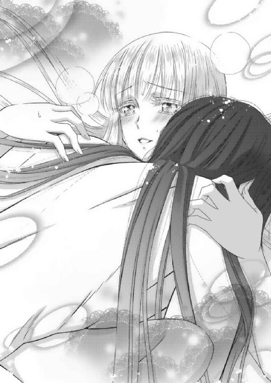
「俺は、お前のものだと言っただろう。お前が俺のものであるように──」
「......あんっ」
ひときわ激しく奥を突かれて、愛凰は炎鳳にしがみつく。
これまで感じたことのない、強くて大きな快感に攫われ、愛凰の全身が痙攣したかのように震える。
「ぁ──っ、んっ──」
か細い声が漏れたあと、無意識のうちに唇を噛みしめた。
しかし、紫の瞳は、胎内の奥底から震えて悦ぶ絶頂感を覚えて恍惚としている。
「愛凰──っ」
炎鳳が人知れず奥歯を噛んだ瞬間、愛凰は身体の奥で熱い飛沫を受け止める。
（炎鳳......っ）
肉体が限界まで押し開かれたが、疼き続けた身体の奥がとても満たされたように思えた。
（いつか私からも彼を求めるって、こういうことだったのかしら？）
呼吸を乱す炎鳳の腕の中で、不思議な浮遊感に包まれる。
（心が、身体が、すべてが炎鳳を欲して、満たされていく......）
炎鳳の黒髪に触れると、少しばかり汗ばんでいた。
だが、それを自分から撫でると、炎鳳が微笑みながら唇を寄せてくる。
（──炎鳳。私の......最愛の人）
喜びが際限なく溢れてくるものだと知ったのは、今夜が初めてのことだった。
誰かを愛し愛されることが、こんなにも幸せなのだと知ったのも、また初めてのことだった。
＊＊＊
愛凰が自身の心に残っていたわだかまりを口にしたのは、至福な一夜を過ごした翌朝のことだった。
「父と母はお見合いだったの。父の地位からすれば当然のことだけど、家と家の結びつきから出会って結婚した夫婦だった」
窓の外からは、小鳥の囀りが聞こえてきた。
炎鳳との会話は「おはよう」から始まったものの、すぐに起き上がる気持ちになれず、抱き合い、口づけ合って、初夜の余韻を楽しんだ。
そして、なんとなく続いた寝物語の先に、愛凰の心の奥底に潜んでいた結婚観が表れたのだ。
「私の記憶の中には、まるで番の白鳥のように見えていたし、永遠に愛し合う夫婦の元に生まれた私は、なんて幸せなんだろうと思ってきた。華羽が生まれて、母が亡くなったときには、とにかく華羽の母親にならなくては。そして、母の代わりに父を支えなくては──と、強く思った。でも、その後に父は再婚した。国も身分も関係なく、自分が選んで愛した女性を王妃に迎えた」
彼の腕を枕に、愛凰は淡々と話した。
炎鳳はそれを黙って聞き、受け止めることだけに徹していた。
「──これはこれで仕方のないことだと納得していた。アデリナ王妃は美しいだけでなく、気丈で賢い方だった。ロンバルディに来るまでに各国を回っていただけあって、知識も豊富で私が城の中で得たり学んだりしたものでは歯が立たないのも感じていたから。ただ......」
「ただ？」
それでも、途中で言葉を濁すと、問いかけた。
「──なんでもない。ごめんなさい」
「再婚した父を見て、見合い結婚による愛は永遠じゃない。立場から結びついた夫婦は本物じゃない。もしくは、いずれ個人同士の出会いから恋愛が芽生えたら、とてもじゃないけど敵わない。だから、俺との結婚にも生じるのは義務や責任だけであって、愛ではない。恋など芽生えるはずもない。とでも、思っていたのか？」
あえてかと思うほど、乱暴なたとえ話も聞かせてきた。
「炎鳳」
何もそこまでは──。
いや、本当はそう思っていたのかもしれない？
愛凰は、即答で否定できなかった自分に、かえって悩んでしまう。
すると、炎鳳がクスクスと笑った。
「あ、そこまで考えるような余裕さえなかったか。ここへ来たときの愛凰の中には、義務と責任しかなかった。それも、それらを俺との結婚でしか果たせないと、腹をくくっていた」
愛凰を抱き寄せて、自身も腹を割ってみせるように、当時の印象を話してくれる。
「正直に言うなら、ただの乙女である愛凰に惹かれたのは出会い頭の下着姿だと思う。あれはなかなか強烈だった。俺もまずいと思ったし、完全に素に戻っていた部分もあると思う。陽鳳が一発殴られていなかったら、俺自身も目が覚めなかったかもしれない。それぐらい、綺麗でドキリとさせられた。胸が......熱くなった」
やはり出会い頭が強烈すぎたのは、愛凰も炎鳳も変わらなかった。
だが、あの一騒動があったからこそ、炎鳳は愛凰を自身の感情のみで、まず見つめた。
生まれながらの嫡子という概念も責任もなく、一人の青年として、一人の乙女に感情を揺さぶられたのだ。
「だが、それより熱くさせられたのは、改めて城で再会したときだ。皇子として生まれ育った俺の中に、強烈なほど〝こいつをどうにかして助けたい〟〝自由にしてやりたい〟〝それができるのは俺だけだ〟という感情が湧き起こった。今思うと、そうとう図々しいが......。けど、愛凰の土下座に決死の覚悟を見たら、そう思わずにはいられなかったんだ」
しかし、それ以上に炎鳳を動かしたものが再会だった。皇子として王女に会ったときだと説明されて、愛凰はかなり驚いた。
「なぜなら、仮に同じ立場に追い込まれ、それしか手段がなければ、俺も同じようにするんだろうと思った。だが、何かが起こってそうなった俺を目の当たりにしても、愛凰だけは納得してくれる。それでこそ一国の主だ、自身のプライドなど二の次だと誉めて見守ってくれると思えた。なんていうか、恥と自尊心に対する受け止め方や遣いどころが同じだなと直感したわけだ。あの場で俺が結婚を解消する気はないと言ったのは、俺の本能が〝こいつは逃せない〟と感じたからだろうな」
やはり、彼が伴侶を選ぶ基準は、一人の青年であり一個人だけのものではなかった。
生まれながらに持たされ、また育まれてきたであろう、義務や価値観にそったものだ。
そして、それらを踏まえて見初められたのだと知ると、愛凰はこれまでとはまた違った高揚感が起こってきた。
「ただ、だからこそ愛凰からも俺を選んでほしかった。共に国を背負う者同士というだけでなく、一個人に戻ったときにも欲する、かけがえのない伴侶として求めてほしかった」
「炎鳳......」
感情のままに、炎鳳の胸に顔を寄せる。
「あとは......。なんの慰めや説得にもならないが、男女に関係なく人間は一人一人が別人だ。俺の父のように、母との思い出だけで生きられる者もいれば、妻がいてさえハーレムを持つ男もいる。だが、だからといって、今後父が後妻を取らないという保証はどこにもない。死者には動かせない感情を動かす者が現れれば、違った結果を出すやもしれない。まあ──。愛凰からすれば、永遠に母上だけを愛してほしかったのだろうが......な」
はっきりとした口調で自身のわだかまりを言葉にされて、長年胸の奥につかえていたものが、するりと取れたように感じる。
（永遠に母だけを愛してほしかった......か。確かにそうだわ。父にはずっと母を愛してほしかった。再婚などしてほしくなかった......）
そう。どれほど孤独な王の立場を理解したつもりでも、一個人に戻った一人の娘としては、父親の再婚には抵抗があった。
それはアデリナの出生がどうこうではなく、愛凰たちの母親とはあまりに正反対な印象しかない女性だった。父がただの男として本当に愛したかった女性は、アデリナのようなタイプの女性だったのではないかと感じてしまったからだ。
母との婚姻関係こそ、義務や職務意識からだったのか？ と。
（でも、まったくタイプの違う女性だったからこそ、父はこれまでにはなかった気持ちを動かされたのかもしれない。思い出だけでは動かすことのできない何かを揺さぶられ、アデリナ王妃を求めたのかもしれない。私が、まったく新しい気持ちで炎鳳を求めたように......）
愛凰は、自分の見方一つで、これほど気持ちが変わるのかと感じた。
ロンバルディから朱の国へ来たときにも思ったことだが、自分はまだまだ視野が狭いのだと──。
「......すまない」
急に腕を外され、何かと思った。
（鳩？）
炎鳳がガウンを羽織りながら床を出ると、向かった先はバルコニー。窓の外には一羽の鳩が降り立ち、コツコツと硝子を突いている。
（伝書鳩ね）
炎鳳は鳩の脚に括られた手紙を外すと、その場でそれに目を通した。
「お疲れ様。お水はいる？」
愛凰は飛び立つこともなく、そのまま部屋へ入ってきた鳩に問いかける。
自分も起き上がり、ガウンを羽織って、水差しと小椀を手にした。
「ポッポー」
「人懐こいのね」
かなり慣らされているのか、鳩は進んで愛凰の足下までやってきた。
使いに鳩を飛ばすのは、情報収集や交換の類いだろうが、朝一の知らせはなんなのか。愛凰は炎鳳の顔つきから、知らせの内容を伺おうとした。
だが、そのときだ。
「カイザー」
「おはようございます。陽鳳様！」
部屋にほど近い中庭から聞こえてきた陽鳳と女官の声にビクリとしたのは、愛凰だけではなく炎鳳もだった。反射的に部屋の中へ引っ込んだ。
逆に愛凰は、様子を伺うように炎鳳の側へ寄る。
布幕の陰から、そっと二人で中庭を見下ろした。
「相変わらず朝がお早いですわね」
「──何？ どうした」
陽鳳に声をかけたのは、華羽付きの女官の一人だった。
陽鳳の頭上には、餌をもらい終えたらしいカイザーが舞っている。
そのためか、鳩はどこかへ身を隠している。
「いえね。直接、華羽様にお渡ししても良かったのですが──。きっと陽鳳様からのほうが、よろしいかと思って」
女官が陽鳳に小さな包みを手渡し、フフッと笑う。
「これは？」
「以前、おっしゃっていたでしょう。華羽様には空色より薄紅色の、華羽の花色のほうが似合うって。それで、探したんです。ただ、やはり長衣を作る絹を染めるほどの染料は、一度や二度では取れないそうで。染め物屋が言うには、次に咲くときがあれば、今までに集めたものと合わせて長衣を一着作ることができるとか......」
気まぐれに咲いては、すぐに散ってしまう華羽の花。
思いがけない話が出てきたためか、愛凰のほうが身を乗り出して聞き耳を立ててしまう。
普段ならば、はしたない──と自制するところ。
しかし、華羽が酷く落ち込んだ長衣の話だけに、真相が知りたいという感情のほうが勝ってしまったのだ。
「で、これは？」
「陽鳳皇子が華羽様に選んだ色ならと、貴重な染料を使って一本だけリボンを染めてくれたんです。なかなか憎い染め物屋だと思いません？」
染物屋の気遣いが、そうとう女官を喜ばせ、また満足させたらしい。
陽鳳もかなり照れくさそうにはしているが、しっかり包みを受け取っていた。
「そ、そっか。ありがとう」
「礼にはおよびません。昨日の狐狩りは残念なことになりましたが、それでも華羽様の態度が見違えるよう！ きっと、陽鳳様が頼りになることがわかったのだと思うので、ここはもう一押しですよ！ さ、頑張って。ただし、代金はおこずかい半年分ですから」
「なんだ、その値段は！」
──とはいえ、思いがけない出費を強いられる陽鳳の姿に、炎鳳と愛凰が咄嗟に口元を押さえた。
カイザーは旋回しながら主を見守り、鳩はいまだ出てこない。
「あら、止めておきます？ いっそ女官長か小隊長に渡した方が、いいお礼に──」
「払うよ！ 払えばいいんだろう。ってか、すげぇ値段だけど、こんなのそもそも俺じゃ気付かないし。ありがたく譲ってもらうよ」
「よかった！ では、華羽様を呼んで参りますので、ここでお待ちを」
女官はますます気分をよくしてか、すでに城内一のお寝坊になっている華羽を起こしに行った。
女官がその場から去ると、カイザーが陽鳳の頭上に下りてくる。
何やら、からかっているようにも見える。
「──華羽の花色。それで空色は似合わないってことだったのね」
愛凰も事の次第が理解できて、ホッと一息。
「なんのことだ？」
「──実は」
元の話がわからず、首を傾げる炎鳳に愛凰が空色の話を説明する。
そして、
「おはよう、陽鳳。なぁに？ どうしたの？」
ちょうど話が終わった頃に、寝ぼけ眼の華羽がやってきた。
愛凰は、はしたない──と思いつつも、やはり続きが気になってしまい、炎鳳と共に様子を伺った。
すると、陽鳳が小さな包みを華羽に差し出した。
「これ、......やるよ」
華羽は「なあに？」と、首を傾げながら包みを受け取った。
その場で開いて、中を確かめる。
「わぁ。ピンクのリボンだ！」
思いも寄らないプレゼントに、一瞬にして目が覚めたようだ。
朝日にかざして、「綺麗！」と満面の笑顔を見せる。
「──でも、初めて見るピンク。こんな淡いピンクが、朱の国にはあるのね」
「華羽の花の色だよ。すごく気まぐれな花で、毎年咲かないんだ。それこそ一番最近で咲いたのは十年前だったかな？ 確か、それで父上も華羽への通り名を決めたって言ってた」
陽鳳の話を耳にすると、愛凰は華羽が生まれた年のことを思い出す。
まるで、悲しみに暮れる王や愛凰を慰めるように、洞窟道を抜けて舞い込んできた薄紅色の花びらたち。
「あ、わかった！ それ、姉様にも聞いたことがある。ローズの名前も、洞窟を通って飛んできた華羽の花びらを見て思いついたって。これだったんだ！」
話だけは聞いても、一度も目にしたことのない華羽の花。そして、色。
しかも、自身の誕生の時期に合わせて朱皇帝が通り名を決めたと聞き、華羽は更に大はしゃぎ。愛凰も嬉しさのあまり、飛び出していきそうだ。
そこはさすがに我慢したが。
「──空色より似合うと思うぜ。華羽には、そっちのほうが」
「......え？」
だが、どんなに嬉しくても、愛凰が飛び出していかなくて正解だった。
陽鳳が照れくさそうに、あのときの思いを告げたのだ。
「だから、次に花が咲いたら、長衣を作ってやるよ。この朱の国にも、おそらく東西の大陸にもたった一着しかない、華羽の花色の長衣を」
「本当！」
「ああ。だから、そしたらそれを着て、俺のお嫁になれよ」
「......え」
ただ、これには華羽も驚いていたが、愛凰や炎鳳も驚いた。
カイザーは、陽鳳の頭上から飛び立つタイミングを逃したことに悔いているのか、固まったようにじっとしている。
「なーんてな。無理か」
突然大きな声を出されて、舞い上がる。
華羽も「え!?」と驚き、陽鳳の言葉一つに動揺が隠せない。
「──いや、だからさ。華羽の花は、本当に気まぐれなんだよ。過去の記録を見ても、誰も予想ができない。気がついたら咲いてるとか、何十年も咲かないとか。それなのに、染料が取れるのを待ってたら、貰い損ねる。だったら成人と共に結婚してもらうほうが確実だからな」
陽鳳は、華羽が手にしていたリボンを取ると、起き抜けで少し乱れた蜂蜜色の髪にそれを巻き付けようとした。
「あ──、だめか。なら、こっちに」
「......」
髪留め一つなく、またお団子一つできていない髪にリボンを結ぶのは無理だったようで、華羽の手を取ると、リボンを手首に巻き付ける。
そうして、
「華羽。次の華羽の花が咲くまで、俺の側にいろ。そして、その次の花、そのまた次の花も、ずっと華羽と一緒に見たい」
朝日にも負けない笑顔で、言い放った。
聞いていた愛凰や炎鳳のほうが、頬が火照ってしまう。
「──」
だが、素晴らしく真っ直ぐで深い愛の告白を受けた華羽本人は、どうしてか手首のリボンを見つめながら黙ってしまった。
それどころか、急に涙を零し始めて、心底から陽鳳を焦らせる。
「華羽！ ごめん。俺、また変なこと言ったのか？」
違うと首を横に振るも、陽鳳はどうしていいのかわからない。
その戸惑いや困惑が、見守ることしかできない愛凰や炎鳳にも伝わってくる。
「泣くなよ。頼むから──。そんなに、俺は駄目か？」
顔を覗き込む陽鳳に、華羽は首を横に振り続けた。
そして、自分でもどう返事をしたらいいのか、わからなかったのだろう。華羽が、いきなり陽鳳に抱き付いた。
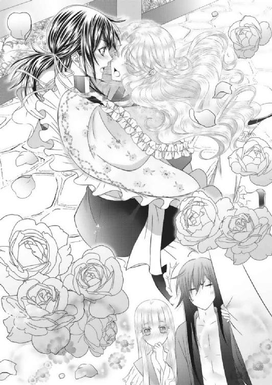
「......っ！」
「好き！ 華羽も、陽鳳が大好きっ」
全身で受け止めながらも、よろけそうになった陽鳳に、これだけは──という思いを告げる。
「華羽......」
「ごめんねっ。ずっと......、ずっと......、ごめんね」
「──華羽」
出会ってから今日という日までの、心の変化を言葉で示すのは難しい。
だが、だからこそ、本当に伝えたいことだけを選んだ華羽の思いが、陽鳳の笑顔をいっそう明るいものにした。
「よし！ 約束したからな。絶対に結婚するぞ！」
「うんっ!!」
中庭で叫んだものだから、話はあっという間に城内の隅々にまで広がるだろう。
陽鳳の嬉しそうな声を聞いてか、カイザーが飛び去ったからか。部屋のどこかに隠れていた鳩も、ひょっこりと姿を現した。
「一人前に、まあ......」
布幕越し。窓際にもたれかかると、炎鳳が改めて額に手を当て、溜息をつく。
「華羽。良かったわね」
愛凰はただただ、心から笑う華羽に安堵してか、そのまま手を繋いで棟の中へ消えていく華羽と陽鳳の姿を見送った。
──金髪に青い目の白鳥の王子様。
だが、もはや愛凰も華羽も絵本の皇子に夢見ることはない。
二人の前には、唯一無二の皇子がいる。
炎鳳と陽鳳という永遠の伴侶がいるのだから──。
「愛凰様！ 愛凰様！」
しかし、すべての胸のつかえが下りたと思った矢先のことだ。
続き部屋との仕切り、布幕の向こう側から、緊迫した女官長の声がした。
「はい！」
何事かと思い、愛凰と炎鳳が出入り口まで向かう。
「どうした、いきなり」
布幕は炎鳳の手で開かれた。
「あっ、炎鳳様も......。ご無礼をお許しください。たった今、検問小屋の兵が早馬にて朱皇帝様に一報を。明け方よりロンバルディ国王様のご容体が急変。ご危篤とのこと！」
青ざめた女官長が気丈に振る舞うも、語尾が震える。
「お父様が危篤!?」
「ロンバルディ国王が！」
愛凰が衝撃から身体を揺らし、その肩は炎鳳がしっかりと支えていた。
女官長からの報告を受け、穏やかで心温かいひとときは一変した。
そのざわめきは、東棟から中央棟へと移っていく。
「お父様......。死んじゃうの？」
「大丈夫よ、華羽。落ち着いて」
動揺する華羽を抱き寄せながら、愛凰は自らも深呼吸をする。
国を出るときに、あらゆる覚悟はしてきた。その中には、病に倒れて三年以上になる父親、ロンバルディ国王に関しても含まれている。
本心を言うならば、父親に関して知らせが来るとしたら訃報であろう。知らせが届いたところで、葬儀に出られるかどうかもわからないと思っていた。
ありとあらゆる最悪の事態を想定しながらも、華羽と共に朱の国へ来たのは、国に残る者たちへの確固たる信頼の表れでしかない。
「愛凰様。ただ今、馬と護衛の準備をしております。国境に関しましては、すでにロンバルディ国側より許可証が同封されておりました。城からの迎えも、国境にて待機しているとのお話ですので、最短時間でお戻りになれるはずです」
「ありがとう。女官長」
自分が王位継承権を持って生まれ育った故郷へ帰るのに、許可証がいる。
理不尽だが、これが現実だ。華羽はともかく愛凰は正式に婚姻の議を済ませている。
今となっては朱の皇子妃にして朱の皇族。可笑しな説が飛び続けるも、国民からは早くも「鳳凰皇后」と呼ばれで愛されている。
（何をおいても、帰郷はできないと思っていただけに、とても有り難い。許されるなら、最期にひと目お会いしたい。お父様に、私も華羽も素晴らしい方に巡り会えた。安心してと伝えたい）
一緒に話をしている炎鳳と陽鳳が目配せをし合う。
「そこまで整っているなら、二人は俺と陽鳳で連れて行く。来い、陽鳳」
「よし、来た！」
愛凰の腕を炎鳳が掴み、華羽の腕を陽鳳が掴む。
「炎鳳様たちが!?」
「お待ちください、皇子。いくら愛凰様のご実家とはいえ、なんの準備もなく見知らぬ他国へ入るなど危険すぎます！」
「皇子、お立場も考えてください！」
家臣たちが引き留めるも、炎鳳は愛凰の腕を引いている。
「備えならば、一個小隊もいらないだろう。すぐに出られるものだけ付いてこい。今は一分一秒を争うときだ。ロンバルディ国王は俺たちにとっても義父上だ。わかるだろう」
明け方に急変したのでは、現状も何もわからない。
出向いたところで間に合うか否かは、もはや運だ。
それもあり、炎鳳は即決した。側に居た親衛隊長にも目配せをする。
「そうそう。それに誰が何を言ったところで、この国で一番早い馬を操れるのは、俺と炎鳳だしな。たとえ愛凰や華羽を同乗しても、俺たちの馬が一番早い！」
「陽鳳様!!」
「お止めください、陛下！」
「よい。とやかく言う前に、そなたは護衛を揃えて一緒に出発させよ。その方が早い！」
「──っ、は！」
家臣たちは不安を隠せず引き留めたが、そこは朱皇帝が許可をした。
親衛隊長も自ら動き、その場で副隊長に「急いで精鋭を十名ほど」と指示を出す。
「炎鳳。陽鳳。愛凰たちが同行しているとはいえ、そなたたちにとっては初めての国。くれぐれも気を付けるのだぞ。すぐに後続の部隊も向かわせる」
「はい、父上。さ、愛凰」
「でも、炎鳳」
愛凰も炎鳳の同行には戸惑いが隠せなかったが、今はその時間さえない。
「心配ない。行けばどうにでもなる。いや、どうにかする」
「──はい」
「陽鳳？」
「大丈夫だって。来い、華羽」
手を引かれるまま、愛凰と華羽は馬小屋へ向かう。
小屋には常に世話の行き届いた炎鳳の青毛、そして陽鳳の漆黒馬がいる。
共に、走ることに掛けては天下一品の血統を伝える駿足馬だ。
その最高の騎手である主が鞭を振るえば、ゴンドラで六時間はかかる鳳凰城からロンバルディ城までを二時間かけずに駆け抜ける。
同行が決まった精鋭小隊十名も、親衛隊副隊長を頭に次々と馬に乗っていく。
「愛凰。松明を頼めるか」
「はい！」
そうして、愛凰を乗せた炎鳳の馬に鞭が撓った。
ほぼ同時に華羽を乗せた陽鳳の馬にも鞭が撓る。
「カイザー！ お前も付いて来い」
馬小屋の屋根からじっと様子を見つめていたカイザーに、そう叫んだのは炎鳳だった。
普段は陽鳳の言う事しか聞かないカイザーだが、今日に限っては察するところがあったのか、翼を大きく広げると大空へ舞い上がる。
そうして炎鳳たちと一個小隊が洞窟道に向かって森を抜ける。
「洞窟へ入るぞ。陽鳳、くれぐれも足を取られないようにしろよ」
「任せとけ！ 華羽、しっかり捕まっておけよ」
「うん!!」
なんとしても、息のあるうちに会わせてやりたい。その一心から愛馬を操り川縁を走らせる炎鳳と陽鳳。
愛凰と華羽はその思いを噛みしめながら、今は国境を目指す。
（──とはいえ、昨日の今日だけに油断ができない。狼が二人を襲ってきた理由も判明していない。何より気になるのは、今朝の鳩だ。返事どころか、俺が飛ばした手紙がそのまま戻ってきた。あれは何を意味しているのか）
そうして一時間も走らぬうちに、洞窟道の湖に到着。国境となる検問小屋の向こうには、ロンバルディ国の兵士たちが迎えに来ていた。
「愛凰様！ 華羽様!!」
「早馬をご用意しております。さ、すぐに馬を乗り換えてください」
だが、兵士たちは面識のある愛凰と華羽だけを城へ連れ帰ろうとしていた。
当然とはいえば当然のことなのだが、炎鳳は馬から愛凰を下ろそうとはしなかった。
「その必要はない。このまま俺たちが連れて行く。城まで案内してくれ」
「あなたは!?」
「朱炎鳳。愛凰の夫だ。そして、向こうは朱陽鳳。華羽の婚約者にして、愛凰の義理の弟。そして、後ろの小隊は護衛だ」
「なんと！ この方々が朱の皇子殿下」
「しかし、王女様たち以外、入国の許可が......」
「その許可は誰が出したものなのです。炎鳳たちはすでに父上にとっても義理の息子。それ以上に長年続いた同盟国の皇子。その彼らの見舞いです。これ以上の問答は無用！」
短いやり取りを制したのは、ぴしゃりと言い切った愛凰だった。
「──はっ!! かしこまりました」
「皆様をご先導いたします」
思いの他きつく発せられたためか、兵士たちは乗ってきた馬に跨がると、慌てて鞭を入れる。
「遅い！ 先に行かせて貰うぞ!!」
「はっ、はい!!」
だが、これより先は、さほど幅のある川縁ではないため、炎鳳は声を荒らげると、陽鳳の馬と共に兵士たちを追い抜いた。
完全に圧倒されたのか、先導しようとしていた兵士たちが脇へ寄って道を空ける。
「ごめんなさい......。炎鳳」
愛凰は、何から何まで申し訳なさでいっぱいになった。
「気にするな。この場で着替えろと言われないだけで、ロンバルディの検問は、我が国より百倍は優しい」
笑い飛ばしてくれた炎鳳の寛容さに救われる。
そして、更に一時間近く走り続けて、洞窟道を駆け抜けた。
「炎鳳！ 先が明るくなってきた！」
「──ああ」
そこには愛凰が、もう何年も見ていなかったようにさえ感じるロンバルディ城内の森が広がっていた。
炎鳳たちが洞窟道を抜け、森を抜けてロンバルディ城へ到着したのは、太陽が真上に昇る時刻だった。
「大丈夫だ。きっと間に合う。今は信じよう」
「はい」
愛する伴侶に支えられ、愛凰と華羽が馬を下りる。
「ブランシュ様、ローズ様、ご到着!!」
「お父様は!?」
「こちらです。愛凰様。よくぞお戻りに」
「華羽様！ さぁ、早く！」
緊迫した家臣たちが城内へ迎える中、愛凰たちは王の寝室へと走った。
さすがに護衛たちは入り口にていったん止められたが、炎鳳と陽鳳は王女たちの伴侶として通された。
「王女さまたちがお着きになられました」
「そなたたちは!? これより先には！」
家臣の叫び声が、城内に響き渡る。
しかし、城内の奥深くは、王族と最も近くに仕える者のみが出入りを許される域。何も知らされていない家臣たちは、ひと目で異国人とわかる炎鳳と陽鳳をそのつど引き止めた。
「よい！ この方たちは朱の国の皇子。国王様にひと目！」
そのたびに愛凰は同じ説明を繰り返す。
「皇子!! それは失礼いたしました。王女さま共々、丁重にご案内しろ！」
「はっ！ では、こちらのお部屋へ」
よもや、皇子が直々に同伴するとは考えていなかったのだろうが、奥へ進む度に止められたことが、愛凰の不安を苛立ちに変えた。
「お父様──っ!?」
しかも、案内された一室に飛び込むと、そこにはロンバルディ国王が眠る棺が置かれていた。
（え!?）
──何かがおかしい。
愛凰は柳眉をつり上げる。
「父様......っ」
「間に合わなかったのか」
「いや。それにしては弔いの準備が進みすぎだ。危篤の遣いを出して、すぐに他界したとしても、王女たちが到着するまで床に着かせておくぐらいの配慮は、普通はするだろう」
炎鳳も事態のおかしさにすぐ気付く。
「それだけではないわ。城内に入ってから、誰一人父の死去を口にしなかった。間に合いませんでしたもなければ、最期の様子も口にしていない」
愛凰は、国境からここまで同行してきた兵士たちを疑惑の眼を向ける。
「わ、私たちは危篤と迎えの指示しかされておりません！」
「国王様が──。そんなっ!!」
二人の兵士はその場で膝を崩し、衝撃を隠しきれずにいた。
よく見るまでもなく、近衛の中でも下級兵士だ。
言われたことを忠実に守るだけの彼らだけに、自らの意志で愛凰や華羽を謀ることはないだろう。
──では、誰が!?
どの段階で王の死去を誤魔化し、嘘の伝令を発したのか？
愛凰や炎鳳たちの疑惑と警戒心は、ここに来て頂点に達した。
すると、部屋の奥と出入り口より、近衛兵の中でも上級兵士たちがぞろぞろと入ってくる。
その数、二個小隊二十名。愛凰の覚えでは、王妃の側近たちだ。
「お前たち──」
「どういうことだ」
すっかり周囲を囲まれ、愛凰や炎鳳たちは身構えた。
案内をしてきた兵士たちは、ただ困惑している。
「──聞いたところで無駄です。この者たちは、正当な主の指示に従っているのみ」
びりびりとした緊張感が走る中、奥から側近たちをかき分けアデリナが姿を現した。
漆黒のドレスに身を包んだ彼女は、閉じた扇子を手にして極上の笑みを浮かべている。
「アデリナ王妃！」
炎鳳が前に出ようとした愛凰を、そして陽鳳が華羽を後ろ手に庇う。
「なるほど。すべて、そなたの差し金か。死去の知らせでは、公の国葬に正式参列することになる。だが、危篤ならば摂るものも摂らず馳せ参じるのが人の情──」
「さすがは一国一城の主となるべくして生まれ育った皇子。いろいろと察しがよい」
「王妃様！」
なおも愛凰が前へ出ようとするが、炎鳳がそれを許さない。
アデリナが手にした扇子の先を、炎鳳に向けた。
「だが、その割に本来お持ちの警戒心はどこへやられた？ 美しい王女たちの護衛を自ら買って出たのだろうが、あまりに浅はかな行為。そうは思わぬか？ 愛凰」
「無礼者！ それが王の危篤を心より心配し、馳せ参じてくださった他国の皇子に対する振る舞いか！ まずは己の立場を弁えよ！」
激高する愛凰を利き腕で止め、炎鳳はいぶかしげに眉を顰めるだけ。
陽鳳と華羽は、固唾を呑んで周囲を警戒する。
「──昨日。我が領内にて狼を操り放ち、華羽たちを襲わせたのもあなたか。狙いは華羽。いや、ロンバルディ国王の死去と同時に移るであろう、王位継承権か」
炎鳳の言葉に誰より驚きが隠せなかったのは愛凰。
しかし、アデリナは顔色一つ、表情ひとつ変えずに扇子の先を自身の頬にポンと寄せた。
「──狼？ それは運のない。いっそ昨日のうちに動けぬようになっていれば、このような現実をわざわざ見に来る必要もなかったでしょうにね」
アデリナはその口元をいっそう微笑ませて、側近の一人に目配せをする。
控えていた側近が、一枚の書状を炎鳳や愛凰たちに見せ付けた。
「遺言状!?」
その驚きは、一瞬で哀しみさえ消し去るほど衝撃を愛凰に与えた。
──我が命が没するとき。その王位継承権を我が娘、ブランシュこと愛凰、ローズこと華羽のみならず、妃・アデリナにも与えることをここに認める──
弱々しい筆跡であったが、間違いなくロンバルディ国王の自筆の書状だ。
見慣れたサインのあとには、しっかりと王家の捺印がある。
「お父様!?」
「どういうことだよ、これは」
「国王亡き後、ロンバルディ国の女王はこの私。アデリナ・ロンバルディということです」
華羽と陽鳳も困惑が隠せない。
すでに朱皇帝の軍事同盟、新たに交わされた密約の中には、ロンバルディ国の時期女王は華羽。そして、婿となる陽鳳が共に帰国し、女王を支え国を守ることが交わされている。
しかし、この遺言状を元に王位継承権の順位を決めるなら、朱の国に嫁いだ愛凰は第三位。
未成年の華羽が第二位となり、国王妃であったアデリナが第一位の権利者となる。
ただ、これだけを見る分には、ロンバルディ国王家では、不思議のない事態だった。
過去にも国王が急死した際、嫡子が幼すぎたために成人までの期間を国王妃が代理女王となって、治めた実例がある。
これは国王と並び、女王制度が認められているロンバルディだからこその継承例だ。まだ西側諸国でも珍しく、愛凰はこの制度に誇りを持っている。
今回にしても朱の国との密約がなければ、またアデリナの王位滞在期間が一時的なものならば聞き逃せる内容だ。
だが、目の前のアデリナからは、不安しか湧き起こらない。
「普通は後見人だろう!? 王位は華羽が継ぐんだろう！」
「私が自ら後継人を指名せずに退くか、他界すればそういうことになるやもしれませんね」
やはり、アデリナは王家を乗っ取るつもりだ。
おそらく愛凰と華羽が国を出る前から、この企ては彼女の中で進行していたのかもしれない。
「お前たち。この者達を全員捕らえて牢へ入れておしまい」
アデリナが扇子を振るい、命令する。
側近たちが同時に脇差しの剣を抜き、愛凰たちに突きつける。
炎鳳と陽鳳も、軽装ながら剣を構えざるを得ない。
だが、そのすきに愛凰が炎鳳の前へ出た。
「お待ちなさい！ 炎鳳たちに手をかけることだけは、断じて許しません！」
揺るぎない姿勢と凛とした構えを見せる愛凰に、側近たちもたじろいだ。
しかし、愛凰はそんな彼らには目もくれず、アデリナのみを視線で捕らえる。
「アデリナ王妃。状況を、時勢を理解されていらっしゃるのですか。私や華羽はともかく、この方たちは朱の国の皇子。不当な扱いをすれば、ロンバルディは西の強国・ミローネだけでなく、東の強国・朱の国とまで戦を招くことになるのですよ」
そうして、今一度確認を取る。
本当に警戒すべき相手が誰なのか、敵が誰なのか。
「国王亡き後、あなたが王位を継がれることになっても、私は構いません。それがお父様の決められたことならば、国民のためになると信じた上で、すべてを愛するあなたに託すと決めたのならば、その遺言に従いましょう。若輩ながら、今後の国政のお手伝いも致します」
王家が誰のために、なんのために存在するのか。
「はなから私たちと王位継承で争うことを前提にするのはおやめください。これこそ父が、国王が、最も望まぬことだとは考えないのですか!?」
しかし、真っ直ぐに見据える愛凰に対し、アデリナは鼻で笑った。
「──生ぬるい。すべてにおいて生ぬるいのは、お国柄？ まるで苦労知らずとしか言い様がない。王も、そなたも......。そのような甘さで国を司るなど笑止千万」
愛凰どころかロンバルディ王家そのものを卑下するような言われ方に、愛凰も怒気を露わにする。
「王妃様！」
「身も心も美しく清らかなロンバルディ王女。いまや朱の国の皇子の妃にして次期皇后。だが、それはすべてこの城の中、城壁内のこと。そなたはすでにミローネ軍を恐れて、国と民を捨てた隣国への亡命者。主に逃げられた民の心は、私のものなのですよ」
「亡命!?」
だが、次々と明かされる現状に、怒気さえも混乱に変わる。
「なんだと！」
「まさか、この婚姻。すべてそなたが仕組んだのか。いずれ王位を我が物とするために、病の床に着くロンバルディ国王を、そして我が父・朱皇帝をも謀ったのか!?」
炎鳳が再び前へ出た。
アデリナの勝ち誇ったような微笑みが、哀れむようなそれへと変わっていく。
「──人聞きの悪いことを。年頃の王女の婚期に気遣いはしたが、婚姻そのものを決めたのはロンバルディ国王と朱皇帝。そして、その決定に従ったのはそなたたち自身。されど、中には国を守るための婚姻であるなら、いっそ王女の身柄をミローネ王に差し出し、和睦を図るほうが良かったのではないかと思う者もいる。それさえ知らぬものなら、ただ逃げたと思うのは当然のこと」
切々と解くアデリナに、炎鳳は最初に抱いた愛凰たちへの感情を思い出す。
「なぜなら、どれほど朱の国が強国であっても、西側の者にとっては実態のない絵空事。ましてや、その絵空事さえを知る者が城内にわずかしかいないのです。目に見える大国の驚異に挑むでもなければ、媚びるわけでもない王女たちなど、誰が信じて心を寄せるというのです。炎鳳とやら。そなたも一国の皇子であり軍人ならば察することができるでしょう。人質花嫁、政略結婚などとは、王女だからこそ使われる言葉。危機迫る国から脱した王子など、ただの亡命者──卑怯者であろう」
深夜に小型のゴンドラで、大した荷物も共もなく、国境を超える花嫁という名の王女たち。
夜逃げのようだ。これが王子ならば亡命だな──。
一度は自身の頭によぎったことだけに、炎鳳もグッと唇を噛んだ。
だが、炎鳳がそう感じたぐらいなのだから、何も知らないロンバルディの国民が消えた王女たちを詮索した場合、逃げたと噂が立ったとしても致し方のないことだ。
借りに知っていたとしても、自身の目で見たこともない朱の国に対して、どれほどの信憑性があるものか？
軍事的擁護？ 軍事力はおろか、国さえ知らないのに？ だ。
そう考えれば、ときと共に不安は不信に変わり、本来の目的さえねじ曲げられて広げられても不思議がない。
ましてや王は長期に渡り病の床にいた。アデリナが政の中心となり、実権を握っていたとしたら、国民を動かす噂の一つや二つを流すことは容易いだろう。
側近たちにしても、目の前にいない王女たちを指示し続けるには、そうとうな忠義心が必要だ。
朱の国の存在にしても、王女たちにしても、目の前に存在がないということが、一番猜疑心を生み、また育ててしまったのだろう。
とはいえ、愛凰と華羽が朱の国へ嫁いでまだ一ヶ月弱だ。
あまりにも早い心変わりに、炎鳳は唖然とするよりも怒りが湧いた。
と同時に、この心弱い民たちを、どこまで愛凰が身を挺して守る義務があるのか!? とも、疑問が湧き起こる。
「理解できたようね。──さ、四人を捕らえて幽閉なさい」
「炎鳳と陽鳳を巻き込むのはやめて！ すでにあなたの思い通りになっているなら、私と華羽だけで十分でしょう！」
すべてを理解しながらも、全力で受け止めようとする愛凰の姿勢は変わらない。
「人質にもならない疫病神より、新妻に警戒心を奪われた朱の次期皇帝のほうが、よほど利用価値がある」
「なんだと！」
陽鳳が怒りのあまり、剣を構えた。
取り囲む兵士たちも、一斉に身構える。
すると、そのときだ。
「そうはさせぬぞ、アデリナ！ ロンバルディは我らが国！ 決してお前の好きになどさせぬ!!」
出入り口の扉が勢いよく開くと同時に、ロンバルディ国の将軍と親衛隊一個小隊が現れた。
しかし、その姿や顔色は、すでに何日も幽閉されていたような衰弱ぶりだ。
将軍の息子にして親衛隊員でもある青年が、炎鳳に向かって「申し訳ありません！」と叫ぶ。
「どうりで......。文さえ読めぬわけか」
「え？」
「百年も続いた間柄だ。双方の長だけが必要最低限のやり取りを交わしていたわけではない。ときには国境を守るもの同士が言葉を交わし、また子どもの悪戯心から鳩を飛ばし、運良く文通相手を見つけることもある」
炎鳳は、意としてロンバルディに密偵を持っていたわけではない。
ただ、昔から文だけのやり取りだが、心の通じ合う友を持っていた。
「お前たちも、お前たちだ！ 亡き国王様からのご恩も忘れ、このような振る舞い。騎士の風上にも置けぬ！」
将軍が剣を抜き、側近たちを出入り口の前から散らす。
「お逃げください、ブランシュ様！ これらの事態の失態は、すべて私どもの責任！ 必ずや王家の血筋と王位をお守いたしますので、さ!! 早く！」
どれほど衰弱していても、王家の側近中の側近である親衛隊。
愛凰と華羽の姿を見たこともあり、生気を取り戻したかのような瞳で、まずこの部屋から脱出させよう試みる。
「何を言うの!? 私に国から逃げろ、本当の卑怯者になれというのですか！」
「今は生き延びてもらうことが最善なのです！」
「朱の皇子よ！ どうか我らが王女を連れて、本国へお逃げください！ 必ずや、事態を収めてお迎えに参ります！」
一個小隊とはいえロンバルディ兵きっての精鋭部隊。王妃に寝返った側近たちにだけは負けまいとする気迫も十分だ。
「さ！ まずは朱の国へ。我々がお迎えに上がるまで、断じて帰国はなりません！」
「将軍っ!!」
「来い、愛凰。とにかくここに居てはまずい。まずは表へ出て、護衛と合流するんだ」
「炎鳳」
「姉様っ、今は逃げよう！ 逃げるが勝ちよ!!」
いまだ戸惑う愛凰の手を引き、華羽が走った。
二人を炎鳳と陽鳳が、そしてその周りを将軍たちが囲うようにし、まずは奥間を飛び出した。
「何をしている！ 早く、あの者逹を捕らえよ！」
激怒したアデリナが側近を煽りつつ、自らもドレスを翻して愛凰たちを追う。
「王女たちを一刻も早く城外へ。洞窟道へ！」
「はっ!!」
「なんだ!? 何事だ!?」
我武者羅に城内を走るも、城内の衛兵たちの中には戸惑うものも多く目に付いた。
アデリナの命令に従うもの、「退け」と叫ぶ将軍に従うもの、ただただ困惑し狼狽するものの三者に別れる。
「アデリナの策がすべてに浸透しているわけではないようだな」
「はい」
炎鳳の言葉に愛凰も大きく頷いた。
「とにかく撤退あるのみだ！ こうなったら体勢を整えて出直しだ、あのババア！ 絶対に許さねぇからな」
「うん！ 華羽も絶対に許さない!!」
そうしてようやく城外まで走り着く。
「皇子！」
「何事ですか!?」
慌てて逃げてきた炎鳳たちに、外で待機を強いられていた朱の国の一個小隊がざわめき立つ。
「出発する。説明はあとだ。まずは急いで国境を越える！」
「はい!!」
すぐに事態を察し、護衛に回る。
「洞窟の入り口までは、我々も護衛いたします」
愛凰と炎鳳たちを守るのは二個小隊だが、それぞれの国の精鋭だ。
追っ手が出てきたときには、四個、五個小隊の人数になっていたが、馬に乗り込み走り出しさえすればこちらのものだ。
「乗れ、愛凰」
「はい！」
だが、愛凰が馬に引き上げられたそのときだ。
「逃がすな！ 射れ！ 全員射殺してしまえ！」
もはや、狂気に囚われたとしか思えないアデリナの命令に、兵士たちがいっせいに弓矢を構えた。
「うわっ！」
「鷹だっ!!」
しかし、それは突然降下してきたカイザーに寄って阻まれる。
「ええい！ 寄こせ!! 死ね、愛凰！」
怯んだ兵士から弓矢を奪うと、アデリナが自ら構えて放った。
「させるか──っ!!」
愛凰を庇うように馬を操る炎鳳。
だが、そのために矢は炎鳳の左肩に突き刺さる。
「炎鳳っ！」
「皇子っ!!」
その瞬間、誰もが両目を見開いた。
「炎鳳！」
迸る鮮血に、陽鳳の悲鳴にも近い声も響く。
「──己っ」
それでも馬上から落ちることなく、炎鳳は自ら矢を抜きアデリナのほうへ振り向いた。
「わかったか。いずれの理由を持ってしても、愛凰に傷を負わせることは、この俺が許さない！」
激高し威圧する炎鳳の瞳に、全身が震えるのを隠すことができないアデリナと兵士たち。
「そして、今一度だけ聞こう。長きにわたる同盟を結ぶ我が国に刃を向ける意味はおわかりか？ このまま我が国との友好断絶を望まれるのか、アデリナ・ロンバルディよ！」
鮮血が滴り炎鳳のシャツを、そして彼の身体を支ええる愛凰の長衣を染めていく。
「ふっ。同盟などもはやあるまい。私の放った矢がそなたを撃った。この手で朱炎鳳、そなたを傷つけたのだから」
それでもアデリナは引くことをしなかった。
弓を剣に持ち替え、自ら今一度斬りかかる。
「ふざけるなっ！」
一斉に親衛隊が動くが、それさえかき分けるようにして、陽鳳が馬上から自身の剣を投げつけた。
「──!!」
それはアデリナの足下へ、ドレスの裾へと的確なまでに突き刺さる。
「王妃様！」
「貴様、よくも！」
王妃たちの側近がざわめき立ち、陽鳳たちに剣を向けて斬りかかる。
「とにかく今は、脱出を！」
「ここは任せた。陽鳳、俺に続け！」
将軍たちが盾となり、手負いの炎鳳を筆頭に小隊がいっせいに走り出す。
「炎鳳、血が！」
「俺は大丈夫だ。今は国境を超えることだけを考えろ」
気丈に振る舞うも、愛凰が支える炎鳳は、どうにか意識を繋いでいるだけの状態だった。
見てわかるほど出血が酷い。
「陽鳳！」
「心配するな、華羽。お前は必ず俺が守る！」
精鋭とはいえロンバルディの将軍たちが、また朱の国の副隊長たちがどこまで持つかはわからない。
愛凰たちはとにかく森を抜け、洞窟道へ駆け込み、国境を超えなければこの事態からの脱出はない。
「追え！ 奴らを逃すな!!」
洞窟へ駆け込んでも、背後からは両兵士たちの激声と蹄の音が響く。
「カイザー！ 敵を止めろ！」
陽鳳の命令に漆黒の若鷹は追い掛けてくる兵士たちを少しでも蹴散らすように、鋭い爪と嘴で攻撃を繰り返す。
「鷹さん、大丈夫なの？ 炎鳳」
「洞窟に入っちまえば、むしろこっちのものだ。そもそも闇の中で、あいつに適うものなどいない。カイザーは空の皇帝でもあるが、闇の使いでもある」
華羽の問いかけに対し、不敵に笑う陽鳳。
だが、その言葉の通り、カイザーは走り迫る兵士たち、そして馬を目掛けて次々に攻撃を繰り返した。
それでも追っ手は激減しない。
国境までの一時間が長い。
「炎鳳っ、炎鳳っ！」
次々と追っ手が迫ってくる限り、馬を止めて手当をすることは叶わない。
この状況で唯一できる治療があるとするなら、愛凰が炎鳳を支えながらも、傷口を塞ぐことだけだ。
（......神様！ どうかこの血を止めて!! 炎鳳の、炎鳳の血をこれ以上流さないで!!）
愛凰の長衣が、炎鳳で鮮血で染まっていく。
胸が、全身がその血を感じて、どうしようもないほど熱くなってくる。
──このままでは。
そんな思いが愛凰に過ぎり、自然と涙を零させる。
だが、泣いている場合ではないことは、愛凰が一番わかっている。
唇を噛みしめて、頭を強く左右に振った。
「炎鳳！ 愛凰!! 護衛だ。護衛の蹄の音が聞こえる。国境を越えて向かってきてるから、もう一息だ！」
「姉様！ 親衛隊長さんたちよ!!」
陽鳳と華羽の声が響くと同時に、炎鳳がぐったりと身を崩した。
愛凰は、その体を支えながら、利き手に手綱を巻き付けて握り直す。
「陽鳳っ、炎鳳が！」
その状況にいち早く気付いた華羽の声を聞き、陽鳳がいったん馬を寄せた。
「陽鳳。すぐに炎鳳の止血をしないと」
「わかってる！ けど、今はとにかく国境を越えてからじゃないと、何が起こるか予測ができない。さすがに奴らがこのままこっちへ雪崩れ込んでくるほどの準備ができているとは思えないけど──。仮に攻めてきたとしても、道を塞ぐ方法があるから」
陽鳳とて、すぐにでも炎鳳をという思いは愛凰と変わらない。
だが、いまだ洞窟内に響く両兵士の声が止まない限り、走り続けるしかないのだ。
「道を塞ぐ!?」
「──ああ。ロンバルディ側に用意があるのかはわからない。ただ、うちの家系は代々大ざっぱで単純思考だ。万が一にも面倒が起こったら、即日出入り口を塞げばいいっていう考えで、初代のときにはもう仕掛けが作られている」
「......っ」
「ごめんな、愛凰。西のことはよくしらないけど、東はそれだけ戦いが多いんだ。仕掛けはロンバルディを疑って作ったんじゃなく、あくまでも東の戦が雪崩れ込まないようにってことだから」
そうして、炎鳳を支える愛凰の負担が最小限度で済むよう、陽鳳は片手を手綱に延ばしてきた。
愛凰からそれを受け取り、速度が少し落ちるも、二頭を同時に走らせる。
「馬さん、お願い。上手に走ってね！」
細やかながら、華羽も漆黒馬の鬣を掴み、訴えかける。
前からは親衛隊長たちが、一個中隊を引き連れて向かってきた。
「炎鳳様っ!?」
「陽鳳皇子！ これはいったい何事ですか!!」
誰もが想像していなかった炎鳳の負傷に、声を荒らげた。
「説明はあとだ。後続で戦ってる奴らを援護してくれ！ 俺たちは検問小屋へ寄る」
「承知しました！」
さして広くもない川縁、馬が三頭並べばいいだけに、入れ違うのもギリギリだ。
しかし、そこは慣れたもので、中隊の半分がその場で馬を川へ飛び込ませた。
次々に愛凰たちの背後に回り、陽鳳たちに細やかながら安堵を与える。
「愛凰！ 小屋だ」
そうして走り続けるうちに、国境の検問小屋へ到着した。
「ええ!!」
中隊のうち、一個小隊が愛凰たちの護衛として背後に残り、いったん検問小屋で馬を止めた。
炎鳳は完全に意識を失っている。
「炎鳳の止血をして、一刻も早く炎鳳を城へ戻すぞ」
「はっ！」
まずは兵士たちが支え、愛凰の腕から炎鳳だけを馬から下ろした。
「──っ!!」
松明の明かりの中、左肩から衣を真っ赤に染めている出血のひどさに、一瞬誰もが息をのむ。
しかし、そんな兵士たちを更に驚かせたのは、馬から下りると同時に短刀を取り出した愛凰の姿。自身の長衣の裾に切り込みを入れ、力の限り引き裂き、止血用の布を用意し始めたのだ。
「愛凰様！」
「ロンバルディに毒矢の常備はないわ。とにかくこれで止血を！」
そうして、切り裂いた長衣を包帯替わりに、炎鳳の身体へ巻き付ける。
「ここと、ここを、きつく縛って」
これ以上の出血を抑えるために、患部と心臓に近い胸部の二カ所で止血を施した。
「愛凰様。ここからは私が炎鳳を乗せて走りますので」
「お願いね！」
名乗りを上げたのは、炎鳳、陽鳳に続く駿馬の乗り手の親衛隊員。すぐさま愛馬に跨がると、自身の身体に炎鳳の身体を背負うような形で固定し、鳳凰城へ向かった。
「炎鳳。すぐに城へ運ぶから。もう少し......、もう少しだけ頑張って」
愛凰も炎鳳の青毛の手綱を取り、寄り添うようにして走る。
「炎鳳！ すぐだからな！」
「炎鳳......。炎鳳兄様、頑張って!!」
華羽を乗せた陽鳳もまた、ピタリと後続に付いて走る。
「絶対、絶対、死なないで！」
洞窟道をひた走る親衛隊たちも、心を合わせて祈り続けた。
華羽の悲鳴が胸を撃つ中、一行は洞窟道を走り抜けて、鳳凰城へたどり着いた。

〝炎鳳！ 炎鳳!!〟
どうしてそんなに必死で呼んでいるのだ？ と、炎鳳は疑問に思った。
〝炎鳳〟
今にも泣きそうな顔をするなら、いっそ泣いてくれたらいいのに──。
芯が強いことは理解できるし、伴侶としては頼りがいもある。
何より凛としていて気丈な姿は美しいが、自分の前でぐらい弱音を吐いてくれたらいいのに。声を上げて泣いてくれたらいいのに──と。
「──愛凰」
ふいにその名が、声が、耳に付いた。
しかも、今にも消え入りそうで弱々しい。
いったい誰の声だ、誰の口調だと炎鳳は自分でも不思議に感じた。
「......炎鳳！ やっと目が覚めたのか。無事か！」
──なんだ、自分の声だったのか。
そう確信したのは、顔を覗き込まれると同時に、憔悴しきった陽鳳の姿を目にしたからだった。
途切れていた記憶が蘇る。
アデリナから愛凰に向けて放たれた矢を躱そうとして、肩に激痛が走った。
退却のために無我夢中で手綱を握って馬を走らせたが、それも途中までしか覚えていない。
次第に意識が薄れていき、戻ったときには見慣れた部屋の床の上だ。
「陽鳳......。愛凰と華羽は？」
「今、呼んでくる。さっきまでずっと側にいたんだ。それこそ、片時も離れずに。でも、さすがに持たなかったのか意識を失うように眠っちゃって、女官たちが別室へ......」
炎鳳が問いかけると、陽鳳はやつれた顔で笑いつつも、その場で身を返す。
「いや、いい。わざわざ起こさなくても」
腕を掴んで引き留めた。
すぐにでも会いたい気持ちはあるが、二人が無事なら急ぐことはない。
炎鳳には先に確かめておくこともある。
「炎鳳」
「それより先に聞かせてほしい。俺は、どれぐらい眠っていたんだ？」
「丸二日。一度は意識を取り戻したけど、受け答えも曖昧で。すぐに意識を失うように、また眠りについて。もう......、駄目かと思った......。城内医師は〝大丈夫だ〟って言ってくれたけど、全然起きないから──」
炎鳳に腕を引かれるまま、陽鳳は床に腰をかけた。問いかけに答えていると、思い出したように涙が溢れ出した。
身体だけは大きくなってきたが、まだ十三歳だ。
生まれたときから一緒に居るのが当然だった兄が、生死の境を彷徨ったのだ。このまま失うかもしれないと感じたときの恐怖は、計り知れない。
本当ならば、声を上げて泣き叫びたい衝動にも駆られたことだろう。
愛凰や華羽の存在がなければ、今この瞬間もどうなっているのかはわからない。
そんな陽鳳を気遣いながら、炎鳳が上体を起こす。
「心配をかけて、すまなかった。だが、俺もやわではない。ましてや、こんなことになった今、新妻やお前たちを残して先に逝く訳にはいかないからな」
「いや、だからって、まだ起きなくていいよ。横になってろよ」
慌てて陽鳳が横にしようとするが、炎鳳がその手をきつく掴む。
「それより、陽鳳。父上にはなんと報告したんだ」
「......ありのまま......」
面と向かい問われて、陽鳳は語尾を振るわせた。
「それで父上は、どの様に？」
「即日のうちに、ロンバルディ政府へ最後通知を送った。今後の関係維持とは別に、いずれの者が王位に就くも、国が様変わりするも、そこに朱の国、皇家はいっさい介入はしない。だが、いかなる理由をもってしても、再度朱の国とその国民に刃を向けることがあれば、東の地最強と謳われる鳳凰軍が全力で撃つ。殲滅の覚悟があるなら進軍の意を示せ──と」
陽鳳には自分が見たまま、聞いたままを朱皇帝と炎鳳の双方に報告することしかできない。
しかし、その内容はといえば、炎鳳でさえ一度も聞いたことのない冷酷な通達だ。
これだけでも、朱皇帝の怒りが手に取るようにわかる。
ただ、朱皇帝の激怒はもっともな話だ。
長きに渡る友好関係を一方的に壊されただけでなく、最愛の息子が生死を彷徨ったのだ。
それも完全な騙し討ちだ。
「──殲滅。戦いになれば、一兵卒たりとも生かしてはおかぬ。皆殺しにすると、普段温厚な父上が警告したのか」
「うん。ただし、戦国の世を拒み、平和のみを望んだロンバルディ王家。次期王が、先祖代々からの意思を受け継ぎ、また守り通すと意を示すのであれば、今回に限り炎鳳のことは目を瞑るとも」
「そうか......。猶予だけは与えてくれたか」
朱皇帝がロンバルディ国へ即日攻め入ることがなかったのは、自身の怒りよりも倒れた炎鳳の心情を第一に考えた。
そして、愛凰と華羽の思いや立場を考えたからだろう。
「それで、ロンバルディからの返事は？」
「まだ何も。密偵からの知らせによれば、城内では王妃派と王女派が真っ向対立。王女派の代表は俺たちを助けてくれた将軍を中心とする親衛隊や高級官僚で、先祖代々王族に仕えて、洞窟道のことも知っている人間たち。──で、王妃派のほうは下級兵士や政府関係者といった国民により近い人間たちで、洞窟道も朱の国も知らないから、愛凰たちがミローネ軍を恐れて、どこかへ亡命していたと思い込んでる。一応、大公が両派の間に入り、どうにか和解できないかと奮闘中らしい。でもって、洞窟道の入り口は将軍の配下が、国境周辺に関しては我が軍が守っている状態かな」
炎鳳は陽鳳からの説明を、一つ一つ頭の中で整理していく。
「亡命説に関しては、王妃が仕組んで広めたとしか思えないが......。それにしても、大公が間に入っているのか？ 王妃の養父なのに」
現状でわかっていることは少ないが、それでも炎鳳は今回のことがアデリナ一人の仕業とは思えなかった。
誰かが協力しているか、裏で糸を引いているのか──。
だとしたら、一番協力できるのがロンバルディ国の大公にしてアデリナの養父なのだが、今はどちらにも付いていないようだ。
「そのへんは、まだ調査中。派閥争いの仲裁に入ったってことは、争い嫌いのロンバルディ国王の意志を汲んでるとも取れるし、単なる優柔不断とも取れる。最悪、王位がどこへ転がったとしても、自身の立場は守れるっていう狡賢い奴かもしれないし、こればかりは俺たちじゃよくわからない」
大公に関しては、陽鳳の言うとおりだった。
今の状況で、どちら付かずの人間が現れるのは不思議でないし、常に形勢が有利なほうに付くという人間も実際は多い。
良くも悪くも一番多そうなタイプだけに、大公の本心は読もうにも読めない。
ましてや炎鳳は会ったこともない。愛凰でも判断できるかという話だけに、ここは気にしてもどうにもできない。
「──いずれにしても、愛凰たちの誤解を解くには、我が国との繋がりを国民に開かす必要がある。これに関して、父上はなんと？」
炎鳳は更に気になることを問い続けた。
「必要なら明かせばいいし、場合によっては道を塞げばいい。ただ、道を塞ぐとなったら、ロンバルディとの国交は断絶。誤解が解けたとしても、愛凰と華羽は国を無くすかもしれないし、その後のロンバルディがどうなるのかは、風の便りに聞くのが限界だろうって」
朱皇帝らしい考え方だった。
そもそも洞窟道に関する密約は百年も前、両家に何も備えのない乱世の時代の話だ。
その後も東西の各地で戦いが起こらない日はないが、少なくとも今の朱の国には備えができている。
洞窟道そのものを活用し、貿易大国にでもなっているなら、そう簡単に閉鎖などできないだろうが、そのような使用はまるでしたことがない。
清水の恩恵こそは受けているが、それは洞窟道を塞いだところで活用できる。
ようは人馬が通れないようにするだけの閉鎖であって、川の水までせき止めなければいい。水路を別に用意し、朱の国側の川へ導けばいいだけの話なので、それも炎鳳の祖父の時代には完成されている。
ロンバルディ側がどうなっているのかは、愛凰に聞かなければわからない話だが──。
「山を越える頃には、話が変わっていそうだしな」
「少なくとも、ミローネ軍がロンバルディを攻めたと知ったときには、占領されてるな。うちの精鋭部隊でも、神々の山越えとなったら命がけだ。たどり着いても戦力になるかどうか、あやしい」
陽鳳との話を進めながらも、炎鳳は突然起こった内乱を、どう治めるのが一番被害が少なく、また愛凰と華羽のためになるのかを考える。
「それに、今の段階で家臣逹は納得していない。進んでロンバルディを助けに行こうと思う者はいない。奴らは炎鳳を死の縁へ追いやった。それだけで戦を起こしても構わない、敵を討つと息巻きたいのが本心だ」
国交を断絶してしまうのは簡単だが、それでは収まりきらない感情が渦巻いているのは、おそらくロンバルディよりも朱の国のほうだ。
「でも、その衝動を止めてるのは、父上じゃない。愛凰が......、愛凰が施した怪我の処置が、炎鳳の命を取り止めた。炎鳳のために、家臣の前で自分の長衣を裂いた。炎鳳の血で自身を真っ赤に染めて......。王妃や自国民から裏切られて、誰より心に深い傷を負っている愛凰を見ているから、我慢してる。奥歯を噛んで、炎鳳の目覚めと次なる指示を待っている」
一方的に話をするも、陽鳳は陽鳳で幾度となく首を傾げた。
「炎鳳。俺には、あの王妃が何を考えているのか、さっぱりわからない。愛凰は国王の遺言なら王座を譲るって、国政の協力もするって言った。国のためになるなら、華羽共々引き下がるって──。それなのに、命まで奪おうとするほど目の敵にするって、なんなんだよ!? 普通なら正当な王女を味方に付けて王政を維持する方が正解じゃないのか!? そしたら朱の国だって味方になるんだし......。勢いに任せて付いていった俺たちを捕らえて、軍事的に利用しようっていうほうが、まだ理解の範囲だ」
ロンバルディがこうなった経緯のすべてが、わかっているわけではない。
ましてや愛凰や華羽が驚愕している事態だ。他国の人間からすれば、想像するのもやっとという状況だが、それさえも難しいと思う。
炎鳳からしても、陽鳳の言うことはもっともだ。
「家臣達は、華羽と愛凰の祖国だから、敢えてロンバルディという国に憎悪は向けないように必死だ。けど、あの王妃は別だ。あの王妃に味方する兵士も国民も......。だから、なんらかの形で戦は起こるような気がする......」
意味がわからない。訳もわからない。
だから余計な苛立ちまで生まれ、それが怒りや憎しみに変わっていく。
「本当。何が亡命だよ。俺は愛凰が、華羽と国と国民を守りたい一心で、ここへ来た日のことは忘れない。父上の前で、俺たちや家臣の前で全身を震わせて床に手を、額を付けた姿は忘れない!! 自分の命乞いなんて、たったの一度もしてないのに！」
陽鳳は憤りを隠せないまま、勢いづいて床から立ち上がる。
「王妃の思惑か......」
すべての理由、話の鍵は、やはりアデリナの手の中にあるのだろうが、それ以外に何もわからないというのが、炎鳳にとっても苛立ちの元だ。
「あ、鳩だ」
急に陽鳳が声を上げた。
炎鳳が窓の外へ視線をやると、バルコニーの手すりに鳩が下りてきた。
「炎鳳。向こうからの知らせかも！」
「ああ。何か動いたのかもしれないな」
陽鳳が窓を開くと、鳩が炎鳳の元まで飛んでくる。
その足下には旧友──ロンバルディ国親衛隊員からとわかるメッセージが、括り付けられていた。
愛凰が意識を失うように眠りに就いたのは、数時間前のことだった。
（......どうして？ なぜこんなことに？ いったい私は何をして、彼女にここまで恨まれたというの？ それとも無意識のうちに、あなたを傷つけるようなことを？ それも、国を追われるほどのことを......？）
鳳凰城へ戻ったのち、城内医師の手当と見立てにより、その日の晩が峠だと告げられた。
生きた心地がしなかった。
幸い翌朝には、峠は越した。意識は朦朧としていたが、一度は取り戻して、すぐに眠りに就いた。
あとは回復と共に自然と目が覚めればと言われて、もう一晩側にいた。
その後も炎鳳が目覚めるまでは──と居続けたが、先に華羽が眠ってしまった。
愛凰も昼前までは持たなかったように思う。
だが、落ちた眠りの中でさえ、愛凰は自問を繰り返していた。
自答できないことはわかっていたが、自分なりに答えらしきものを探し続けたのだ。
（アデリナ王妃......）
そうして、まずはアデリナとの過去、思い出をたどった。
南の国の生まれでジプシー育ち。西側諸国を旅して回った最後に、彼女はロンバルディにたどり着いたまま永住することを選んだ。
始めは城下町に住んでいた。その美しさに目をとめ、城勤めに導いたのは大公だ。
彼女は美しいだけでなく知識が豊富で、何より旅で回った外国のことをよく知っていた。最愛の妻を亡くし、一人で重責を担う国王の慰めになるのではないかというのが、城に入れた理由だ。
その後、ミローネ軍の進撃が始まった。
彼女の助言もあり、一度は撤退させることに成功した。
それを機に、国王がいっそうの信頼を寄せたことで後妻になることになったが、このとき一番反対したのは将軍と大公だ。
大公に至っては、まさか国王が正妻に迎えると言い出すとは考えていなかったようで、かなり慌てていたのを愛凰も覚えている。
ただ、結果的にアデリナは大公の養女となり、正式にロンバルディ国王妃として嫁いだ。
それからは国王を支え、政治にも積極的に参加し、国民からの人気も徐々に上がっていった。
愛凰にしても華羽にしても、そんな彼女に嫌悪感を抱いたことはない──と思う。
再婚にわだかまりがあったとしたら、それは強固な姿勢で後妻を迎えた国王──父親に対してであって、愛凰自身はアデリナに対して忌み嫌うことはしていない。
だからといって、とても親しく仲が良かったか？ と問われると、一定の距離感があったことは否めない。そこは国王や周囲の者たちが気を遣ったのか、アデリナ本人が避けたのか、今となっては誰かに聞くことさえできない。
しかし、裏を返せば、とても親しく仲良くできていなかったことが、今回の結果だろう。
アデリナから親しくされた記憶もないが、自分から慕っていった記憶もない。
愛凰は国と華羽を一番に考えることが常になっていたし、情勢的にも早く役に立ちたい一心から、学業に務めることに意識を向けていた。
だが、それをアデリナ自身が快く受け止めていたかは、別の話だ。
しかも、年月が経つにつれて、愛凰は亡き王妃に生き写したように成長した。
城内には堂々と前王妃の肖像画なども飾られていたのだから、言葉や態度に出さなくても、良い気持ちはしていなかったかもしれない。
アデリナの立場から城内や自分や華羽を見たら、疑心暗鬼になることがあったとしても、否めない要素はいくつか思い当たる。
（──母の面影を色濃く残す私や華羽。私が気付かなかっただけで、嫉妬をされていたのだろうか？ 父を愛するあまり、心の奥底では憎まれていたのだろうか？）
炎鳳と出会い、言葉を交わし。いつしか熱い衝動がこみ上げるまで、愛凰は恋のなんたるかなど、考えたこともなかった。
当然、娘の視点で父親や継母を見ることはあっても、継母が娘をどう見るかなどということには関心もなかった。
しかし、王族の義務だの責任だのを外して、恋を知った一人の女性の立場でアデリナの感情を想像するなら、起こって不思議のない悪感情なのかもしれないと思えた。
愛し、愛された男には亡くなった妻がいて、その妻が残した二人の娘がいる。
そんなことは始めからわかっていたはずだが、理性だけでは抑えきれない感情がときと共に芽生えることはあるだろう。
そして、そんな感情がねじり曲がり、愛した男のすべてがほしいという欲望へ変わったとしたら？
地位、名声、財産、夫との思い出すべて。それがロンバルディ国そのものに集約されたとしたらどうだろうか？
（彼女が王族ではなく、今もただ一人の女性なのだと解釈すれば、この争いに至ったつじつまは通るのだろうか？ もしくは、いっそ──。始めからロンバルディ国の乗っ取りを狙っていた。お父様への愛も見せかけで、手に入れたかったのは王座のみと考えるほうが、理に適っている？）
愛凰はいつしか眠りから目覚めて、床の中でうつらうつらと考え続けた。
（でも、一国一城を手に入れたいだけの言動にしては、何か腑に落ちないものを感じる。彼女はいったい何を求めてこんなことを？ もしかして、背後に誰かがいる？ 彼女自身が誰かの密偵？ だとしたら、それは国内外いずれの者なの？ まさか、ミローネからの？）
思い余って身体を起こす。
四柱に床に張られた薄絹は閉じられており、寝室そのものにも人の気配はない。
「南の国の生まれだと言っていたが、それらすべてが嘘偽りならば、有り得なくもない。けど、だとしたら彼女を城内へ導いた大公は？ これは偶然なの？ それとも必然？」
愛凰は床から下りると、部屋の片側に置かれた引き出しの中を探った。
「いずれにしても、このままにしてはおけない。ならば、私の進むべく道は......」
意を決したように、炎鳳からもらった朱色の短刀を握りしめて、鞘から抜く。
「姉様、駄目っ！」
「っ!!」
すると、丁度部屋へ入ってきたらしい華羽が両手を広げて飛びついてきた。
愛凰は驚きから鞘のほうを落とす。
「わかってる！ 華羽もちゃんとわかってるよ！」
何を勘違いしたのか、華羽が短刀を奪う勢いで、愛凰の手を握りしめてきた。
「華羽だってロンバルディの王女だもの。姉様が考えてることなら、ちゃんとわかる。他に王位を他に継ぐものがいなければいいって。華羽たちがいなくなれば、王妃様が誰かと争う必要もない。それに、炎鳳を傷つけられた朱の国のみんなに許してもらうには、誰かが責任を取らないといけないってことも！」
「──華羽」
発せられた言葉の重みに、愛凰が目を見開く。
まだまだ幼い華羽ではあるが、自分の立場も事態の成り行きも理解し、大きな覚悟を決めている。短期間に、いろいろなことが立て続けに起こったことに加え、陽鳳への思いもあって、急速に彼女の心を成長させたのかもしれない。
それも愛凰が望まない形で──。
「華羽、姉様を止めないよ。けど、華羽だけは姉様と一緒だよ。ゴンドラでここへ来るときにも、そう言ったでしょう」
息をのむ愛凰の手を放し、華羽が衣装棚へ向かった。
そして、普段は愛凰が目を向けることのない棚の奥から短刀を取り出すと、ニッコリと笑って愛凰に見せる。
「......華羽。どうしてあなたがそんな物を」
驚愕から声が震えた。短刀に家紋やそれとわかる目印がないため、陽鳳や他の誰かが意図して華羽に渡したものとは考えられない。
華羽はバツの悪そうな顔をながら短刀を握りしめる。
「ここに来てすぐに、こっそり。城内を探検しながら、武器倉庫に迷い込んだふりして、持ってきたの。だって、いやな皇子様だったら逃げようねって言ったけど、本当はそんな事できないってわかってたから」
どうやら愛凰が書室に籠もっていたときに、一人で行動を起こしていたようだ。
しっかり見ていなかった愛凰自身に反省が起こる。
しかも、衝撃的な告白はまだ続いた。
「華羽も姉様もロンバルディの王女なんだもの。陽鳳も炎鳳も素敵な皇子様だったけど、初めは好きじゃなかったよ。特に炎鳳は、愛凰姉様を泣かせたし......。だから、だから......。もし、姉様がいやいや炎鳳の花嫁にされてしまったら、華羽は......、愛凰姉様と一緒に死のうと思ってた」
「──華羽」
華羽の瞼が震えて、頬には涙が溢れ始める。
「だって......。姉様は我慢してしまうから。華羽が一緒にいるだけで、華羽を守ろうとして、何もかも我慢してしまうから。それだけはいやだったの。姉様が心から笑えなくなるぐらいならって」
今日の今日まで、愛凰が気付くことのなかった華羽なりの覚悟だった。
だが、だからといってどうしてこんなことまで考えていると、想像ができるだろう。
愛凰が華羽を守り続けようとしたことが、かえって裏目に出てしまったのだろうか？
力の抜けた手から、鞘を外した朱色の短刀が滑り落ちる。
「でも......。炎鳳は姉様にいやなことなんかしなかった。ちゃんと姉様を好きになって、姉様が同じ気持ちになるのを待つって、華羽にも言ってくれた......。命懸けで姉様を守ってくれたし、姉様を笑顔にもしてくれた」
華羽は隠し持っていた短刀を手に、愛凰の側まで戻ってきた。
涙を零しながらも、ニコリと笑う。
「姉様。華羽は幸せだよ。だって、陽鳳が大好きだもの。炎鳳も大好きだし、朱の国の皇帝陛下も女官のみんなも兵隊さんも......。だから......、ロンバルディの争いごとに巻き込みたくはない。そのために──、死ぬことはちっとも怖くないよ」
言葉とは裏腹に、短刀を持つ小さな手が震えていた。
愛凰がそっと華羽の手を握りしめる。
こんなことを考え、言わせてしまった反省はあるが、今だけは華羽の気持ちのすべてを受け止めた。
「華羽」
「姉様。華羽、ずっと一緒だよ。愛凰姉様の命と華羽の命、二つあればきっとお妃様だって分かってくれるよね？ 朱の国のみんなにも、炎鳳に怪我をさせちゃった償いができるよね？」
愛凰が華羽の手から短刀を握り取る。
だが、そのときだった。
「......華羽。あなたもいろいろ考えたのね。でもね......。今、私たちがしなければいけないのは──っ!!」
「ひっ──っ!!」
部屋の窓の硝子を突き破り、けたたましい鳴き声と共に漆黒の若鷹が二人の間を飛び抜けた
黒い羽が舞い飛び、短剣が愛凰の手元から弾き飛ばされ、朱色のそれ同様足下へ落ちる。
愛凰は咄嗟に華羽を抱き寄せ、華羽は驚愕から悲鳴を上げた。
騒ぎを聞きつけた女官長と二人の女官が、続き部屋から慌てて走り込んでくる。
「どうされたのですか！」
「今のお声は──、カイザー!?」
「誰か！ 誰か来て!!」
愛凰と華羽の頭上を飛び回るカイザーに驚き、女官長たちも悲鳴を上げた。
声を聞きつけた家臣たちも、驚いて駆け込んで来る。
「どうした！」
「何事ですか!?」
「陽鳳様の鷹が！ 愛凰様と華羽様を!!」
「なんと！ カイザーが!?」
一室に多くの人が集まると、カイザーは突き破った窓から逃げるようにして外へ飛び出していく。
「なんてこと......。なんてことでしょう。寄りによって、お二人を襲うな......っ！」
女官長たちが、抱き合って怯える愛凰たちの側へ寄り、まずは怪我が無いかを確認した。
すると、足下に落ちる短刀が目に付いた。
「──っ、それは」
その場で屈み込んだ女官長に気付いて、愛凰が咄嗟に手を伸ばす。
だが、すでに二刀の短刀は女官長の手に握られ、顔色を更に変えさせている。
「......愛凰様。華羽様。あなたたちはっ！」
湧き起こる感情と共に、女官長が愛凰と華羽の頬を打ち据えた。
「女官長！」
二人の女官が間に入るも、女官長は更に手を振り上げる。
そこへ陽鳳も駆けつけた。
「なんて馬鹿なことをなさるんですか！ こんなことをお考えになって、万が一にもお二人に何かあったら、いったい誰が一番哀しまれるのかわかっておいでなのですか!!」
短剣を握り叱咤する女官長を前に、陽鳳は呼吸さえ止まりそうになる。
「愛凰様も華羽様も、最早ロンバルディだけの王女様ではございません！ 私達にとっても、朱の国にとっても大切な、守るべくお方なのですよ。それを......。こんな、こんなふうに命を粗末になさるなんて、断じて許しませんっ！」
止めどなく湧き起こる悲憤から泣き叫ぶ女官長が、短刀を足下にたたきつけた。
彼女を止めていた女官たち、そして家臣たちの目にも涙が溢れ、唇が震え出す。
「......だって、だって......」
華羽は泣きじゃくり、それだけを口にするのがやっとだった。
「違うの、女官長。これは......っ」
愛凰だけは何かを発しようとしたが、陽鳳が二人の側へ寄るとハッとして振り返る。
陽鳳の肩越しには、手負いの身体を起こしてきたであろう、三角巾で左腕を吊った炎鳳の姿も見える。
「だってじゃないだろう。華羽！」
陽鳳は、愛凰と抱き合う華羽の腕を掴むと、力尽くで自分のほうへ引き寄せた。
「痛いよ、陽鳳」
「剣で胸を貫けば、痛いじゃ済まされないんだぞ！」
未だ動揺し続けている華羽に、ピリピリとした陽鳳の言葉が尽き刺さる。
「だいたい、どこの誰がお前たちに死ねって言った!? 死んでことを収めろって言ったんだ！ 誰も言ってないだろう!! なのにどうして──、ふざけるな！」
「っ!!」
カイザーに襲われ、女官長に叩かれ、陽鳳にまで怒鳴られる。
華羽はビクビクしながら俯いた。
「......痛いだろ、叩かれて。でも、その痛みだけは忘れるな。その痛みは、華羽だけのものじゃない。お前や愛凰を心から思って守り抜こう、ときには戦おうと決めているのに、勝手に死なれて裏切られようとした俺たちみんなの心の痛みだ！」
何一つ言い返すことができない。
悔恨と謝罪の念から、ポロポロと涙を零すばかりだ。
「......お前は、俺の嫁になるんだろう。俺は、たとえこの先ロンバルディと何があっても、お前を嫁にする。絶対に側から離さない」
それでも掴まれた腕の強さから、陽鳳の愛情の強さ、深さは十分伝わった。
「だから、勝手に死ぬな。お前の命はもう、ロンバルディのものじゃない。俺だけのもだ。よく覚えとけよ」
「──はい」
華羽は、絞り出すような声で返事をすると、陽鳳に向けて小さく頷いた。
しゃくり続ける華羽を連れて、陽鳳が部屋を出た。
それを見た家臣たちも、泣き崩れた女官長たちを支えてあとを追う。
寝室には、必然的に愛凰と炎鳳だけが残される。
「至らぬ事を考えたな」
出入り口に寄りかかっていた炎鳳が、身体をふらりとさせながら部屋の中まで入ってきた。
生死の境を超えたであろう、彼の長い黒髪がすっかり艶をなくしている。
「違うの。そうではないの」
ようやく愛凰自身も落ち着き、言葉を発した。
「何がどう違う。俺は、こんなことのために、短刀を渡したんじゃないぞ」
「そうよ！ わかっているわ。私は死んで許しを請おうなんて思っていない。そんな簡単なことで許されるとも思っていない」
これだけは誤解されたくないという一心から、愛凰は炎鳳のほうへ足早に寄った。
両手を伸ばして、ふらつく身体を支えに回る。
「なら、なぜ！」
「──華羽が、誤解をしてしまったの。私が短刀を手に考え事をしていたから、それを見て勘違いをしてしまって。止めようと思ったところに、カイザーが飛んできたものだから」
もっと早くに華羽の誤解から解くべきだった。
まずは華羽の思いを受け止めようとしたがために、何もかもが大事になってしまった。
愛凰は反省も込めて、炎鳳に真相を訴えた。
「女官長まで自決と勘違いをした......か」
申し訳なさでいっぱいだったが、コクリと頷く。
愛凰にとってはこれが嘘も隠しもない事実なので、他に説明のしようがない。
「──でも、されてもしかたがない状況でした。こんなときに、私が短刀など手にしていたら、誤解されても仕方がないし、浅はかでした。考えが足らず、余計に周りを苦しめてしまって、ごめんなさい」
「間が悪かったということか。すべてにおいて」
炎鳳が呆れとも安堵とも取りがたい溜息を漏らした。
状況の想像ができるだけに、他に言葉もないと言いたげだ。
「いいえ。私の至らなさです」
「いや......。華羽はともかく、愛凰に短刀を渡したのはこの俺だ。そして、こんなときだからこそ、愛凰は手に取り支えにした。俺が寝込んでいなければ、起こらなかったことだっただろう。至らないのはお互い様だ」
支えてくれる愛凰の身体を抱き寄せながら、愛おしげに金糸を撫でる。
「炎鳳──」
床のほうへ目配せをされ、愛凰が炎鳳を支えて誘導する。
先ほどまで寝ていた床へ二人で腰を下ろすと、炎鳳が改めて聞いてきた。
「それで、愛凰。結局お前は何を考えた。自決では許されないと思うほどの事態に対し、何をどうするべきと結論付けた」
「──」
「それともまだ、答えが出ていなかったのか」
戸惑いは隠せないが、ゆっくりと首を横に振った。
「......離縁を、していただきたく思います」
声こそ大きくはないが、自身の考えをはっきりと告げる。
「なんだと」
「華羽を置いてロンバルディへ帰ります。真っ向からアデリナ王妃と、そして王妃を支持する国民と相対します。その結果がどうなるのかはわかりません。内戦に発展するかもしれないし、決着も付かないうちにミローネ軍が攻めてくることだって考えられます」
驚く炎鳳の目を見つめて、次第に口調や語尾も力強くなってくる。
「──ですが、私が去ったところで、洞窟道は朱の国から閉じてほしいのです。私が知る限り、そのような準備はロンバルディにはありません。即座に東西の道を絶つには、朱の国から閉じてもらうしか手段がないのです」
華羽がひと目で自決と思い込んでしまったのは、どうやら手にした短刀のせいだけではないようだ。
愛凰の目には、すでに戦い、死ぬ覚悟があると示されている。
それも、たった一人で──。
「本気で言っているのか!?」
「はい。我が儘なことを言っているのは、承知の上です。華羽のことに関しても、無責任と取られても仕方がありません。それに、今思えば、朱の国に擁護を求めればどうにかなるのではないかと考えた父も、それを承知した私も我が儘ですし、浅はかでした。大変な無知でした。国を上げて反戦を唱える。戦わない国として、生涯その意志を貫くのなら、攻め込まれて大破しても後悔はしないぐらいの覚悟が必要でした。王家も、そして国民も──」
笑顔さえ浮かべる愛凰に、炎鳳は眉を顰める。
これまで炎鳳が見てきたどんな表情より力強く、また清々しささえ感じさせたからだ。
「私は、この国へ来てみて知ったのです。平和と豊かさを守るには、様々な方法がある。しかし、どんな方法、手段をとるにしても、自ら戦う意志だけは欠いてはならなかったと」
確かに愛凰は強くなっていた。
もとの芯もしっかりしていたが、知り得なかった世界を見たことで、考え方そのものも広がっている。東西の文化や思想、価値差などを肌で感じたことで、視野が広がり、柔軟に物事も判断できるようになったのだろう。
ただ、それでも歪みのない眼差しは、どこまでも真っ直ぐだ。
それが炎鳳には嬉しくもあり、悲しくもある。
「たった今起こっているこの争いは、ロンバルディ国内。それも王家が元で起こっているものです。これ以上、朱の国を巻き込むことはできません。誰かが朱の国に敵意を向けることも許されません。それだけは何が何でも防ぎたいのです。朱の国のためにも、ロンバルディ国のためにも」
「愛凰」
「短い間でしたが、とても幸せでした。あなたの妻になれて良かったと思います。生涯私の夫は朱炎鳳だけです」
愛凰は自身の心の内を明かすと、炎鳳のほうへ身を寄せた。
愛し、愛されることを覚えたばかりだというのに、愛凰はこの腕から離れることでしか、守れるべきものが守れない。
「それで俺が〝わかった〟と承知すると思っているのか？」
炎鳳が無事な利き手で、愛凰の肩を抱き寄せた。
「──はい。あなたは私の夫であると同時に、朱の国の皇子。いずれは朱皇帝となるお方。無意味な他国の争いに自国を巻き込むほど愚かではないはず。それは、この傷がいやと言うほど......」
しかし、愛凰は炎鳳の左肩に手を差し伸べるも、突然床へ押し倒される。
「っ──、炎鳳!?」
炎鳳が身を翻すと同時に、愛凰の腹部に馬乗りになった。
愛凰は身動きが取れないまま、自分を見下ろす炎鳳を見つめる。
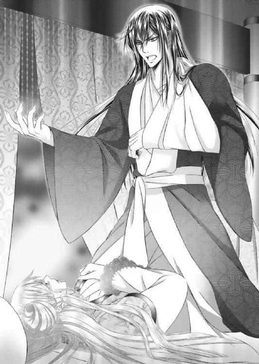
「生憎だな。俺はお前を迎えたときから、ロンバルディを他国などとは思っていない。我が領土と共に守るべき国だと思っている。それは父上や陽鳳、家臣たちにしても同じことだ。先ほど女官長が狂ったように叫んでいた言葉が、朱の国の民の思いのすべてだ。わからなかったのか」
「炎鳳」
荒々しい眼差しで射貫かれる。
「それに、お前はもう俺のものだ。この朱の国の皇子妃だ。それを、ロンバルディの内乱ごときを理由に離縁だと!? 何を馬鹿なことを──。それを言うなら、どうして今こそ力を貸してほしいと言わない」
無事な右手で片胸を掴まれ、愛凰はいっそう身を固くした。
視線を泳がせようものなら、「俺だけを見ろ」と言わんばかりに、胸を掴んだ手に力がこもる。
「そもそもお前が俺を受け入れた最初の理由はなんなんだ!? 俺なら何事が起こってもロンバルディを守ってくれる。そのための力を貸してくれる。いや、戦力を動かしてくれると信じたからじゃないのか！」
「っ!!」
炎鳳の激怒を一身に浴び、愛凰は奥歯を噛みしめる。
すべてを理解し、また承知の上で「結婚するかしないかを選べ」と言った炎鳳。
愛凰が「する」と決めたときの理由など、とうにお見通しだ。
だからこそ、彼は二人の間に愛が芽生えるまで、結ばれることを待った。
それなのに──。
愛凰は、ここへ来て炎鳳を激怒させてしまった。
自分とて二晩考えた結果だけに、戸惑いしか起こらない。
「──まあ、この変化は俺にとっては有り難い。愛凰がそれだけ俺個人を愛したという証だ。俺を思うがあまり、あえて離れて戦う覚悟を決めたのかと思えば、いっそう愛おしい限りだ」
すると、炎鳳が意味深な笑みを浮かべた。
以前のとは明らかに違う、愛凰のこの度の決意。これこそが炎鳳を愛したことで起こった変化、また結果であることは十分炎鳳にも伝わっているようだ。
「──だがな、愛凰。ときにはその潔さ、愛情深さが自身の立場を悪くする。強いては国をも駄目にする。はっきり言う。今ここで俺を、朱の国の戦力を利用できないようでは、アデリナ一派には勝てない。アデリナが味方につけた者たちは、洞窟道の存在を知らないとはいえ、自国の王女を敵国に貢げばいいと平気で口にするような連中だ。いずれ我が身可愛さから、ミローネに国を売ることだって考えられる者たちだ」
しかし、愛凰は炎鳳から真っ直ぐに見下ろされて、いまだ残る甘さを指摘された。
と同時に、敵を見誤るな。アデリナだけがお前に向かう敵ではない。もっと他にもいるぞと、改めて指摘をされる。
「何をどうしたところで、我が身の保身に走った者が政を握れば国は崩壊する。ミローネが攻め入るまでもなく、ロンバルディは自滅の道をたどるだろう。それとも何か？ 実はそれが狙い目か？」
「......え？」
「我が身を省みずに他国へ嫁いだお前を亡命者だと。国を捨てた裏切り者だと罵る者たちが、いずれ滅びることを願って、アデリナに王位を譲り国を任せるのか？ それなら俺は止めないぞ。むしろ、高みの見物で見届けてやる。お前と一緒に、心から笑いながらな」
愉快そうに口角を上げた炎鳳の笑みは、アデリナのそれより遥かに悪そうなものだった。
ただ、アデリナには狂気にも似た得体の知れなさを覚えたが、炎鳳にはそれがない。
単純に、やられたことはやり返す。善には善を、悪には悪をといった具合の悪だ。
「炎鳳......」
「わかったか、愛凰。俺はお前が思うほど、お人好しではない。我が身に向けて矢を放った相手を黙って許すような情など、ひとかけらだって持ってはいない。むしろ、こんなことでお前を失うことになったら、怒りのすべての矛先をロンバルディへ向けるだろう。アデリナが何をどう画策しようが、この手でロンバルディを火の海にしてやる。それこそお前が俺の側から離れぬように。帰れる場所がないようにな」
しかし、さも当たり前のように言い放つ炎鳳の恐ろしいところは、実際に動かせる屈強な軍隊を持っていること。
自ら兵を引き、先陣を切って戦えること。
何より、朱の国そのものにロンバルディにはない様々な備えがあり、それは愛凰が知らないだけでまだいろいろなものがありそうな気がすること。
すべてを含めて、今ここで言ったことが号令一つで実行可能なことだ。
「お前はここへ来て、平和を維持する手段が一つにあらずということを知った。ときには守るべきものを守るために戦うことが必要だ、力や強さが必要だと学んだと言った」
炎鳳は愛凰の長衣の合わせに手をかけると、胸元を開いた。
「ならば、今こそ知り得た力を使え。俺は、そして朱の国は、お前が命がけで得た見方であると同時に戦力だ。これはロンバルディ王が、朱皇帝がお前に与えたものじゃない。朱愛凰、ブランシュ・ビエラが自らの手で掴み得たものだ。お前自身にしか使えない人力なんだ」
「......っ」
今度は直に乳房を掴み、ニヤリと笑う。
──熱い。
「さあ。この胸の中にある本心を、できれば野心を見せてみろ。こうなった今、お前は故郷をどうしたい？ 女王になるべく生まれ育った国をどうしたい？」
高鳴る鼓動が、緊張なのか恐怖なのかわからない。
もしかしたら、感じたことがなかっただけで、これも高揚や興奮なのかもしれない。
愛凰は胸を探る炎鳳の手を両手で掴んだ。
「──争いのない、けれどこれまでとは違った強さを持つ平和な国にしたいです」
「そのためにはどうするべきだと思う」
「力を......。まずは私にロンバルディを一つにするための力を貸してください。国王亡きあと、王位継承権で国が二分するなど愚かなこと。王妃様には身を以て、それを知ってもらわねばなりません。朱の国の皇子、我が夫に矢を放った大罪と共に──」
炎鳳の助言を素直に受け入れ、まずは自分が力を得ることを選択した。
そもそもアデリナが暴挙に出ているのは、城内で味方をとなる者たちを付けたからだ。
ならば、炎鳳が言うように、まずはそれ以上の味方を付けなければ対等な話さえできないだろう。
力で押してくる者に、言葉で和解を求めたところで、聞く耳はない。
せめて話を聞かせるためにも、威嚇できるだけの力は不可欠だ。
言われてみれば確かにそうだ。
愛凰は、争いたくない、誰の血も流したくないからこそ、炎鳳と朱の国に力を求めることにした。
そうでなければ、アデリナには勝てない。
自分たちを謀るばかりか矢を向けた、炎鳳を傷つけた償いもさせられないからだ。
「よし──。いい目つきだ。それでこそ朱の国の皇子妃にして、次期朱皇帝の妻。鳳凰皇后だ」
今一度戦う決意をした愛凰に、炎鳳はとても満足そうだった。
一度はきつく掴んだ乳房をやんわりと揉むと、そのまま前屈みになり唇を寄せてくる。
（炎鳳......）
愛凰は肩の傷に触れないようにしながら、炎鳳の頬を両手で包んだ。
そっと唇を合わせる。
（──私の炎鳳）
数日続いた緊張や恐怖、また新たに芽生えた興奮が嘘のように静まっていく。
「愛凰」
炎鳳が長衣を更に乱しにかかるも、落ち着いて「駄目です」と制することができた。
しかし、こんなときだというのに肌と肌が少し触れただけ、炎鳳が自分を求めてくれたことに安堵しているのも、また確かだ。
「少しだけだ。俺は愛凰を抱きたくて、愛凰に抱かれたくて目を覚ましたんだ」
先ほどの悪い顔とは打って変わり、その目も口調も悪戯な少年のようだ。
「でも、傷に障ったら」
「病み上がりに突きつけられた、離縁の衝撃に勝る心の傷はないと思うが」
「──っ。ごめんなさい」
わざとらしく拗ねて見せるが、これが炎鳳の本心だろう。
愛凰は猛省するしかない。
「ならば、癒やせ。俺の傷をお前の愛で塞げ」
炎鳳は愛凰の上から身体をずらすと、隣りへ仰向けになった。
自由の利く右手で抱き寄せ、腕枕のような体勢から愛凰のこめかみ、金糸へと唇を寄せていく。
「そして二度と口にするな。俺の元から離れるなどと言ったら、ただではおかない」
外耳に唇が触れると同時に、切なげに響いた。
よかれと思った判断が、ときとして伴侶や周りを傷つける。
だが、立場を逆にして考えるなら、愛凰も同じことを思うだろう。
争いから引き離すために別れるぐらいなら、一緒に戦ってほしい。俺と国に命を預けてほしいと言われるほうが、どれほど嬉しいかわからない。
愛凰が華羽を連れて国を出たのは、それ事態が自分にできるミローネ軍への最大の攻撃であり、防御であると思っていたからだ。
あのとき、「お前たちだけでも朱の国へ亡命しろ」と言われたら、決して「はい」とは言わなかった。
それをするぐらいなら自ら剣を持ち、弓を引き、ミローネ軍と戦うことを選んでいる。
「わかったか」
「はい......」
ただ、愛凰はこんなことになってしまったが、炎鳳の元へ来てよかったと心から思っていた。
炎鳳を始めとする朱家、朱の国の持つ力強さは単に武力にのみ作られているものではない。
極力戦いを避けるために施された万全の構えであり、ときには自ら立ち上がる勇気と汚れる覚悟を形にしたものだ。
（炎鳳。私はあなたになら殺されても本望です。この先何があっても、あなたを傷つけ、裏切るぐらいなら、そんな私はいないほうがいい）
愛凰は、マグマのような熱さが心の奥底から湧き起こるのを止められなかった。
自らも炎鳳の唇を求め、抱きしめる。
「愛凰」
「炎鳳」
すぐにでも次の行動に移らなければならないことは、わかっていた。
それでも五分だけ、三分だけでもこうして抱き合い、口づけたいと思う。
彼の温もりを感じていたい──と。
「それにしてもロンバルディは、アデリナは命拾いをしたな」
それでも現実は苛酷だ。
炎鳳の眼差しが愛凰からロンバルディへ向けられるまでに、三分もなかったと思う。
「......？」
「愛凰が自ら戦うと言わなければ、俺が先陣を切っていた。間違いなく一夜のうちに、殲滅していただろうからな──」
愛凰から腕を外して、床から身を起こす。
窓の外に視線を向けた炎鳳の目に、新たな鳩の姿が映った。
炎鳳の伝書鳩に続き、ロンバルディ国へ送っていた密偵による続報のため、鳳凰城には激震が走った。
「──ミローネ軍の一個大隊がロンバルディ城内に入った!? 国へ入っただけでなく、城内へ入ったのか!?」
「はい。大隊はロンバルディの近隣諸国に潜んでいたものと思われます。そして、炎鳳様たちが脱出した直後には、移動し始めていたのでしょう。場合によっては、国王陛下の死去と同時にミローネ軍へ一報を入れた可能性もあります」
緊急事態とあり、広間には朱皇帝と一等公爵殿、軍師侯爵や親衛隊員などの側近たち、また陽鳳と華羽も集まっていた。
「──アデリナか？」
「あの女！ 始めからロンバルディをミローネに売る気だったのか!?」
「もしくは、アデリナ自身がミローネ人だったということだろうが......。国王や側近たちは、出生をきちんと調べなかったのか？」
親衛隊員たちが口々に論した。
炎鳳が撃たれ、ロンバルディ国から脱出を図って、かれこれ二日と半日が過ぎている。
これを行動が早いと取るか、適切と取るかによっても、考えが変わっていく。
「いや。そもそも大陸を旅するジプシーに故郷はあってないも当然だ。調べたところで、二十年以上も前のことだ。生まれた当時は南の国を移動していた。両親のいずれかも南の国の生まれだったと言われたら、それ以上調べるには無理がある。実際、南の国のいずれかに当時の滞在記録が残っていたとしても、個人の国籍までいちいち明確にするのは難しいしな」
通り抜けることのできる洞窟道があっても、間に聳える一山は大きい。
早馬で駆け抜ける二時間の距離の間には国境があり、必要最低限での交流のみと決めていた両国間では、今更だが情報が足りない。
密偵を送り込むにしても、把握できることは限られる。
何より王族と側近しか知り得ないであろうことでは、想像の範囲でしか話もできない。
「──うむ。それに、アデリナ王妃自身は、生まれ落ちた土地の国籍を登録しているだろうから、調べ尽くしたとしてもわかるまい。さすがにロンバルディ国も、ミローネ生まれを承知の上で、妃に迎えることはしないだろうしな」
「いや──。理由や経緯はどうあれ、ロンバルディ国はミローネ国軍に開城しました。もはや、王位継承権がどうこうと言っている場合ではないでしょう。愛凰様や華羽様には申し訳ないが、お二人のためにもここは洞窟道を塞ぎ、永久に両国の関係を断ち切るのが一番の良策なのでは!?」
あらゆる事態を想定し、洞窟道の閉鎖を口にしたのは軍師侯爵だった。
そもそもの務めは進軍のための策を練ることだが、こうも見えない相手が敵では、どうしようもないと判断したのだろう。
何より兵の命も守らねばならない。
こればかりは致し方がないと、朱皇帝も頷きかけた。
と、広間の扉が開いたのはそのときだ。
「おいおい。泣く子も黙る鳳凰軍の軍師ともあろう者が、主を負傷させた敵も討たず野放しか。いつからそんなに優しくなった。それとも逃げ腰って言ったほうが正しいのか？」
「炎鳳様！」
朱の軍服と武具に身を包んだ炎鳳の眼光は、左腕を吊りながらも健在だ。
むしろ、手負いの分だけ荒々しく見える。
「それに、我が国の守護神、神々の山の鳳凰様が与えてくれた黄金の花嫁は、鬼神と化しても戦う気満々だぞ。少なくともアデリナに詫びの一つもさせなければ、朱皇子妃として納得できないとな──」
しかも、そんな炎鳳のあとに続いて入室したのは、紅蓮の膝丈の長衣にズボンとブーツ、また武具を合わせた愛凰。
長い金糸は一つに纏められ、腰には剣を。そして肩からは弓矢を装備し、出陣に備えた女戦士そのものだ。
「愛凰様！ なんというお姿を」
「まさか、このようなときにロンバルディへ赴く気ではないでしょうね!?」
その姿に悲鳴を上げたのは、女官長たち。
だが、そんな彼女たちに対して、愛凰はニコリと微笑んだ。
「行きます。彼女が何を考え、またどうしてこのタイミングでミローネ軍が入城したのかはわかりません。始めからすべて彼女の企みなのか、それとも他にミローネと通じていた者が既に居たのか......。誰が味方で敵なのかさえ、ここに居ては何もわからない状態です」
朱皇帝を始めとする男たちも、その姿を一心に見つめる。
「ただ──。私は朱炎鳳の妻として、朱皇家の人間として、次期皇帝を生死の境に追いやったアデリナとその一派を、このままにしておくことはできません。また、ロンバルディ国王女、王家に生まれた者として、城内にまで入り込んだミローネ軍をこのままにしておくこともできません。先陣を切って、ロンバルディ国へ参ります」
揺るぎない愛凰の決意と言葉に、女官長は目眩を起こし、陽鳳と華羽は絶句した。
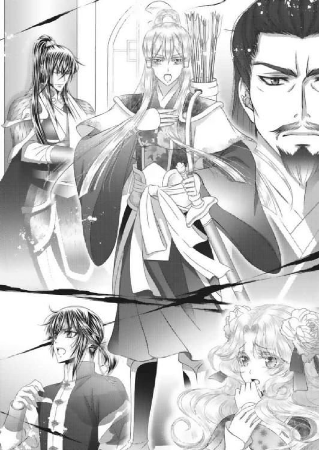
「愛凰」
「姉様」
しかも、夫たる炎鳳に止めるつもりが全くない。
朱皇帝は、今しばらく様子を伺うように、話を聞くだけに徹している。
「わかったか、軍師侯爵。これが我が妻、次期鳳凰皇后の曲がりなき決意だ。これを聞いても尚、お前は洞窟道を閉鎖し、何事もなかったかのように振る舞うのか？ たったの一太刀もアデリナ王妃に、そしてミローネ軍に浴びせぬまま事なかれで済ますのか？」
「──申し訳ございません！ 愛凰様がそれほどのお覚悟ならば、私も千の兵を引いて共に先陣を切りましょう」
炎鳳に突かれ、愛凰に煽られ、軍師侯爵までもが熱くなる。
当然、親衛隊の士気が上がる。
「炎鳳様！ ぜひとも我が一個小隊に名誉挽回の機会を！ 先陣にお加えください!!」
そこへ女官長の息子で、近衛隊の小隊長まで名乗りを上げたものだから、華羽が両目を見開いた。
「私も！ 私も行く！」
「は、華羽様！」
何をするにしても、一度や二度では懲りないらしい。
だが、すでに愛凰と共に命をかけている華羽だけに、ここは頑として引かないだろうと、誰もが思った。
「それは駄目よ。華羽」
華羽を止めたのは、愛凰だった。
「どうして！」
「あなたはロンバルディ国王家の正当な血を継ぐ者として、今だけは命の危険を晒してはいけないの。陽鳳との約束がどうこうという前に、あなたが生きていることが、私にとっても一番の武器であり、切り札なのよ」
いつになく厳しい眼差しで華羽を見据えた。
「っ......姉様」
ここまではっきり言われると、華羽も二の句が継げなくなる。
「これは命令です。あなたはここにいて、陽鳳の側にいて、私からの吉報を待ちなさい」
「え!? 俺も留守番なのかよ、炎鳳！」
だが、思いかげないとばっちりを受けてしまい、陽鳳が声を上げる。
「愛凰と俺が〝留守を守れ〟と言う限り、その下にいるお前に逆らう余地はないな」
こんなときばかり権力順を誇示する炎鳳にむくれながら、陽鳳が最後の手段とばかりに朱皇帝を見た。
「父上！」
「お前まで行ったら、華羽が気の毒だ。一緒に留守番をしておけ」
「ええっ！」
完全に留守番を言いつけられた。
仕方のないこととはいえ、陽鳳にとっては衝撃だ。
怒っていいのか、ごねていいのか。しかし、華羽のことを考えたら、おとなしく残るしかないのもわかる。
すると、それを見ていた華羽が陽鳳の腕を掴む。
「......だ、大丈夫よ、陽鳳。華羽は大丈夫だから、行ってもいいよ」
「華羽......」
「華羽は一人でも待てるから。愛凰姉様と炎鳳と、そして、どうかロンバルディを守って。そして、必ずみんなで元気に帰ってきて！ 華羽は、お祈りしてる。ロンバルディ国王女として。朱の国第二皇子・陽鳳のお嫁さんとして」
「──っ」
思いがけないことが立て続けに起こる。
たが、陽鳳にとってはこの華羽の言葉の中に、これまでにはなかった気付きを見いだした。
華羽の手を掴むと、一度呼吸を整える。
そして、
「わかった。留守番する」
「陽鳳!?」
「華羽に気を遣ったわけじゃない。俺が一緒に行くよりも、きっと俺がここに居たほうが炎鳳が心置きなく戦える。何が起こるかわからないときに、皇子がのこのこ二人揃って出て行くことが、どれほど馬鹿な行動なのか、思い出した」
自ら成すべきことは出陣ではないと口にした。
「俺は第二皇子だ。炎鳳に何かがあったとき、この国を守るのは俺だ。そういう俺がここでドンと構えているほうが、きっと炎鳳は安心だと思う。華羽がここに残ることが愛凰の安心になり、また武器や切り札になるように──」
「陽鳳」
これに一番驚いたのは、誰あろう炎鳳だ。
いつでもどこでもくっついてきた。ときには自ら先陣を切った。
そんな陽鳳が、あえて身を引いた。待機という、新たな役割の存在に気付き、そして実行しようとしているのだ。
「だいたい、どんなに軍師侯爵が張りきったところで、一千の兵を引いて洞窟道なんか通ったら、道そのものが塞がっちまうよ。いざってときに逃げるが勝ちさえできなくなる」
しかも、感情的な発言が多いわりに、きちんと現実も見ている。
言われてみればそうだ──という事実に、軍師侯爵が親衛隊と共に頬を赤らめる。
「だから、俺は後続の部隊と小回りが利きそうな船団を用意して、ここで待機する。相手が何を企み、仕掛けてくるかもわからないだけに、逃げ道だけは絶対確保だからな」
この陽鳳の発言には、朱皇帝も満足そうだ。
炎鳳など、「退路まで考えられるようになれば、立派なものだ」と言って、陽鳳の頭を撫でた。
さすがにこれは恥ずかしそうだったが、いやな顔はしていない。
「もはや、相手はロンバルディではなく、ミローネと考えてもいいはずだ。油断するなよ、炎鳳。愛凰も」
「ありがとう」
この後、愛凰と炎鳳を中心とした鳳凰軍は、密偵からの定期報告を受けながら、深夜のロンバルディ国入りのまでのひとときを、ありとあらゆる想定とまたその準備に費やした。
「カイザー！ 俺の代わりに炎鳳と愛凰に付いていけ。そして、何がなんでも守護してくれ！」
窓の外では漆黒の羽根を広げたカイザーが、勇ましい鳴き声を響かせた。
＊＊＊
出立までに届いた情報をまとめると、ロンバルディ国王の棺は昨日のうちに前王妃の隣りに埋葬され、ミローネ軍の一個大隊が到着したのは本日の昼。
その時点で王女派を主張した将軍一派は再逮捕、城内のどこかに幽閉されており、炎鳳に状況を知らせていたロンバルディ親衛隊員からの鳩も、朝を最後に飛んでこなくなっていた。
その後、伝書鳩を飛ばして情報を送り続けたのは、国境からロンバルディ側の洞窟道の出入り口に待機させていた密偵たち。
決して深入りはするなと伝えてあるため、細部の詳細はわからない。
だが、夕刻からミローネ軍を歓迎する夜食会が開かれたこと、ミローネ軍の接客に積極的に当たったのがアデリナ王妃だったことだけは明らかになっている。
「およそ二百名が飲めや歌えの大宴会か。いい気なものだな」
「やはり、ミローネ軍を呼び込んだのはアデリナ王妃。もとから通じていたと思うのが一番手っ取り早いでしょうか」
二個小隊ほどで先陣を切った愛凰たちは、洞窟道の出入り口で待機していた。
密偵の報告を待ちながら、軍師侯爵と親衛隊長が溜息を漏らす。
「安易な思い込みは鬼門です。彼女に関してだけは、本人に会って事実を聞き出すまで、下手な想像が徒になるような気がいたします」
「──だそうだ。軍師侯爵」
緊張感が漂う中、苦笑しか浮かばない愛凰。
それに対し、開き直ったとしか思えない炎鳳は、かなりリラックスしている。
「〝女の勘〟という奴ですか？ 愛凰様」
「さあ。どうでしょう。私は見たまま聞いたままの印象としか......。勘は働かないタイプなのかもしれません。ただ、アデリナ王妃が大隊の入城を許すだけでなく、自ら接客に当たり、踊りまで披露したというのが引っかかります」
「元は踊り子だったからこそ......、ではなく？」
「はい。彼女は城勤めになってから、一度として人前では踊ったことがありません。私も見たことがないくらいですし、唯一踊っていたと聞いたのも、床に伏せる父の慰めのみだったようです......」
愛凰は明かりと音楽の絶えないロンバルディ城を見つめて、何度となく首を傾げた。
自分が知る限り、アデリナは何をするにも自尊心の高い女性だ。それは踊り一つにも現れており、ジプシーダンサーとして踊るときはプロとして踊る。
だが、それに無関係な城勤めでは、宴などの余興でも舞うことはなかった。
それだけに、この報告はとても引っかかりを覚えたのだ。
「そうですか」
「私らには永遠にわかりそうにない女心というものですかな」
愛凰が悩むぐらいだ。
とうに初老を超えた軍師侯爵と親衛隊長では、まともに会って話したこともない女の思惑など、想像もできない。
そんなとき、近衛小隊長が炎鳳の側に寄った。
「それより炎鳳様。城内へ入ったミローネ軍は、今だ洞窟道に近づいたことが一度もないそうですが」
「ああ。知っているのか、知らずにいるのか──」
愛凰にしても、これは気がかりのひとつだった。
「知っているなら、当軍を待ち受けている可能性もあるが、知らずにいるならロンバルディ側が洞窟道の秘密だけは守っているということですかね？」
「何かの際の切り札。逃亡路の一つだと言うことは、ロンバルディ側にとっても変わらないだろうからな」
「洞窟道は、諸刃の剣です。やはり、行き来をするには、まだ時代が早かったのかも知れません」
今一度、洞窟道の出入り口からロンバルディ城を見る。
すると、微かに聞こえていた遊興用の音楽が止った。
「大宴会が終わったか──。愛凰」
「はい。では、これより城内へ繋がる地下道へ。父がどこまでアデリナに話をしているかが心配ですが」
辺りはすでに暗闇に包まれていた。
厚い雲が空を覆い、星や月の光さえ封じ込めていた。
洞窟道から森林を抜けた愛凰たち一行は、真っ直ぐにロンバルディ城を目指すことなく迂回した。
裏庭に置かれた石造りのガゼボドーム。
その中央にはアラベスク模様が彫られたマンホールが存在するが、これはただの飾り。側にあるオーナメントで塞がれた、城の地下道への出入り口から目をそらすためにあえて作られたものだ。
「我々が先へ進みますので、愛凰様は炎鳳様たちと少し距離を置いて」
今となっては、洞窟道以上に王族のみに受け継がれてきた城内からの非常口。
地下道は王族が暮らす奥間の隠し部屋に続いており、出入り口は狭いが中に行けば道幅も広がり、移動はスムーズだ。
とはいえ、誰が何を仕掛けているかはわからない。
愛凰が危惧したように、亡き国王がどこまで何をアデリナに伝えているのかがわからない限り、城内に愛凰だけが知り、また安心できる場所はない。
「しかし」
「ここは従え。彼らのほうが慣れている」
「──はい」
愛凰は、他国との争いの中で、幾度も最前線を進んできた親衛隊に先を任せるしかなかった。
ここで自分が足手まといになるわけにはいかない。
しかし、地下道を進み、隠し部屋まで来たときだ。
「っ!! 炎鳳様！ 愛凰様！」
「どうした!?」
女王派を宣言、指示していた者たち数十名が、両手両足を拘束され、猿轡をされた姿で隠し部屋の中に閉じ込められていた。
「これはいったい」
「将軍！ 幽閉って、牢へ入れられたわけではなかったのですか!?」
敵の待ち伏せを最も警戒しなければいけない一室に、人質に取られていても不思議のない将軍たちがいた。
愛凰たちは、彼らの拘束を解きながらも、胸騒ぎが止まらない。
誰が、なんのためにこんなことを!? と、緊張と警戒心は高まるばかりだ。
「ブランシュ様。大公が我々を裏切りました！ 王妃側についてミローネ軍を城内へ！」
「このままでは、ロンバルディがミローネ軍に！」
「王妃が最後に残した言葉がおかしくて......」
「ここで助けがくるのを待てと！」
しかし、困惑しているのは、捕らえられた将軍たちもまた同じだった。
口々に目にしたこと、耳にしたことを話すが、どうも話が一つにまとまらない。
「中立を守っていた大公が王妃側に着いたか」
「ここで待て？ やはり、我々の進入経路を始めから読んでいたということか」
「しかし、助けを待てとは──!?」
「なんだ今の悲鳴は!?」
「──男のものか？」
炎鳳たちが確認を取り合うも、部屋の奥からは恐怖に駆られた悲鳴が聞こえた。
愛凰が意を決して、扉の向こうへ走って行く。
「愛凰！ 待て、愛凰!!」
全開にされた扉──隠し部屋の向こうには、王の寝室があった。
すでに主を亡くした一室はシンと静まりかえっており、微かに悲鳴が聞こえてくるのは続き部屋。前回、炎鳳たちが通された棺の間だ。
「炎鳳様！ 何か臭いませんか？」
「これは......、香油？ 灯油？」
だが、愛凰を追いかけようとした炎鳳を、親衛隊員が引き留める。
炎鳳が今一度立ち止まり、辺りを伺う。
この部屋には何もないが、確かにどこからともなく油のような微香がする。
「お前たちは、この者たちを全員連れていったん外へ出ろ！ 俺は愛凰を連れて行く！」
「はっ!!」
こんなときだけに、用心するにこしたことはない。炎鳳は指示を出すと同時に、愛凰を追って棺の間へ飛び込んだ。
すると、目の前には愕然としたまま立ち尽くす愛凰。
そして、自ら剣を手にして、床へ俯せる大公の背を射すアデリナの姿があった。
「どういうことだ......。貴様......。養父を裏切る気か!?」
「なんのことかしら？ お前のほうこそロンバルディ国王への忠義、恩義も忘れてミローネ軍を手引きするなど、いい度胸。その上、この私に余興で踊れ？ これよりお前の主はこのわしだ？ ロンバルディは我が国だなどと、いい年をして寝ぼけたことを言い出すから、こういうことになるのです。恥知らず！」
「う──っ......っ」
「大公!! アデリナ！」
大公の絶命と共に、愛凰が叫んだ。
「これは、どういうことなの？ あなたがミローネの手先ではなかったの!?」
「失礼ね。以前よりミローネ国から賄賂を受け取り、密偵を務め、王の死去と同時に狼による王女の暗殺まで実行したのは、獅子身中の虫であったこの大公。私は王からあなたたちへ王座を引き継ぐ者として、最初で最後の仕事をしたまでのこと」
手にした剣を放ると、アデリナが振り返る。
薄絹の衣装にきらびやかな装飾を纏った姿は、妖艶な踊り子そのものだ。
しかし、その目は先日会ったときよりしっかりしていて、精悍ささえ感じる。
まさに女王の風格だ。
「引き継ぎ......仕事!?」
アデリナは戸惑う愛凰に笑ってみせた。
胸に手を当て、改めて頭も下げる。
「私の名はアデリナ・アテンシオ。元は大陸の西南、海側に位置していた小国の王女」
「アテンシオ!?」
「あなたが知らなくても仕方がない。アテンシオは、私が幼い頃に隣国・ミローネ軍の襲撃を受けて、一夜にして消滅してしまった。小国とは名ばかりの漁師町みたいなものだから、昔からの地図だけを見ても国とは認識しがたい。それこそ昔からミローネ国の領土だと思う者も少なくなかったようだから──」
王が、彼女の本当の生い立ちを聞いていたかどうかはわからない。
だが、困惑し続ける愛凰には、すべてを明かしたかったのだろうか？
アデリナは視線を逸らすも、語り続けた。
「ミローネ軍の夜襲は、凄まじいものだった。わずか数時間で火の手が上がり、燃え広がって、何もかもがなくなった。ミローネは新たな軍港を作りたいがためだけに、アテンシオを火の海にしたの。ただ、両親の機転で私だけは小舟に乗せられて海へ流された。当時の潮の流れもあり、半日ほどの漂流で他国の海岸に着いて、そしてジプシーたちに拾われた」
そうして、月の明かりさえ届かない夜空を見つめて、ゆっくりと窓際へ歩き出す。
「私は一命を取り留め、その後は踊り子として育ったわ。一国の王女であったことなど、なかったことにされて──。それでもジプシーたちは、私に優しく、とてもよくしてくれた。皮肉なもので、彼らもミローネ軍に国を奪われたか、身内を亡くされた者たちだったから、同情や仲間意識も強かったのかも......」
愛凰と炎鳳は、彼女の本心、思惑を知るために、今だけは黙って話を聞き続けた。
しかし、炎鳳の視線は部屋の至る所を確認していく。
気になる微香は、この部屋からではないようだが、一瞬たりとも油断がならない。
「でも、心の奥底で誰もが安住の地を求めていた。全員が生まれながらの根無し草ではないから、いつかどこかに落ち着きたいという希望や夢があった。だから、行く先々で一人、また一人と減っていった。そうして私もロンバルディにたどり着いて根を下ろした。ここは素晴らしい国だわ。私はすぐに、どんなに貧しくてもここで生活し、家族を持って、骨を埋めたいと思った。そんなときに城へ上げられて。最初は天にも舞うような気持ちだった」
すると、アデリナの美貌に光が差し始めた。
月を覆っていた厚い雲が、風で流されていったのだ。
「ただ......、そんな矢先にミローネ軍が。しかも、一度ならず二度までも──。穏やかな気持ちではいられなかった。私は二度も国を奪われたくなかった。ロンバルディだけは絶対に平和を愛する反戦の国であり続けてほしかったし、ようやくできた家族だけは命がけで守ると決めた。もう二度と、小舟に乗せられて逃がされるだけの存在にはならないと、自分自身に誓ったの」
「ならばなぜ、このようなことを！」
しかし、愛凰の顔色はいっこうに優れない。
彼女の話が事実なら、尚更この争いを引き起こした意味も目的もわからないからだ。
「王もあなたたちも人がよすぎる。疑うことを知らなすぎるからよ」
アデリナがゆっくりと振り返る。
「どんなに尽くしたところで、人が己の欲望のみに従い、平気で裏切ることのできる生き物だという認識が甘すぎる。そして、そんな人間を懐柔し、利用しながら付け入る隙を作っていくのがミローネ国のやり方。それはジプシー仲間の体験や、実際回った国からもありありとわかることだった」
言い方こそ違えど、アデリナの言葉は炎鳳のそれとよく似ていた。
確かに「甘い」と言われたところで、愛凰には返す言葉がない。
それは今日の愛凰が、昨日までの自分を振り返ってもそう思う。
たとえ、それが正義だと信じて貫いてきたとしても、結果はこれだ。
だからこそ、自ら剣を持ち挑むことになったのだから。
「──私は、最初で最後の願いとして、王に王位継承権を強請った。そして、最初で最後と決めた王の仕事を実行した。あなたに、そして朱の国に刃を向けることになってしまったけけれど。そうでもしなければ、簡単に寝返る者がどこにいるのかがわからなかった。大公のように、常に誰かの陰で動く狡賢い者はあぶり出せなかった。私自身が王に、そして陰を作れる存在そのものにならなければ、永遠に姿を見せないから──」
「アデリナ王妃」
「ただ、生まれながらに平和な国で、歪みなく育ったあなたたちが羨ましくて、憎らしかったのは事実。同じように王家に生まれ育って、こんなにも違うのはどうしてなのかしら？ すべては国の弱さなのか、運なのか」
アデリナがふらりと歩き、すでに棺が片付けられた祭壇へ向かう。
次の瞬間、炎鳳の視線に祭壇用の行灯が目に付いた。
「それでも、なれるものなら継母でもいい。あなたやローズの母親になりたかった。お妃様ではなく、母様と呼ばれてみたかった。でも、私が目的を忘れてただの女の幸せを選べば、国を、両親を奪ったミローネに一太刀さえ与えられない。この国を、王家を裏切る者たちを一掃できない......。それより何より、本当に守りたいものが守れず、自身への誓いも果たせない！」
愛凰──と、名を呼ぶ間もなく、炎鳳は愛凰の腕を掴み、部屋の外へ向かった。
アデリナは行灯を一つ手に取り、それを敷き詰められた絨毯の上へ倒す。
数秒も経たないうちに、炎が上がった。
「なのに......、不思議ね。今となっては目的を達成した安堵より、国王様の側に行けることが一番嬉しい。国王様は誉めてくださるかしら？ それとも、もう──。ビエラ王妃様と再会し、本当の安らぎを得ているのかしら......」
「アデリナ王妃っ！」
行灯周辺の絨毯には、すでに油がまかれて、染みこまされていたのだろう。
愛凰が悲鳴を上げたときには、一気に炎が燃え広がった。
「アデリナ王妃っ！ 王妃っ！」
「駄目だ、愛凰!! 火の手が強すぎる」
悲鳴を上げるも、今だけは脱出が先だ。炎鳳に腕を引かれるまま、棺の間を飛び出し、城外への走る。
「──!!」
途中の大広間。宴会場には、ミローネ軍の兵士たち二百名近くが、酔いつぶれて眠っていた。
何をどうしたところで、二人で彼ら全員を救える時間はない。
城内に残っていた者たちにしても、突然の火事に悲鳴を上げて逃げ惑うばかりだ。
「炎鳳。起こすだけ起こしましょう」
「なっ、愛凰！」
だからといって、このまま見過ごすことが愛凰にはできなかった。
ミローネ軍、一個大隊を炎上する城ごと殲滅。これが女王・アデリナが最後に成し遂げた仕事であり、アテンシオ王女の仇討ちであることはわかる。
「起きなさい！ 火事よ！ 起きて城から逃げなさい」
しかし、ここまで無力で無防備な状態の人間を、敵兵だからと言って、どうしてそのままにできるだろう。愛凰は、軍服の上着や階級章を見渡し、上層の男たちを揺すり起こしては、次々とその顔に平手打ちを食らわしていった。
「起きなさい!!」
「あん......だとぉ──痛っ!!」
「早く！」
「うっ、痛ってな！」
立て続けに四人、五人を打ち付けていく。
炎鳳もすぐに同じことをした。手負いのため、相手の身体をいちいち起こしてもいられない。近いところから蹴り起こしていく。
「あなたは隊長ではないのですか!? 部下を全員焼死させる気ですか！」
そうして愛凰が、もっとも階級の高そうな男に往復で平手を食らわせた。
すでに奥間から炎が広がり、煙も流れてくる。
「何を......火事だと!? ぜっ、全員起きろ！ 火事だ！ とにかく全員起きて、城外へ出ろ!!」
気がついた一人が二人を起こし、二人が四人を起こすうちに、ミローネ軍兵士たちの半分が目を覚ます。
「愛凰！ もういいだろう。あとは本人たちに任せろ！ 奴らも軍人だ。自分の命ぐらい自分で守れる」
「はい！」
再び炎鳳が愛凰の手を取り、大広間をあとにする。
「外だ！」
「はい!!」
ようやく正面玄関から飛び出すと、愛凰の金糸を強い夜風が巻き上げた。
「炎鳳様！」
「愛凰様、ご無事で！」
すでに城内中に炎が回っている。
城下町からも民が集まり、門の外で騒然となっていた。
「大変です、炎鳳様！ 城内の炎が、城壁内の木々に移り始めました！」
「このままの風向きでは、城下町にも広がる恐れがあります！ 早急に消化をしないと！」
煌々と輝く空の月とは裏腹に、一気に雲を流した強風が愛凰たちの前に立ちはだかる。
「なんだと!?」
「なんということだ!!」
絶望的な報告に、脱出した将軍たちが膝を折る。
しかし、その肩を愛凰が掴む。
「将軍！ あなたは生き残っている城内の者たちと共に、城の門という門をすべて塞いで、その後は城外へ出て。城内から城外に流れる小川の水門もよ！」
「どういうことなのですか!? ブランシュ様」
突然の指示に、将軍は戸惑いながらも立ち上がる。
「炎鳳！ 国境を越えて最初の水門を閉鎖。きっちり三時間後まで川を堰き止めて、その後はすぐに開放してください！」
「──川を!? そうか、わかった。お前たち、今すぐ第一水門を閉鎖しろ！ そこからきっちり三時間後に開門だ！」
「はっ!!」
炎鳳はすぐに意図を察したらしく、側にいた親衛隊員に命令を出す。
「ブランシュ様!?」
「これから洞窟道内にある湖を氾濫させて、ロンバルディ城壁内へ流し込みます。それでどれほどの消火ができるかどうかはわからないけど、一時的に大量の水が流れ込む。炎が城下町に移ることだけは防げるはずです」
愛凰がなおも説明を求める将軍たちに、消火方法を告げた。
「そんな──、簡単には！」
「もはや、人力だけで消火できる状況ではありません。簡単ではなくとも、他に方法がないのです！」
「しかし、それでは城が！」
「たとえ城が水没しても、民が無事なら国が滅ぶことはありません！ さ、早く！」
最後は怒気さえ含めて、声を荒らげる。
「──っ。わかりました！ 城壁内で食い止めるよう、全力を尽くします！」
ようやく納得したのか、将軍が部下と共に一斉に動いた。
炎鳳からすれば、「遅い」の一言だ。
こんなところでも、軍とは名ばかりだったことが伺い知れる。
鳳凰軍なら、上官に言われたことはすぐにやれ。お前の納得は必要ないと、罵倒が飛ぶだけではなく、首にしているところだ。
「愛凰。ここは危険だ。風上へ移動しよう」
そうこうしているうちに、城からミローネの兵士たちも続々と城から出てきた。
「はい。──あ、あなたたちも今すぐに城壁外へ逃げなさい！ これから消火します。洪水に飲まれたくなければ、今すぐ塀の外へ走りなさい！」
「洪水!?」
「火攻めのあとは水攻めか！」
「ぜっ、全員退却っ！ とにかく走れ！」
命からがら、千鳥足で逃げ出してきたミローネ兵士たちは、火事のあとに洪水と聞き、半ばパニック状態で走り出した。
それを見ながら、炎鳳が思わず眉を顰める。
「愛凰はどこまでお人好しなんだか」
「焼死体もいやですけど、二〇〇体もの水死体を片付けるほうがもっといやでしょう」
「ぷっ。ものは言い様だな」
「──ごめんなさい。甘いのはわかってます。でも、もしも彼らが生き延びて、再びこのロンバルディに刃を向けたときには、私が戦います。次は、全員容赦しませんから」
「わかった。そのときは一騎当千の俺が手を貸そう」
「炎鳳......っ」
それでも今はできる限りことをした。
愛凰は、再度炎鳳に手を引かれて、風上でもある山側へ移動した。
高台から燃えさかるロンバルディ城を明かりに、城地内を見守っていく。
「──炎鳳様。第一水門を閉鎖しました！ 開門は三時間後でよろしいのですか!?」
すぐさま動いた親衛隊員から、五分も経たずに報告が来る。
「いいのか、愛凰？ 様子を見ながら開門することも可能だぞ」
「はい。様子を見ながらでは間に合いません。最悪すべてが消火しきれずとも、城壁や正門、裏門、水門が壊れては意味がありません。炎の代わりに反乱水が城下町へ流れ込むだけです」
「わかった」
確認を取ると、炎鳳が目配せをし、その場から親衛隊員が走り去る。
片側の流れを止めたところで、湖の水がロンバルディ城地内を満たすまでには、それなりの時間がいる。
「──それで、どころから出てきたんだ？ 三時間という目安は」
愛凰の意図はすぐに理解したが、これだけが炎鳳にはわからなかった。
「城壁内の敷地面積と、見た限りですが、川の流れの速度から。あと、大まかではありますが、湖の面積や水量の検討が書庫でみつけた歴史書の中に書いてありました」
なるほど──と思うような答えだった。
「なんでも昔、朱の国の二代目皇帝様が、敵を罠にはめるのにわざと城内におびき寄せて水攻めを行って勝利したことがあると──。そして、その時代の鳳凰城の城壁内の敷地面積が、今のロンバルディ国城内の敷地とかなり近いのです。それで、当時に合わせて三時間と」
改めて言われると、炎鳳にも思い当たる節がある。
「あ......、三の刻の戦いってやつか。そう言われたら、祖父様が死ぬまで自慢してたな。父上には、そもそも水門を築いたのは初代だろうにと言われていたが......」
「でも、これこそが備えあれば──です。ロンバルディ城内の備えだけでは、決してできることではありません」
そうこうしている間に、洞窟道からカイザーが飛び出してきた。漆黒の若鷹が、ロンバルディ城の炎上を受けて、真っ赤な鳥に見える。その姿は、まるで火の鳥。鳳凰そのものだ。
「カイザーだわ」
「まるで水引役のようだな」
流れる小川の水がじわじわと増えてくる。
特に怒号のような水音もなく、静かに溢れて斜面を滑る。
そして、燃え上がるロンバルディ城の土台から、風下に広がる草木を消火する。
登り始めた朝日を受けて、一面がキラキラと輝く。摩訶不思議な光景だ。
「......。想像したより地味だな」
ただ、これを見た炎鳳がボソリと呟いた。
炎上したロンバルディ城を、洞窟道からの洪水が。それも濁流が呑み込むような状況を連想をしていたからだ。
「はい。──あ、三の刻の戦いは雨期！ 秋冬の今とはまるで水量が違ってるんだわ！」
愛凰もそれは同じだったようで、現実を見て初めて思い出した史実に漏れがあったことに気がついた。
それを聞いた炎鳳も、「ああ」と再び納得だ。
「でも、まあ。火は消えていってるからいいんじゃないのか？ この流れなら城壁や門を壊す心配もなさそうだし。逆に、三の刻と同じ状態だったら、焼けた城が倒壊して土石流化したかもしれない」
なんとも言えない適量だと、一応誉める炎鳳に、愛凰は両手で口元を押さえて「しまった」だ。
どうやら、炎上した城が水圧で倒壊することまでは、考えていなかったらしい。
いずれにしても、不幸中の幸いだ。
「本当に。そう考えたら、絶妙な氾濫具合ですね。これなら城の再建も楽でしょうし。何より必要最低限の被害で済んでるって、奇跡的な光景だと思います」
側で聞いていた近衛小隊長も、感心しきりでロンバルディ城から広がる城地内を見つめていた。
城の上部炎上は、もはや燃え尽きるのを待つしかない状況だ。
だが、一番食い止めたかった草木への燃え広がり、城下町の死守に関しては、強風が溢れ出た水の流れを加速したこともあり、城壁にたどり着いた頃には消火された。
「うむ。素晴らしい危機管理能力です。しかも、知恵だけでなく、強運をも持ち合わせているとは──。のう、親衛隊長」
「はい。軍師侯爵様。さすがは鳳凰神が、我が国に与えてくださった黄金の姫様。また、国の者たちが騒ぐことでしょうな」
ここぞとばかりに話す二人に、炎鳳が吹き出しそうになる。
愛凰は、笑うに笑えないが、炎鳳が「なあ！」と周りに声をかけると、結果だけを賞賛する歓声が一気に上がった。
そして、それは城壁の外でも同じだ。
「燃えさかる炎が消えていく」
「さっきの火の鳥はなんだ!? 神の使いか!?」
「ブランシュ様が奇跡を起こしてくださったそうだ！」
「それだけじゃない。本当はロンバルディを救うために、地上の壁を越えてくださった。そして、自ら援軍を求め、ミローネ軍を呼び込んだ反逆者たちと共に撃退してくださったんだ！」
「万歳！ ブランシュ様、万歳!!」
「炎を操り、水をも操る──。ブランシュ様こそがロンバルディ国の守護神だ！」
ただ、物事を都合の良いほうへ解釈し、また神がかり的にねじ曲げていくご都合主義は、意外にも朱の国の者たちと大差がなかった。
「......」
城外から湧き起こる大歓声とおかしな叫び声に、愛凰は自分がいかに現実を知らずに育って来たかを知り、改めて大反省をしてしまう。
「まあ──。どこでも国民はあんなもんだろう」
それでも、確かに自分は強運なのだろうと、愛凰は思った。
「だが、油断がならないのは、アデリナ王妃が身を以て示してくれた。俺たちはその姿から、学ぶべきものは学ばなければならない。彼女への供養のためにも。感謝を形にするためにも──」
炎鳳から向けられた笑顔は、登り始めた太陽よりもまぶしいものだった。
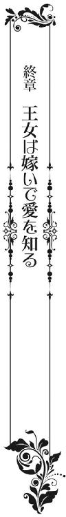
思いも寄らないところで、一個大隊を退却に追い込まれたミローネ国が、改めて大隊を送り込んでくることはなかった。
「ロンバルディ国には火の鳥の化身がいる！ 炎と水を操る神の子がいる！」
「進軍した我々にさえ、神がお慈悲をくださった！」
「いやです！ 我々はロンバルディ国にだけは進軍しません！」
「そうだ！ 命の恩人だ！」
そもそも、ここ数年の戦いは、思想や信仰の相違で起こった、過去にはない戦いだ。
そこへ、敵軍にさえ救いの手を差し伸べた愛凰に対し、変な誤解が生じたことから、兵士たちが戦意喪失してしまった。
しかも、ロンバルディ国が城を炎上させてまでミローネ国の一個大隊を撃退したことが、隣国の王たちの闘争心を蘇らせた。今一度、平和を望む国々が一丸となって結束を結ぶことで、ミローネ国の進軍を半永久的に封じようと新協定を結んだのだ。
その結果、ミローネ軍は完全に北東の諸国へは進軍できなくなってしまった。
一方、ロンバルディ国は──。
新たに城を建て直し、軍備を整え直す間だけは、愛凰が王位を継承することになった。
そして、炎鳳率いる鳳凰軍一個大隊を派遣してもらい、当面の国防に当たる。
だが、すべてが整い、成人した華羽が陽鳳と共に王位を継ぐときには、愛凰と共に鳳凰軍は完全に撤退することとなっている。
──自分たちの国は自分たちで守る。
その意志を国民一人一人が強く持ち、できる限りのことを自国民たちで努力していくためだ。
もっとも、その頃には陽鳳も今以上の剣士であり、軍人だ。
洞窟道を塞ぐことなく維持していけば、朱の国ほど心強い隣国の存在はない。
それでも愛凰は、炎の中に消えていったアデリナのことが忘れられなかった。
（自分がもっとしっかりしていれば。もっと早くから、強い意志を持っていれば......）
そんな悔恨も、一生消えそうにはなかった。
＊＊＊
婚礼の儀から、三度目の満月を控えた前夜のことだった。
四柱と薄絹に閉ざされた床の中で、愛凰はいつになく火照った身体を炎鳳に絡ませた。
自ら炎鳳の局部に跨がり、身体の奥深くまで彼自身を迎えた。甘い吐息を漏らしては、少しばかり腰も揺らした。
「どうした？ いつになく熱い。俺を求めてくれるのは嬉しいが、心配になる」
だが、それが炎鳳には心配だったらしい。
頬を染める愛凰を見上げて、細腰を抱き直す。
「炎鳳」
「まだ、王妃のことを気にしているのか？ 結果だけを見るなら、王妃は己に誓ったことを成し遂げた。王妃自身に悔いはないと思うがな──。これは男の浅はかな考えか？」
炎鳳には、初な花嫁が覚えたての快感に酔うより、現実逃避に思えたらしい。
愛凰にも、多少は覚えがあるのか、微苦笑が浮かぶ。
「──いいえ。最期に彼女は笑っていました。王女でも女王でもなく、父を愛するただの女に戻って、天に召されたと思います」
それでも、気持ちのどこかで、ただ快感に酔いたい自分がいる。
愛凰はその欲望を否定することなく、炎鳳の上でゆるゆると身を動かし続ける。
「ただ......、そう思ってしまうのは、女の浅はかさかも知れま......せん」
時折、溜息で言葉が途切れるが、それがまた艶めかしい。
わずかに汗ばんだ金糸が乱れ、少し重そうに揺れるのも、炎鳳にとっては一興だ。
「それを言うなら、人の浅はかさということだろうな。結局、心の奥底など、他人がわかるはずもない。自分でさえわからなくなるときがあるのだから、過信しないのが一番だ」
「──はい」
そうするうちに、愛凰の身体が物足りなげに焦れてくる。
まだ、自分から求めるには限界があるらしい。
「炎......鳳」
強請るように前屈みになると、華奢な両腕を肩に絡める。
矢を受けた患部はすでに塞がり、傷跡もかなり薄くなってきた。
「心配するのは止めたから、安心して熱くなっていいぞ」
言葉と同時に、炎鳳が体勢を入れ替えた。
いきなり激しさを増した性交に、愛凰の指先に力が入る。
「......炎鳳っ！」
「お前に求められ、こうして熱くなってもらうことが、今は至福だ」
炎鳳の背に傷を付けるつもりはないが、無意識のうちに爪が立つ。
「私も......。私もです。炎鳳」
深く、強く突かれる度に、炎鳳の背にも爪の先が食い込んだ。
だが、それを目処にしているように、炎鳳がいっそう愛凰を責め立てた。
「あんっ。でも、明朝は披露宴です。そんなに激しくしては......」
「足腰が立たなくなるか？ ならば、俺が抱いていくまでだ。きっと、誰もが俺を羨む」
「──んっぁ、炎鳳！」
ひときわ大きく、力強く突かれて、愛凰が全身を震わせた。
それに合わせたように、炎鳳も下肢を振るわせ、飛沫を放つ。
これ以上ない、絶頂へと達していく。
「朱の国の皇子は、天より舞い降りた姫を妻にした。黄金に輝く美しくも、気高い姫を生涯の伴侶にしたと──」
肩を上下する愛凰の唇を吸い、乱れた呼吸を更に乱す。
「炎鳳......っ。炎......鳳っ」
愛凰は炎鳳からのキスに応じながらも、いつしか自分からも求めていた。
＊＊＊
翌日──。
冠婚葬祭事を満月に行う風習のある東の地。朱の国・鳳凰城では、先延ばしになっていた炎鳳と愛凰の披露宴が行われた。
諸外国の来賓を招いた盛大なものだ。各国の皇帝たちは当然のこと、連れ立つ皇后や皇女たちもまた華やかな装いで入城した。
「まあ......。なんて美しい」
「金の髪よ。紫の瞳よ。炎鳳皇子のお妃様は、いったいどこの国の方なのかしら？」
それでも愛凰の持つ煌びやかさは格別だった。
紅蓮の婚礼衣装に金糸が映えて、特に女性たちの目を釘付けにした。
「神々の山より来られたそうよ。朱の国の民は、神の子だと言っているらしいわ」
「まあ！」
招待客たちの間でも、すでに無責任な噂が事実のごとく広がり、愛凰は話を耳にする度に溜息が出た。
新郎たる炎鳳は、そのたびに笑いを堪えるのに必死だ。
しかも、その日は「奇跡」と呼ばれることまで起こった。
「あ！ 華羽の花だ！ こんな季節外れに華羽の花が咲いてる!!」
鳳凰城内の庭先から山の麓に至るまで、華羽の花が咲き乱れて、淡い紅色の吹雪を舞わせたのだ。
「見て、陽鳳！ 白鳥よ。白鳥まで渡ってきたわ！」
「本当だ！ うわ......。神々の山を越えてきたのか!? それとも海を渡ってきたのか!? 朱の国には滅多に飛んでこないのに」
その上、白鳥の群れまで現れて──。
華羽や陽鳳だけでなく、招待客から城内の者たちまでもが、いっせいに空を見上げる事態が起こったのだ。
「そうなの？」
「ああ。なんなんだろうな、今日は」
「きっとみんな、姉様と炎鳳を祝福しているのよ！ 絶対にそう！」
「それもそうか！」
しかし、さすがにここまでいろいろ続くと、朱皇帝や一等公爵殿、軍師侯爵もいぶかしげな顔をした。
「これは──」
「ますます勝手な伝説が誕生しそうだな」
「──はい」
「神の子、鳳凰神が授けてくださった黄金の姫の説が深まるだけで、これ以上の噂や伝説はないと思いますが」
ただ、それを聞いた女官長が、額を押さえながらも一言発すると、
「そう言われたら、それもそうか」
「確かに」
朱皇帝たちも納得したように、笑い始めた。
「さて、我々も乾杯と行きましょう」
杯を手に取り、未来の鳳凰皇帝、そして鳳凰皇后に祝杯を挙げた。
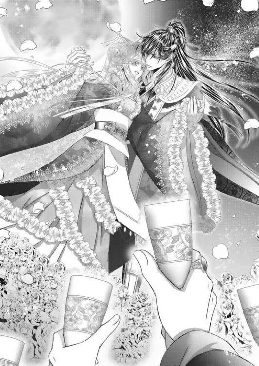
あとがき
こんにちは。日向唯稀です。このたびは本書をお手にしていただきまして、誠にありがとうございます。ロイヤルキス文庫さんでは初めましてになります。
というか、女の子主役の著書は、ヒストリカルから現代物まで過去六冊。本書はまだ七冊目で、その他の既刊はすべて男の子主役となります（汗）。
ただ、ジャンルは問わず書くのが大好きなもので、基本は雑食です。実はこのお話の基礎もデビュー前に作ったもので、それを今の感覚で設定し直して一から書き上げたものです。
ある意味、まさか今になって商業発表できるとは！ 二十年の節目本にできるとは!! と、感激しております。
逆を言うと、思い入れかつ気合いが入りすぎて、途中でグルングルンしてしまいました。
そこへ持ってきて、風邪と持病の連鎖で筆が（というより脳が？）止まり......。
本書が形になったのは、ひたすら美麗な挿絵で世界観を表現してくださった水綺鏡夜先生と、アップを待ち続けてくださった担当様のおかけでず。本当に感謝してもしきれません。ありがとうございます。お許しいただけるようでしたら、ぜひまたご一緒させていただけたら幸いです。じゅ......、需要があればですが......。
さて、そんなこんなで書き終えた鳳凰皇后ですが──。
実は、自分的にはアデリナのような強靱な悪女も大好物です。おそらく彼女がヒロインならもっと濡れ場満載なのかな（身体張って生きてる感あるので）と思うのですが、ダークエロス以前に年齢的にＴＬ外ですね（汗）。いずれにしても愛凰の心が解けていくような愛や、華羽の元気でおしゃまな恋が書けて楽しかったです。
普段はあまり書かない女体描写が照れくさいんですが......（笑）。
ちなみに、本書背景の参考イメージですが、ロンバルディと朱の国の間に聳える山は富士山よりちょっと高いぐらいです。洞窟道の長さも富士山の裾野、長い方の直径（四十四キロ程度）を目安にしました。で、あくまでも船は手漕ぎ、移動手段のメインは馬という設定ですので、行き来の時間があんな感じになります。ただ、こう聞くとグッと親近感が湧くと同時にファンタスティックな世界観が飛んでしまうかもしれませんが。現代物を各キャラの年収計算から作るタイプですので、夢とロマンの姫物も馬の時速計算から始まるわけです。
そんなこんな私ですが、これからデビュー二十一年目に突入いたします。
今後もいろんなジャンルの物語を書けたらいいな──と、今も奮闘中です。
なので、またロイキスさんで、他レーベルさんで、お会いできたら幸いです。
どうぞよろしくお願いいたします！
日向唯稀
鳳凰皇后 ─王女は嫁いで愛を知る─（特典ショートストーリー）
突然決まった嫁入りもさることながら、婚儀から披露宴までがとにかく慌ただしかった愛凰と炎鳳。
──そういえば、新婚旅行の企画さえしてないな。
思い立ったが吉日だった。
炎鳳は、せめて数日でもと愛凰を誘い、一泊二日の温泉旅行へ出かけることにした。
場所が神々の山の麓の皇家の別荘。「それって狐狩りと大差がないんじゃ!?」と言いたくなるが、気は心だ。「同じ遠乗りで二時間なら、ロンバルディへ行く方が海外旅行になるのでは!?」と突っ込んでもいけない。愛凰にとっては、炎鳳と二人で見知らぬ所へ行けることが新鮮かつ喜びなのだ。
「炎鳳様！ 湯殿の準備が整いましたので、いつでもご利用ください」
「おう！」
立場上、二人きりで城を出るのは一生無理そうだが──。
「あなたたち！ 手が空いたら先に明日の準備を」
「はい。女官長様」
しかも、姑代理付き!?
「さ、愛凰様。これにて私どもは別棟に参りますので、どうかごゆりと」
「ありがとう」
女官たちが基本的に嫁の味方なのが、愛凰にとって何よりの幸いだった。
せっかくここまで来たのだから──と誘われて、愛凰は炎鳳と露天風呂に入ることになった。
棟の庭先に作られた石造りのそれは、源泉掛け流し。実は箱入り娘だった愛凰にとっては、見るのも入るのも初めてだ。
殿方と一緒に入ることに気後れがあったが、それもすぐさま冬の夜空に浮かぶ下弦の月の美しさで消されてしまう。近くに華羽が咲いているのか、微かに吹く風に乗って舞い降りる花びらが、いっそう情緒を深めていた。
思わず「ホッ」と溜息が漏れる。
「すまないな。本当なら東の地を案内しながら、諸国巡りができたら良かったんだが。何せ時間が」
緊張が解けたところで、炎鳳が話し始める。
「それはロンバルディ国の再建もありますので、炎鳳様のせいでは......」
「しかし、実際見てみたかったんじゃないのか？ 各地の獣神伝説具合を。あと、大熊猫だったか？ あれは実際、青の国にある熊の里へ行けば見られるそうだし」
「え？ あれは伝説上の生き物ではないんですか？ 本当に白と黒の柄の熊がいるんですか？」
他愛もない話のはずが、愛凰の食いつきがよい。
やはり、最初に開いた書物で目に付いただけあり、大熊猫には興味津々のようだ。
「極限られた生息地に生きるとされるが、確かにいる。青の皇帝に聞いたから間違いない。では、紙婚式までには、観に行く企画を立てていこう」
「はい！」
折角なので一年内──紙婚式までには新婚旅行を決行だ。炎鳳も嬉しそうな愛凰の笑顔に安堵する。
「──よかった。少しは機嫌が直ったようだな」
しかし、これは聞き捨てならなかった。愛凰が「機嫌？」と問いながら首を傾げる。
「最近愛凰の唇が尖っているのをよく見かけた。思い当たる節がないので、女官たちに聞いたら......」
すると、炎鳳が言い訳のような説明をした。
〝お気持ちが落ち着いて、ふと振り返ったときに、満足できる婚儀でもなければ、新婚旅行でもないなと感じられたのではないですか？ 愛凰様は決して贅沢なことはお考えにならないし、おっしゃいませんが、私どもから見ても婚礼の儀はやっつけ。披露宴ははっきり言ってただの宴会接待。しかも、嫁入り道中が最悪を極めたアレですから、一人の乙女に戻ってみたら──。ねぇ〟
〝夢も希望もなかったと思われても、責めることなどできません。しかも、これからロンバルディ国の再建と同時に、周りからはお子のことばかり期待されてしまうでしょうし......〟
〝あんなに美しくお生まれになって、しかも最高位の王女様としてお育ちになっているのに......〟
〝俺が悪いのか!?〟
〝そうは申しておりません。せめて公務の間にこれまで以上に尽くしてさし上げるとか、女の幸せを堪能させてあげるとかなさってくださいね！ って、言いたいだけです〟
〝お、女の幸せ──ねぇ〟
どうやら女官たちに、そうとう絞られたようだ。
夜逃げ同然で嫁いだ愛凰の印象は、炎鳳だけのものではなかった。女官たちが必要以上に愛凰の肩を持つのも、乙女心を察した部分が大きかったらしい。
「猛烈に責められた。だが、言われてみたら納得できることばかりだったから......」
「まあ、そんなことが。それなのに私ったら、勝手に......」
「ん？」
「その......。炎鳳がいつも女官たちと楽しそうにしているのが気になって......。そう言えば、初めてのときもテクニ......、いえ。饒舌さはないみたいにおっしゃったのに、実際はとても饒舌だし、......だし。それで、いろいろと考え込んでいたら......」
ただ、それを知った愛凰が、口をモゴモゴとした。
途中、言葉にするのも躊躇われるような、はしたないことも考えてしまったらしい。
「唇が尖った？」
「ごめんなさい」
湯船に顎を沈めながら謝る愛凰が、なんとも言えず愛らしい。
日頃、何かにつけて理性的な分、こうした感情的な面が見られることが、炎鳳にとってはたまらない。
「謝ることはないさ。愛凰がそんなふうに気にしてくれるなんて──」
込み上げた感情のまま抱き寄せ、口付ける。
「んっ......、炎鳳っ」
「愛凰が心配しないように、これからうんと愛し合わないと」
それだけで終われるはずもなく、柔らかな胸に、そして尻の辺り両手が伸びる。
「っ、ここは......っ、炎鳳」
「もう無理だ。止まらない──愛凰。愛してる」
湯殿にさざ波が立つと同時に、愛凰は炎鳳の腕に抱かれ、ひざの上へ乗せられた。
「──私も」
覗いているのは、夜空の月だけだ。愛凰は照れくさそうに微笑みながらも、炎鳳に身を任せた。
自らも両腕を彼の肩に回し、今一度キスを強請った。
おしまい♥
鳳凰皇后 ─王女は嫁いで愛を知る─
電子第１版発行 ２０１６年11月30日
著 者 日向唯稀
発行所 株式会社ジュリアンパブリッシング
東京都千代田区九段北１‐５‐９‐３Ｆ
０３‐３２６１‐２７３５
(c)Yuki Hyuga 2016
※本書の一部、あるいは全部を無断で複製複写（コピー）、転載、上演、放送することは法律で認められた場合を除き、著作権の侵害となるため、禁止します。